| 終末なにしてますか？ 忙しいですか？ 救ってもらっていいですか？ | |
| 枯野 瑛 | |
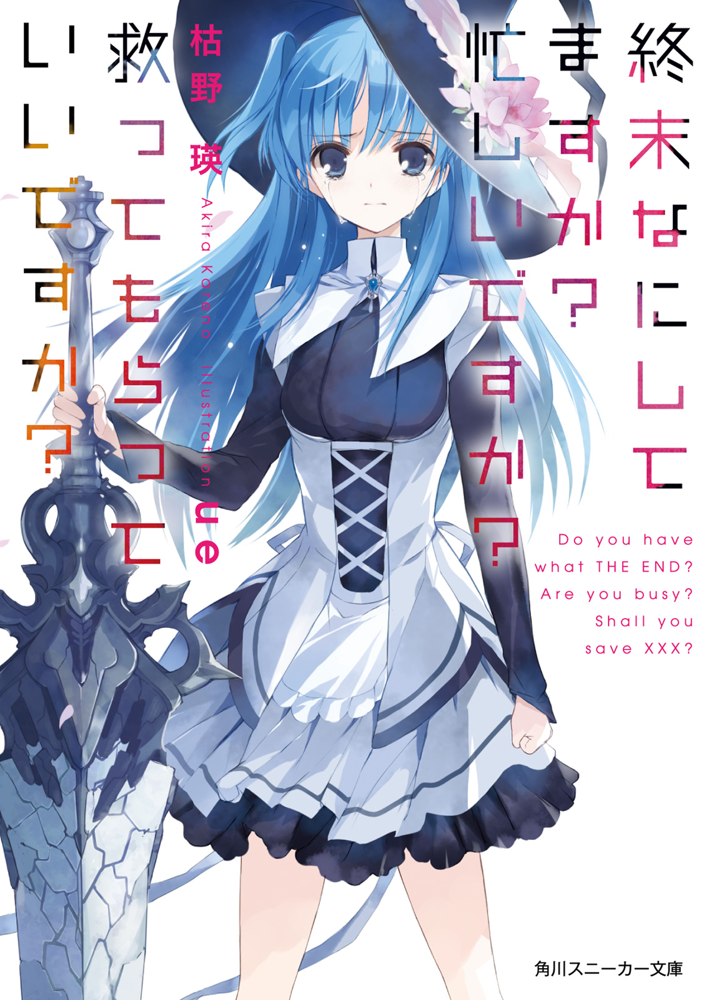
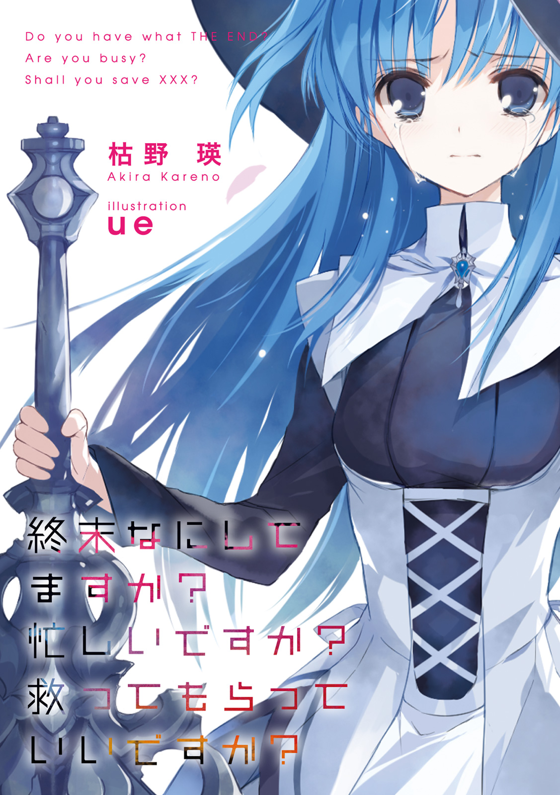
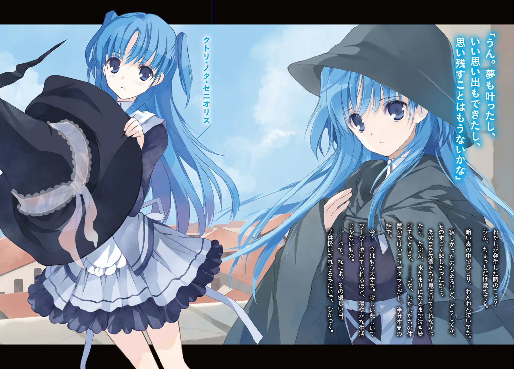
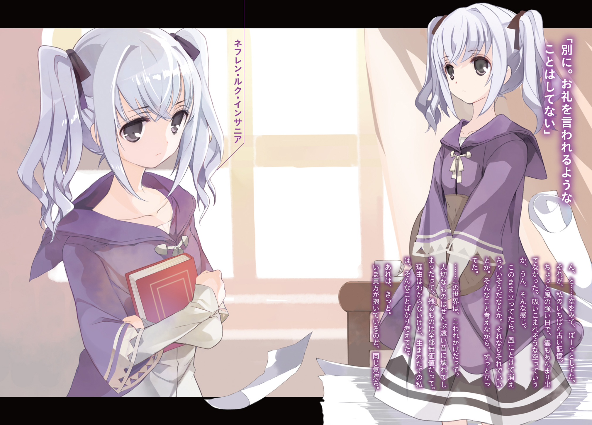
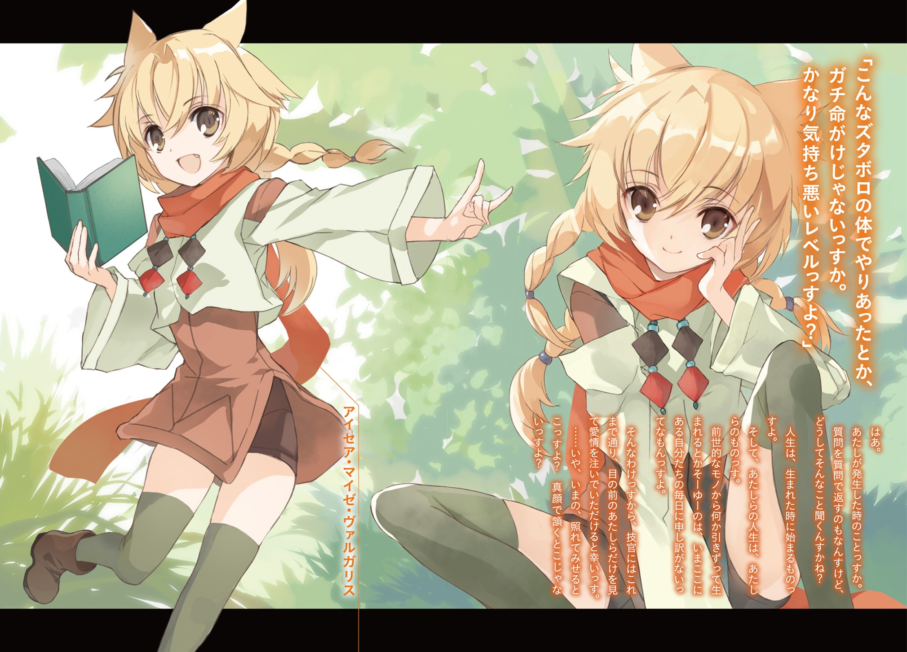
終末なにしてますか？ 忙しいですか？ 救ってもらっていいですか？
枯野 瑛
角川スニーカー文庫
本作品の全部または一部を無断で複製、転載、配信、送信したり、ホームページ上に転載することを禁止します。また、本作品の内容を無断で改変、改ざん等を行うことも禁止します。
本作品購入時にご承諾いただいた規約により、有償・無償にかかわらず本作品を第三者に譲渡することはできません。
本作品を示すサムネイルなどのイメージ画像は、再ダウンロード時に予告なく変更される場合があります。
本作品は縦書きでレイアウトされています。
また、ご覧になるリーディングシステムにより、表示の差が認められることがあります。
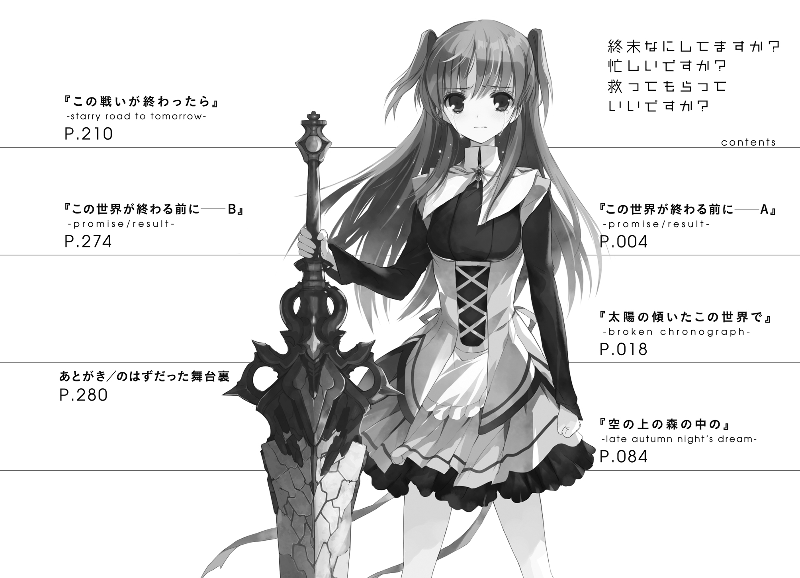
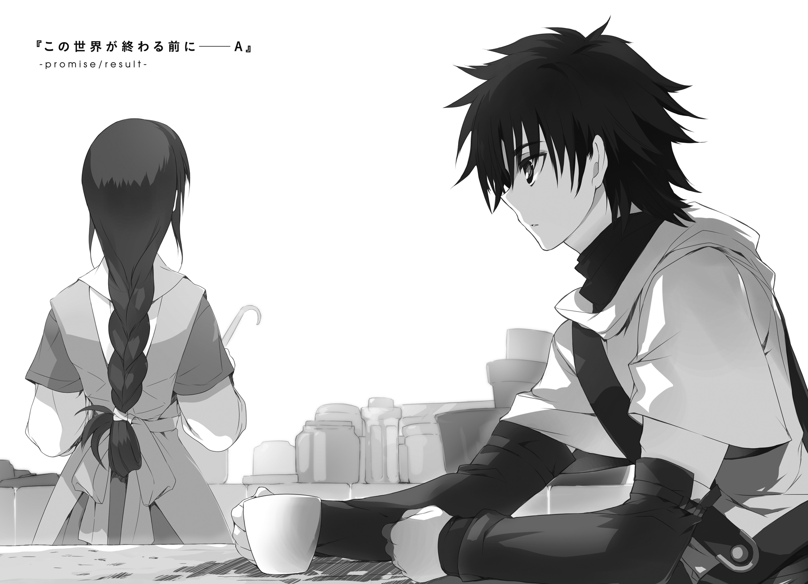
決戦前夜。
せめて最後に、それぞれ会いたい人のところで過ごそうという話になった。
讃光教会認定敵性星神『エルク・ハルクステン』討伐のために集まった勇者様御一行は、そういう理由で、一時解散することになった。
「......なんでそれで、養育院に戻ってくるなんて話になるわけ？」
久々に会った〝娘〟は、なぜか呆れたようにそんなことを言った。
「理由なら、今言っただろ。
明日は決戦だ。無事に帰って来られる保証はない。だからせめて、心残りを遺さないように、最期の夜を大切な人とともに過ごそうっていう──」
〝父〟たる青年の言葉をさえぎって、
「だ・か・ら。そこがおかしいって言ってるの！」
ぴしゃりと言い放つ。
公営の小さな孤児養育施設、その管理人室。
台所をぱたぱたと走り回る〝娘〟の背中は、なぜやらとても、ご立腹のようだった。
「その大切な人ってのは、つまり、奥さんとか恋人とかってことでしょ話の流れ的にはどう考えても！」
「まあ、何人かはそうしてたみたいだな」
勇者様御一行は当代の正規勇者を含めた七人構成。うち既婚者が二名と、恋人がいる者は二名。──まあ、そのうち片方は「恋人の数が多すぎて誰のところも選べそうにない」などとふざけたことを言っていたので、この場合は例外として扱ってもいいだろう。
「なにを他人事みたいに......」
「他人事だろ。少なくとも、俺のことじゃない」
良い匂いが漂ってくる。
小さく鼻をならすと、つきあいのいい腹の虫がぐうと鳴った。幸い、鍋の中身をかきまぜることに集中している〝娘〟の耳にまでは届かなかったようだが。
「おとーさんにはいなかったわけ、そういう女の人？」
父と呼ばれてこそいるが、もちろん青年がこの娘の実の父親であるというようなことはない。たまたまこの養育院における最年長の一人であったことと、本来そう呼ばれるべき立場にあった養育院の管理者が高齢であったことからついたあだ名にすぎない。
「そんな暇、あるわけないだろ。準勇者の資格をとってからこっち、毎日が修行と勉強と戦闘と戦争ばかりだったよ」
「ふうん？」
生返事。あまり信じていないのがあからさまな反応だった。
まあ、仕方のないことではある。讃光教会の定める人類最高兵士である正規勇者はもちろん、それに次ぐ強さと武勲を持つ準勇者だって、世間ではとんでもない人気者だ。街に入り素性を明かせば女の子に囲まれて黄色い声をあげられるし、議会主催のパーティに出席すればやたらと貴族の娘を紹介される。
ただ、こっちの肩書に惹かれて熱を上げる女性がいるということと、こちらも好意を返せる相手であるかという話は、まったくの別問題だ。結局、どんな女性にどんな声をかけられても、自分はすべてを受け流して今日までやってきた。
もったいないことをしているという自覚は、あるのだけれど。
「前に見たときは、すてきな人、まわりにけっこういるみたいだったけどなぁ」
「どいつのことを言ってるのかはしらねぇが、仲間は仲間だぞ？」
「鈍感とかじゃなくて本気でそう言ってるあたり、このおとーさんいっぺん死んじゃえばいいのにとか、わりとマジで思う」
「お前、時々ひでぇな」
「そういうところばっかり、どこかの誰かに似ちゃったものでー？」
──そんなことを思い出している間に、どうやら料理が出来上がったらしい。
「ちび共はもう寝たのか？」
「当たり前でしょ。いま何時だと思ってるの」
「それじゃ、あのダメ師匠はどうしてる？」
師匠というのはこの養育院の管理者である老人のことだ。
そうなるまでの経歴は一切不明ながら、なぜかとんでもない剣の達人。青年にとっては世界最強の男であり、最高の剣の師であり、それ以外のすべての面における反面教師であった。
「また帝都のほうに用があるって言ってお出かけ中。最近は帰ってきたと思ったらすぐに出かけちゃうの繰り返しで、全然ここに居つかないんだから」
「え。じゃあ、いつも、お前とちび共だけで留守番なのか？」
「そうよ？ なに、いまさら心配してくれる気になった？」
「そりゃあ......まあ、な」
〝娘〟はくすりと笑って、
「冗談よ。ときどき街のほうから衛士さんたちが見回りに来てくれてるし、最近はテッドがよく手伝いに来てくれてるし」
「待て聞き捨てならん。衛士はありがたいが、テッドは許さん叩き出せ」
「なにいきなり真顔になってるのよ。そんなに仲悪かったっけ？」
そういうわけではない。ただ、仮にもおとーさんと呼ばれる立場の者として、こういう時には激昂する権利と義務があると思うのだ。
「はい、できた。お皿は自分で準備して」
宣言し、〝娘〟はエプロンを外す。
鍋をまるごと、テーブルの上へと運んでくる。
「待ってました。いやもう、ここに来る前から腹が減って腹が減って」
「こんな時間だし、余りものをあっためただけだけど」
つん、と澄ました顔で〝娘〟は言うが、これはただの照れ隠しだろう。この養育院は、鍋いっぱいのシチューが余りものになるほど裕福ではない。
しかしまあ、そこには気づかないふりをすることにして、
「ありがとな」
その一言だけを、言っておいた。
「お礼言われるようなことでもない」
テーブルの向かいに座ると、これ見よがしに、頰杖をつく。
──実際のところ。
仮に自分にいま恋人のようなものがいたとしても、おそらくこの夜は、この養育院で過ごしていただろう。そう、青年は思う。
五年前。まだ小さかった自分が剣を握ろうと決めたのは、ここを守るためだ。
五年間。大した才能もなかった自分が剣を振るい続けていられたのは、いつかこの場所に帰ってくるためだ。
明日、自分たちは、地上すべての人類の大敵であるという星神に挑む。こう言うと実に御大層な大冒険ではあるが、やることはこれまでと何も変わらない。
守りたいもののため。
帰りたい場所のため。
自分はいつものように剣を振るい、そして生き残るのだ。
「それにしてもさ。こんな時くらいさ、ちょっとくらい気のきいたこと言えないのかな、このおとーさんは」
頰杖のまま、〝娘〟が何やらぶつくさと文句を言っている。
「気のきいたことって、例えば？」
シチューの中にごろりと入った芋を一口サイズに潰しながら、〝父〟は首をかしげる。
「『この戦争が終わったら、俺、結婚するんだ』とか」
「......いや。それ、あんま縁起のいい言葉じゃねーぞ」
自分がまだ正規勇者に憧れるだけの小さな少年だったころ、彼らが大活躍する創作物語を好んで読んでいたことがある。そのころの記憶によれば、いま〝娘〟が挙げたような言葉は、発言者が非業の死を遂げる前振りとして多用されているものだったはずだ。
そしてもちろん、自分は死にたくない。
だからもちろん、自分の死のお膳立てなど、したくはない。
「わかってるよぅ。おとーさんが養育院に置いてった本、今はちびちゃんたちが読んでるから。字とかを教えているうちに、私も筋は覚えちゃった」
「理解した上で言ってるほうがタチ悪いじゃねーか......？」
ふうふうと息をかけて少し冷ましてから、シチューのひとさじを口に運ぶ。
うまい。そして懐かしい。
大げさなくらいに香辛料が効いている。腹ぺこの子供たちの舌に合わせて作られるこれは、帝都のお上品な店などでは、どうしても味わうことのできないものだ。
「それもわかってるんだけど、納得できなくて」
とんとん、と〝娘〟は指先でテーブルを軽くたたく。
「今夜のおとーさんたちみたいに『心残りをなくす』って、いつ死んでもいいっていう準備をするってことじゃない？
それが、ちょっと気に入らない。
私は戦いのことなんて全然知らないけどさ。それでも、本当につらい場所では、全然死ぬ準備できてない人の方が生き残るんじゃないかって思ってる。
何が何でも生きて帰るんだ、俺には帰らないといけない理由があるんだぁ、って」
唇を軽くとがらせ、〝娘〟は続ける。
「お話の中のことならさ、そういう人が死んだほうがドラマティックになって話が盛り上がるから、優先的に殺しちゃう......その理屈、みたいなものはわかるんだ。生きていてほしい人が死んじゃうほうが、絶対に悲しいもの。
でも、そんな神さまの勝手な理屈で殺される側は、たまったものじゃないよね」
よく見ると、その指が、小さく震えている。
〝娘〟は気が強い。気が弱っているときにも、素直にそれを表に出せないくらいには。
不機嫌のふりをして。文句をつけているかのように装って。そうしながらでなければ泣き言のひとつも漏らせないくらいには。
「だからさ。
おとーさんたちが、これから、星神と戦いに行くっていうならさ。そんな後ろ向きのジンクスなんかじゃなくて、もっと確かなものに縋ってよ。
もっとわかりやすい、またここに帰ってくる理由、教えていってよ。
そうじゃないと、私......明日、笑っておとーさんを送り出せる自信、ないよ」
「と、言われてもな」
言わんとすることは、わかる。
気持ちを汲みたくも思う。
しかしまあ、だからといって、結婚の予定は語れない。相手が要ることでもあるし、場の勢いや流れで決めていいものだとも思えない。
かといって、「じゃあ向こうでいい名前を考えておくから、俺が戻ってくるまでに赤ん坊を用意しといてくれ」みたいなことを言って収まるとも思えない。というか、間違いなく全力でひっぱたかれる。
別の手を探す。
「......バターケーキ」
「はい？」
「お前の焼くあれは、けっこう好きだ。次の俺の誕生日にも、特大のを頼む」
「はぁ」
〝娘〟は、目に見えて肩を落とした。
「そんなもんのために、生きて帰ってくるの？」
「何か間違ったか？」
「いやまぁ......なんかこう、シリアスさが足りないっていうか......」
ぽりぽりと頰をかいてから、
「ま、いいか。妥協してあげる。そのかわり、言ったからには、来年には胸焼けするくらい食べてもらうからね、ケーキ」
だから絶対に帰ってこい──とまでは、もう、今さら言わなかったけれど。
少しだけ翳っていたけれど、ともあれ笑顔を見せてくれた。
「ああ、任せとけ」
保証の言葉を返しつつ、シチューを食べる手は休めない。
夜は更ける。
決戦の朝は近づく。
この夜から一年もしないうちに、人類は滅びた。
もちろん、若き準勇者は、約束を守れなかった。
──あれから、長い時間が流れた。
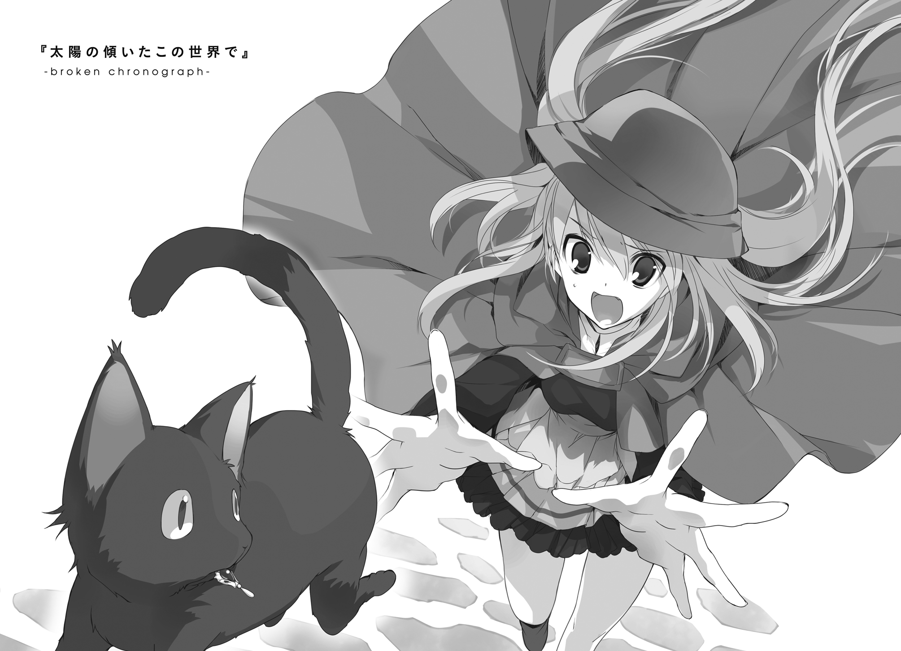
１． 走る黒猫と灰色の少女
黒猫が、走っている。
それはもう、見事な走りっぷりだった。
狭い路地を潜り抜け、
塀の上を駆け抜けて、
屋台の帆布の上を飛び跳ねて。
この一角の呼び名は『寄せ集めの市場街』、もともとは月に一度の定期市が開くというだけの場所だったところが、建物の無計画な増改築を繰り返したあげく巨大な迷路と化してしまったところである。
不慣れな者にはただ歩くだけでも困難なその街を、猫は、全力で駆け抜けている。
なぜ走っているのか。逃げているからだ。
何から逃げているのか。追っ手からだ。
「待、ち、な、さぁーいっ！」
その追っ手であるところの少女が、声を張り上げた。
狭い路地に身を押し込んで、
塀の上を渡って、
屋台の帆布の上から転げ落ちながら（そのたびに店主に怒られた）。
蒼い瞳でまっすぐに前を見据え、ひたすらに黒猫の尾を追い続ける。
地味な格好の少女である。大きな鼠色の帽子を目深にかぶり、同じ色のコートをまとっている。おそらくは少しでも目立たないようにと選ばれたのだろうその組み合わせは、しかし当の本人が大声あげて全力疾走中の今、あまり役に立っていなかった。
「待て、って、言ってる、でしょうがぁ！」
砂埃を巻き上げ、空のペンキ缶を蹴り散らかし、コートの裾をばたばたとはためかせて、少女は走る。
豚面族の雑貨商が。爬虫族の絨毯商が。狼徴人の通行人が。とにかく様々な人々が。すさまじい速度で街を駆け抜けていく彼女を、驚きの目で振り返る。
と、黒猫が急に立ち止まる。
「もらったぁ！」
ここがチャンスだとばかりに、少女は大きく跳躍する。
迫る気配を感じたか、黒猫が振り返る。その口元に、きらりと何かが銀色に光る。
両腕を広げて、全身をぶつけるようにして、黒猫を捕まえる。
全身を包む、不自然な浮遊感。
足元に、何もなかった。
「......え？」
寄せ集めの市場街は、上下左右の区別なく入り組んでいる。平坦な道を歩いていたはずが、いつの間にか集合住宅の屋上に出ていたなどということも珍しくない。
「あれ？」
青い空が見えた。
白い雲も見えた。
黒猫を抱きかかえたまま、少女は、摑まるものの何もない中空に飛び出していた。
真下方向に見えるのは、西第七ブリキ露店街。主に鍋や包丁を扱う露店が並ぶその細い小道まで、建物の高さに直して、おおよそ四階ほどか。
「うそぉっ......！」
少女が体を力ませる。
その小さな体を取り巻くように、淡い燐光が浮かび上がる。
呪脈視の才を持つ者が見れば、少女の体の内にある魔力が熱く熾き上がろうとしていたのが分かっただろう。そしてまた、少女がその魔力で何を起こそうとしていたとしても、既に間に合わないだろうということも。
魔力とは炎のようなもの。小さな火花でできることはたかが知れているが、大きく燃え盛る炎であれば大きな力を振るうことができる──とはいえ、そこまで火を大きくするには手間と時間がかかる。こういうとっさの変事に対応するには、向いていない。
一人と一匹の体が、落下を始める。
少女の体から引きはがされた燐光が、むなしくその場を漂って、すぐに消える。
悲鳴をあげる暇もない。はるか下にあると思えていたはずの石畳が、いつの間にか視界いっぱいに広がっている。思わず両腕に力がこもる。黒猫がギャアと悲鳴を上げる。固く両目をつぶる。
そうしている間にも地面は近づいてきて、
頭上から、女の子が降ってきた。
見た目の年は、十代の前半くらいだろうか。けっこうな高さから落ちていると見えて、既にかなりの速度になっている。このままいけば、石畳にまっすぐ激突し、のどかな昼下がりにはあまり似つかわしくない事態になるのは間違いない。
何の気もなく斜め上に視線を向けた瞬間、目に飛び込んできたのがその眺めである。
身体が勝手に動いていた。
落下地点に走り込み、両腕を伸ばし受け止めようとする。が、予想していたよりも圧倒的な勢いで落ちてきたその体は、ヴィレムの弱った両腕で支え切れるものではなかった。となれば、結果は当然、分かり切っている。
「ぐえあっ!?」
一瞬の後には、その少女の下敷きになって、潰れた蛙のような声を出していた。
「......痛ぇぇ」
腹から絞り出すような声で、うめく。
「ご、ごめんなさいっ!?」
さらに遅れること数秒、状況を把握したらしい少女が、慌てて飛び退く。
「け、怪我とかない!? ちゃんと生きてる!? 内臓とか潰れてな、あっ」
慌てるその腕の中から、一匹の黒猫が逃げ出した。反射的に伸ばした少女の手が空気だけをつかむ。あれよあれよという間に、その後ろ姿は雑踏の中に見えなくなった。
「ひゃ、あああっ!?」
続いて少女は、自分自身の格好に気が付いた。
全力疾走の最中にか、それとも自由落下の時になのか。目深にかぶっていたはずの帽子が、いつの間にかなくなっている。
肩の下にまで流れ落ちる、澄み通った、蒼色の髪。
──おい、見ろよあいつ。
どこかから、そんなつぶやきが聞こえた。
西第七ブリキ露店街を歩く通行人たちが、露店の主人たちが、足をとめ商談を中断して、少女の髪と顔とに視線を注いでいた。
浮遊大陸群には、かつて星神の眷属であった様々な種族の者が生きている。当然、その姿も様々だ。角を持つ者がいて、牙を持つ者がいて、鱗を持つ者がいて、顔のパーツのいずれかが獣のそれに置き換わったような異相の者がいる。
そんな中で、角も持たず、牙も持たず、鱗も持たず、獣に似た場所をも持たない種族も、少数ながら、やはり存在する。そのような種族特有の分かりやすい『徴』を持たない種族は、俗に『徴無し』と呼ばれている。
──どうして、こんなところに。
──ちっ、縁起の悪ぃモン見ちまった。
「あ......」
徴無しは、一般的に、疎まれている。
なんでもかつてあの広大なる大地を滅ぼし、生けるすべてのものを天空へと追いやった伝説の種族『人間族』も同様の姿をしていたらしい。姿の似る者は性質も似ると考えるのは呪術的思考の基本中の基本であり、ゆえに徴無しは不吉で不浄なものとされている。表立って迫害を受けることこそ少ないが、まあ、肩身の狭い思いをすること自体はどうしようもない。
さらに、少女には何の関係もない不幸な事実が、この状況に拍車をかける。
この街の前市長が、悪徳政治家を絵に描いたような奴だったのだ。収賄癒着に始まり圧力や犯罪揉消しを経由し政敵暗殺に至る、そんな汚職の見本市みたいな経歴を駆け抜けて、街のあらゆるものをさんざん食い物にした。最終的には中央議会の監査が入って島外追放になってめでたしめでたし......だったのだが、よりにもよってこいつが堕鬼種だった。
堕鬼種は大昔に人間たちの間に潜んで堕落に誘っていたという鬼種の一種で、だからその外見は人間によく似ていて、つまるところ角も牙も鱗もない徴無しだった。ゆえにこの街の住人の多くは徴無しを見ると前市長への怒りと憎悪をどうしても思い出してしまうのである。
ひどいとばっちりである。
さすがに、表立って非難の声をあげるような者はいない。それでも、ねっとりと薄く絡みつく棘のある視線は、とても居心地の良いものとは言えない。
「わ、わかってるわよ......すぐに消えるから......」
視線に追い立てられるように少女は立ち上がり、その場を走り去ろうとした。
できなかった。
ひっくり返ったままのヴィレムの腕が、少女の手首をつかんでいる。
「え......？」
「忘れモンだ」
手首をつかんでいるのとは逆の手を差し出す。おずおずと少女が手のひらを出してきたので、その上に、小さなブローチを放り落とした。
「あっ」
「さっきのチビ猫が落としてった。こいつを追ってたんだろ？」
こくこく、と二度もうなずいていた。
「あり、がとう」
戸惑いながら、両手で包み込むようにしてブローチを受け取った。
「この辺りは初めてか？」
少女は再びうなずく。
「......そうか。しょうがねぇな」
ヴィレムは立ち上がり、自分のマントをはぎ取ると、有無を言わさずに少女の頭におっかぶせた。
フードが外れ、彼自身の風貌が周囲に晒される。
肌にまとわりつくような視線とざわめきが、今度は、ヴィレムに向けられる。
「えっ......」
自分で自分の姿を見ることはできない。けれどもちろん、ヴィレムは自身の姿をよく知っている。だから、周囲の者たちが──そして目の前でマントをかぶって呆然としている少女がいま何を見ているのかを、よく理解している。
ぼさぼさの黒髪の、本来ごくありふれているはずの、成人男性。
そこには角も、牙も、鱗も、ないはずだ。
「行くぞ」
少女の手を引いて、大股に歩きだす。「え、え、え」と状況をつかめずにいる少女が疑問の声を引きずりながら、それでも小走りについてくる。
急ぎ、その場を離れた。
「......よし。これでいいな」
手近な帽子店に入り、手近な帽子を購入。少女の頭の上に、ぼすんと載せた。
少々サイズが大きかったような感もあるが、予想していたよりもしっかり似合っている。ヴィレムは満足して頷くと、マントを回収した。
「あ、あの、これは......？」
そこまで完全にされるがままだった少女が、おずおずと尋ねてくる。
「そいつをかぶってりゃ、徴無しだなんてバレることはねぇだろ」
自分たちのような徴無しは、一般的に、疎まれている。しかし、憎まれているというほどの扱いを受けているわけではない。そもそも、外見的特徴がないことこそがその証しなのだ。派手に目立ちさえしなければ、それほど極端に騒がれるようなことはない。
「どこの浮遊島から来たのかは知らねぇが、このへんはあまり徴無しの居心地のいい場所じゃねぇ。さっさと用件を済ませて帰りな。
港湾区画は向こうのほうだ──」
道の彼方のほうを指し示して、
「──治安が不安なら、引っ張ってってやろうか？」
「えと、その、そういうわけじゃない、けど」
ヴィレムはそれなりに背が高くて、少女は小柄で、ついでにいまそこに載せたばかりの帽子のつばは大きくて、つまるところ少女の表情はあまりよく見えない。変装としては完璧だが、互いの顔が見えないのでは、いまこの場におけるコミュニケーションには少々の問題がある。
「徴無し、なの？」
「ああ。さっき見た通りだ」
フードの下で、小さくうなずく。
「なんで徴無しが獣人の街にいるの？ ここって、浮遊大陸群西南部で一番風当たりが強い浮遊島なんでしょう？」
「住めば都、ってな。確かにいろいろ不便なことも多いが、慣れてしまえばこれはこれで居心地の良いもんだ。......むしろ、それを知ってるお前は何でここに来た？」
「それは......その」
口ごもる。
そこで黙り込まれると、まるで自分が責めているかのような気になってしまう。聞こえないように小さく舌を打つと、「こっちだ」と先に歩き出す。
少女は、ついてこない。
「どうした、置いていくぞ？」
「あ、あのっ」
表情を半分帽子に隠したまま、少女は必死な声で、
「いろいろしてくれて、ありがとう。
それと、いろいろ迷惑をかけたこととか、ごめんなさい。
それから、その、こういうのって言えた立場じゃないとは思うんだけど、えと、」
「......あー」
がり、と頭を搔く。
「行きたいところがある、とかか？ 言ってみろ」
少女の表情が輝いた──と思う。下半分しか見えないから、よくわからない。
寄せ集めの市場街の近辺は、とにかく道が分かりにくい。目で見えているはずの場所に行きつくのに、目に見える道が使えるとも限らない。さんざん回り道をさせられたあげくに道に迷ってしまう者も少なくない。
この浮遊島でもっとも高いところにある、ガラクタ塔の上。
足元が安い金属板に覆われていて、歩くたびにガンガンとやかましい金属音が響く、そこに、回り道を繰り返してようやくたどり着く。いちおうは地元に住む者であるはずのヴィレムの土地勘は、そこそこ役に立ったが、そこそこ程度にしか役に立たなかった。
公用自律人形に道を尋ねたり、三叉路だったはずの道が五叉に増えていて頭を抱えたり、そこらのカーテンをぺらりとめくったら蛙面人の入浴シーンに出くわしたり、はぐれ牛の暴走に追いかけられたり、右へ左へと逃げ回っていたらなぜか鶏小屋の上に落ちて屋根をぶち抜いてしまったり、怒声をあげる球形人に謝りながらも尻に帆をかけて逃げ出したり。
「あははは、大変だった！」
ぐるぐると街中を歩き回っているうちに、少女の口調からはどんどん遠慮が抜け落ちていった。それが本来の彼女の性格なのか、今のこの体験でテンションが上がっているだけなのかは判断がつかなかったが、少なくとも、妙に萎縮していた先ほどまでよりは年相応に見える。
そして、今。
「わあ──」
申し訳程度に設置された手すりから身を乗り出すようにして、分かりやすい感嘆の声をあげている。
確かに、良い眺めではある。間近に見ればごちゃごちゃしているだけのあの街並みも、遠く見下ろせば、精緻に描かれた飾り模様のように見える。誰に設計されたわけでもなく自然に広がっていったのだという路地のまがりくねり具合も、俯瞰してみれば本物の生物のような躍動感があるように見えなくもない。
そこから少し視線を上げれば、港湾区画。浮遊島の外縁の一部を金属で覆い、飛空艇の発着に必要な設備を整えた、島にとっての玄関に当たる場所。
そしてその向こう側には──当然のように、蒼い空が広がっている。
ここは、空の上だ。
かつて地上と呼ばれていた世界は遠く、様々な意味で手の届くところにはない。
この空には、百を超える数の巨大な岩塊が浮かび、風に彷徨っている。『浮遊島』と呼ばれるその小さな大地の上が、いま、〝人々〟が息づき住まうことのできる世界のすべてだ。
「......どうしたの？」
少女が、こちらの顔を覗き込んでいた。
「いや、何でもない。青空が目に染みたとか、そういうのだ」
ヴィレムは軽く首を振ると、いつもの緩んだ笑顔を浮かべる。
「なに、それ」
少女はくすくすと笑うと、辺りに誰の姿もないことを確認して、帽子を脱いだ。
蒼い髪が──空と同じ色の髪が、風にほどけて流れるように、あふれ出す。
「この眺めが、見たかったのか？」
「そう。
もっと高いところからとか、もっと離れたところから浮遊島を見たことはあるんだけど、ちゃんと街の中から街を見下ろしたことが、今までなくて」
──辺境寄りの浮遊島に住んでいる子なのだろうか、と思う。
「一度くらいは見ておきたいな、って思ってたの。
うん。夢も叶ったし、いい思い出もできたし、思い残すことはもうないかな」
何やら不吉なことを言う子だな、とも思う。
「今日は、本当にありがとう。
素敵なことが、いっぱいあった。全部、きみのおかげ」
「そりゃさすがに言いすぎだろ」
ぽりぽりと後頭部を搔く。
ヴィレム自身の感覚としては、道端で拾った風変わりな子猫の散歩につきあったようなものだ。たまたま時間があったから、普段は起こさないような気まぐれを起こしただけ。その程度のものに感謝されても、少々居心地が悪い。
「......それで。あれは、お前の出迎えか？」
「え？」
視線で、少女の背後を示す。
振り返った少女が、「あっ」と小さく声を漏らし、驚愕と申し訳なさが入り混じったような複雑な顔になる。
いつの間にか、そこには巨軀の爬虫人が立っていた。
全身を鱗に覆われた一族である彼らには、体格の個人差が他種族に比べても極端に激しいという特徴がある。平均をとれば他種族と変わらない数字に留まるが、稀に、他種族で言えば小さな子供としか思えない背丈で成人するような者が現れたり、逆に、何かの冗談にしか思えないような巨漢が生まれ育つことがあるのだ。
目の前にいるこの爬虫人は、明らかに後者だった。
しかもその全身はなぜか軍服に包まれていて、ただそこに立っているだけでも、なんというか、とんでもない威圧感を周囲に振りまいている。
「──そうね。夢みたいな思い出だったけど、時間切れ」
くるん、と少女は身をひるがえし、
「最後にもうひとつだけお願いがあるんだけど、わたしのことは忘れてくれると嬉しいかな」
そんなことを言い置いて、爬虫人の傍へと走り寄る。
なんだそりゃ、と思う。
何か事情があるのだろう、というのは分かった。しかし、（見た目の印象はさておき）その事情に苦しんでいるという様子でもなかった。ならば、口を出す必要はないだろう。本来の飼い主が現れたなら、それ以上、子猫の散歩に付き合う義理はない。
少女は最後にもう一度だけ頭をさげ、そして爬虫人とともに階下の雑踏の中へと消えていく。
「......並べて見ると、身長差すげぇな」
そんなことを呟きながら、二人の後ろ姿を見送る。
──遠く港湾区画の方角から、夕刻を知らせる組み鐘時計の演奏が聞こえる。
「っと、もうそんな時間か」
夕方から、人に会う約束があった。まだまだ時間があるような気がしていたが、どうやらそろそろ余裕が残り少ないらしい。
まあ、いつまでも一人こうしていても仕方がない。
眼下の街並みに──そしてその向こうに広がる空にもう一度だけ目をやると、ヴィレムもまた、雑踏の中へと踏み入って行った。
人間という種が滅びてから、今年で五百と二十六年になる。
当時あの大地の上で何が起こったのか。
正確な記録は残されていない。数ある史書はそれぞれがてんで勝手な「真実」を語るのみで、その中のどれが本当に事実を伝えているのか、あるいはそれらすべてが後世の歴史家の妄想に過ぎないものなのか、甚だ疑問ではある。
ただ、いずれの史書にも共通して語られる事柄が幾つかある。
いわく。当時の地上は、とても、人間という種に優しくはなかった。
なまじ数が多く、大地に広がって栄えていたことが災いしたのだろう。数多くの自生怪物が彼らを脅かした。
悪魔や魔王といった連中が、こぞって堕落の道に誘ってきた。
豚頭族や古霊族とは領土の問題でぶつかってばかりだった。
人間自身の中からも、呪われた変異体である鬼種族が誕生し、隣人に襲いかかった。
果てには、強大な星神が眷属を率いて攻め込んでくる、などということすらあったらしい。
加えていわく。人間という種は、決して、強靱ではなかった。
鱗を持たず、牙も爪も持たず、翼も持たず。膨大な魔力を振るうだけの器もなく、精緻な魔術を極めていたわけでもない。繁殖力などという点でも、当時の豚頭族などに比べ、明らかに劣っていた。
にもかかわらず、人間という種は、地上のほとんどを支配していた。
一説によれば、彼らの戦力を支えていたのは、冒険者と呼ばれる侵略戦闘のエキスパートと、彼らの活動を総括および支援していた組合同盟の力に因るものが大きかったという。いわく、職能の細分化による集団戦闘の効率化を行った。多彩な特筆能力のラベル化による管理および育成の効率化も行った。果てには強力かつ希少な魔術を護符に封じ量産することすらやってのけたのだとか。それらによって自らを客観的に育成することが可能になった冒険者たちは、そうでない人々とは比べものにならない速度で成長し、強大な戦力となった。
別の一説によれば、冒険者とは別に、人間には勇者と呼ばれる戦力もあった。魂に背負った業や宿命を力に転化するとかなんとかいう連中で、ほとんど天井知らずと言って良い戦闘力を発揮していた。弱点はただひとつ、ごく限られた一部の選ばれし者しかなれないせいで、絶対数が少ないということだけ。
さらに別の一説によれば、聖剣と呼ばれる兵器群もまたすさまじい力を発揮していたという。何十という数の強力な護符を集めて一本の剣の形に組み上げる。結果、それぞれの護符に込められた力が複雑な相互干渉を起こして、とんでもない破壊力を持った戦略兵器が出来上がるのだとかなんとか。
どれもこれも、荒唐無稽な説だ。
にわかには信じがたい話ばかりだ。
だが、当時の人間が地上の覇者であったということはどうやら事実であり、そのためには無数かつ強大な敵のことごとくを打ち倒すだけの力が必要だったこともまた間違いない。つまりは、先の説の中にも、ひとつやふたつくらいの真実は混じっていたのだろう。
今から五百と二十七年前。
人間たちの領域、神聖帝国中央の王城に、やつらは現れた。
やつらが結局何であったのか、そして何であるのか。そのあたりについては、数ある史書がそれぞれに好き勝手な説を唱えている。
人間たちの禁呪によって生み出された膨大な呪詛の結晶であるという説。
人間たちが対亜人戦線用に開発していた秘密殺戮兵器が暴走したのだという説。
何かのきっかけで、地獄の蓋が開いて中身が漏れ出したのだという説。
世界創世の昔から深淵の底に眠っていた、世界自動浄化機構が覚醒したのだという説。
ほとんどの者は面白半分に自分の空想を語るばかりで、実際の真実を突き止めようと考えていた者などほとんどいなかったはずだ。なにせ世界は終わりつつあるのだ。真実がどんなものであったとしても、やつらが手のつけようのない脅威であることには何の変わりもない。たとえ「ジャガイモ畑に一株だけ紛れ込んだトマトが孤独に耐えかねて超進化した」が真実だったと証明されたとして、自分たちの今日や明日にどういう影響があるというのか。
ただ、それは侵略者だった。
そして、それは殺戮者だった。
それは、十七種類の獣の形を得た、理不尽そのものだった。
獣は、恐ろしい速さで世界を喰らい始めた。そして人間は、この新しい脅威に抗しきれなかった。
ほんの数日で、地図から国が二つ消えた。
週が明けるころには、国が五つと島が四つ、海が二つ消えた。
その次の週が明けるころには、地図そのものがもう、意味を無くしていた。
やつらの出現から人間種が滅びるまで、一年も経たなかったと言われている。
人間が滅びてなお、それらは勢いを止めなかった。
大森林を守ろうと古霊族が戦い、そして滅びた。
偉大なる霊山を守ろうと土竜族が戦い、そして滅びた。
生命ある者の頂点としての矜持を守ろうと竜が戦い、そして滅びた。
何かの冗談のように、地上にあるあらゆるものが失われていった。
誰かが気がついた。もはや自分たちには、地上に生きる未来はないのだと。
生きることを望むのならば、地上を遠く離れ、獣たちの牙の届かない地へと逃れる必要があるのだと。
──それから、長い時が流れて、今。
２． 徴のない男
俺は何だろう、とヴィレムは考える。
答えは単純だ。ここにいないはずの人間。ここにあってはいけない生命。
帰るべき場所があるけれど、帰るための手段をもう持たない、致命的な迷い子だ。
三万二千ブラダルを返済した。
残りの借金は、おおよそ十五万ブラダル。
太陽の傾いたこの時間、表通りは華やかなものである。街中のあちこちに張り付けられた灯晶石が、昼も夜もなく辺りを眩しく照らし出している。
うすぼんやりと漂う薄紫の煙と、それをかき回すようにして行き交う多様な「人々」。緑鬼族の呼び込みが声を張り上げる。猫徴族の商売女が煙草をくゆらせる。豚頭族の若者たちがバカ笑いしながら街を練り歩いている。
それに比べて、この裏通りは、静かなものである。
あの喧噪から建物ひとつ分ほどしか挟んでいないとは信じられないほど、そこには音がなく、匂いがなく、気配がなかった。
「半年ぶりくらいか、グリック」
安い定食屋の、奥まったところにある座席。久しぶりに会う友人に向けて、にへらと覇気のない笑みを浮かべた。
くたびれたコートは着たままだが、今はフードを下ろし、徴無しの素顔を露わにしている。
「............」
グリックと呼ばれた男──こちらは典型的な緑鬼族だ──は、受け取った金を数えながら、不満げに小さく鼻を鳴らすだけだった。
封筒の中には、小額のブラダル紙幣が大量に詰め込まれていた。数えるのにも時間がかかる。
微妙な雰囲気。
「ええとだな。そうだ、アナーラ達は元気か？」
「ヤツなら先月にドジを踏みやがってな、〈三番〉の腹の中に入っちまったよ」
手元の金から目を離さず、グリックはそっけなく答えた。
「ちなみにグルグラも死んだ。夏に四十七浮遊島が沈んだのは覚えてるか？ あの時の崩落に巻き込まれてな、今じゃ地上の染みのひとつに混ざっちまった」
「......悪ぃ。無神経だったな」
青年が、申し訳なさそうに肩を落とす。
グリックは、かかかと笑う。
「気にすんな、俺もあいつらもサルベージャーだ。夢を追って地上に初めて降りた時に、死ぬ準備も死なせる覚悟も済ませてる。
それにまあ、なんだかんだで、あいつらも長生きしたほうさ。サルベージャーってやつのほとんどは、地上に初めて降りたその日のうちに人生を終わらせるんだからな」
金勘定が終わる。
「三万二千。確かに受け取ったぜ」
とんとん、と紙幣の端を揃えて封筒に入れ直す。
「......なあ、ヴィレム。お前、本当にこれでいいのかよ？」
「何の話だよ？」
「半年かけて三万。残りの額は十五万。すべて順調にいって、あと二年半だ」
「あー、そういう話か。悪ィ、これ以上のペースで稼ぐのはちと厳しいな」
「別に催促してるわけじゃねーよ。つーか、分かってて言ってんだろお前」
封筒を古革の鞄に突っ込んで、
「ここは獣人族の島だし、獣人族は角も鱗も獣耳もない連中を──『徴無し』を嫌ってる。どこからどう見ても徴の無いお前に、まともな仕事があるはずがねえ。どうせ馬鹿みてぇに安い日雇いで食いつないでんだろ？」
「そりゃ、まぁ......」
ヴィレムは視線を斜め上に彷徨わせる。
グリックは半眼になる。
「となると、こいつはお前の半年に稼いだほとんど全額だ。そーだろ？」
「食費は引いてるぞ。最近の仕事は、どれもまかないを出してくれねえからな」
「そういう問題でもねえってんだよ、ったく」
たしたしたし、と節の浮いた緑鬼族の指が苛立たし気に机を叩く。
「お前には借金を返すこと以外何かないのか、ってことを言いたいんだよ、俺は。
目を覚ましてから一年半、何かやりたいこととか楽しみたいこととか見つからなかったのか？」
「そこはほら、人生は生きてるだけで楽しいものだって言うだろ？」
「ンなヌル人生正当化の定番言い訳に興味はねえんだよ」
ばっさりと切って捨てる。
「俺は、俺が楽しいと思うことのために生きてる。
地上は宝の海だ。空の上じゃ既に失われた道具、資材、技術がゴロゴロしている。
そいつらを探すのも、見つけるのも、持ち帰って金に換えるのも好きだ。
見つからなくて赤字を抱えるのも、まあ、あれはあれでいい人生のスパイスだ。ヘマうって〈六番〉の巣に踏み込んじまった時なんかは、それまでの人生で一番強く生を実感できたな──そういう色々があったから」
一瞬遠い目になって、
「俺たちはサルベージャーをしていた。
なあ、ヴィレム。お前はどうなんだ。
真面目にコツコツやってくのが性に合ってるなら、それはそれで構わねえよ。でもお前、この借金返し終わった後の人生、考えてねえだろ？」
「......ちょっと塩っぽくねぇか、ここのコーヒー」
誤魔化す言葉があからさますぎた。
グリックは見るからに微妙な顔になり、ヴィレムは次の言葉を見つけられずに曖昧な笑いを顔に張り付けた。
そのまま、微妙な空気が流れる。
緑鬼族という連中は、基本的にどいつも単純で感情的で本能に忠実だ。もちろん個人差というものはあるもので、普段のグリックは血を疑いたくなるほど珍しいほど理性的かつ理屈屋で、ついでに人情家だ。
ヴィレムは、彼のそういうところが少しばかり苦手だった。
「......なあ。ひとつ、仕事を引き受けてみねえか」
ぽつり、とグリックが切り出した。
「俺の知り合いでよ、そいつはまあ──まっとうな仕事についてる奴なんだが、人を探してるってのがいるんだよ。ちょいと長い期間を拘束されて徴無しに関わることになるってんで、思うように候補者が見つからないらしい。
お前なら、徴無し相手は嫌だとかいうこともねえだろ。何せ、お前自身がそうなんだからな」
「お前だって大したもんだろ。何せ俺の大切な友人だ」
「俺はサルベージャーだ。大地に魂を置き忘れてきちまってるんでな。空の上に縛られる仕事なんてのはごめんだ」
くくくと笑って、
「仕事の内容は、なんというかだな、一言でいえば護翼軍の秘密兵器管理だ」
「軍？ 秘密兵器？」
あまり穏やかでない言葉に聞こえた。
この浮遊大陸群で軍といえば、外敵たる対〈十七種の獣〉の侵略に対し戦力をもって抵抗する公的組織だ。ここが空の上であるという圧倒的な地の利をもってしても、かつて地上の生態系を全滅させた〈十七種の獣〉相手には分が悪く、ゆえに戦力確保のために色々となりふり構わない手を使っている──などと聞く。
「知ってるだろ。俺、もう戦えねぇぞ？」
「わかってる。軍といったって、別に現場で切った張ったしろってわけじゃねぇよ。もっとうしろめたくて表に出せないデスクワークだってあるんだ」
「どんなだよ」
あまりいいイメージの持てない説明だった。
「それ、雇われバイトにやらせていい類の仕事なのか？」
「よくないだろうな。だがまあ、そのへんの書類は俺が何とでもしてやるさ」
やはり穏やかでないことを言って、グリックはかかかと笑う。
「まあ、聞け。なんでもその兵器は実質的に、オルランドリ総合商会が管理・維持・運用しているものらしい。
知っての通り、浮遊大陸群の法律では、民間がある程度以上の威力の兵器を持つことを許していない。
だが、オルランドリは軍にとっては大事なスポンサーのひとつで機嫌を損ねたくはない。それに、仮に護翼軍がそのまま兵器を徴収したところで、軍の技術力と資金力じゃまともに管理も維持もできないことは目に見えている。だから──」
「名目上は軍の所有物だということにして、実質上は商会所有のままにしておく？」
「そういうことだ。軍からはお飾りの管理者を派遣し、あとは何もしない。
本物の軍人にとっては、その『管理者』はとんでもない閑職だ。現場での発言権はないうえ、ブツは秘密兵器だから戦果は表に出せない。出世コースからは完全に外れる。
だから、話が外部に流れてきたわけだ」
琥珀を眼窩にはめ込んだような緑鬼族の目が、まっすぐにヴィレムを見ている。
「軍人としての肩書きは、さっきも言ったが、俺が用意してやれる。
お飾りの管理者だから、特別な技術や資格は必要ない。必要なのは口の堅さと忍耐力くらいのものだ。ついでに、危険手当だか口止め料込みだかの全部乗せで、報酬額はけっこうなもんだ。お前の借金をきれいに完済しても、そこそこの余りが出る。
そいつを使って、何か、生き方を見つけろ。
事情があるのはわかるが、助かった命は無駄にするな。この世界でちゃんと生きてくれ。それが、俺とあいつらの願──」
そこまで言って、グリックは首を横に振る。
「悪い。顔なじみが減ってきたせいで、なんだかんだで俺も弱気になってるらしい」
緑鬼族の青年の顔が、他種族の者にもはっきり分かるくらい、苦笑の形に歪む。
今さら、どうにも断りにくい流れだった。
「わかった。もう少し詳しい話を聞かせてくれ」
「請けるのか？」
「もう少し話を聞いてから決める。だから、聞いたら断れなくなるような話はまだ伏せてくれ」
「わかった。まずは......」
あからさまに嬉しそうな顔になってから、グリックは手元のコーヒーに目を落とし、
「......塩っぽいな、ここのコーヒー」
にかっと笑った。
グリックは理性的かつ理屈屋で、ついでに人情家な緑鬼族で、つまりは良い奴だ。
ヴィレムは、彼のそういうところが少しばかり苦手だった。
さて、浮遊大陸群は、百を超える数の浮遊島の集合体である。
ほぼ中央に位置するのが第１浮遊島。そこから渦を巻くような順で番号が割り振られる。内側であれば番号が若く、外側に行けば行くほど大きい。
ここにいくつかの事情が加わる。中央近くの島──具体的には40番ほどまでの島は、お互いにそれほど離れた位置にない。いくつかの島はほぼ密着状態で安定しているため、巨大な鎖や橋などによってお互いを固定しているところもあるほどだ。近さはそのまま交流の多さにつながり、ひいてはそれらの島にある街が栄えることにも直結する。
逆に。縁のほうの島──70番以降の島などは、互いに距離が開いているのみならず、島そのものの大きさもさほどではないことが多い。そうなると栄えるどころか、街そのものをめったに見かけなくなる結果、その辺りには、公営連絡飛空艇の巡回ルートにすら入らない辺境の島が集まることになる。
くだんの施設のあるという島は、68番。かなり微妙な位置である。
とりあえず公営連絡飛空艇で直接そこまで行くことはできない。
もちろん、手段を選ばなければ行く手段はいくらでもある。飛空艇を買うなり雇うなりして直接乗りつければいい。しかし予算を抑えようと思うならば、別のルートを考える必要が出てくる。公営の連絡飛空艇が停まる最寄りの島は、爬虫族の集落がある53番島。そこで「渡し」をしている飛空艇を探して送ってもらう。
金額の計算は完璧だった。ヴィレムは無事に、68番浮遊島にたどり着いた。
しかし、それと違うところで計算に見事に失敗していた。
──現地に着いた時には、陽がとっぷりと沈んでいた。
びゅごおおお、と強い風が吹いていた。
「はは......こりゃ失敗したな」
無人の港湾区画に立ち、ヴィレムは独り笑う。
馴れない軍服の上に羽織ったコートの裾が、ばたばたと風をはらんで暴れまわる。
渡しを頼んだ飛空艇は、ここにヴィレムを放り出すと、さっさと53番島へと戻ってしまった。つまり退路も既に断たれたということだ。
目の前に、風にさらされてぼろぼろになった看板がある。
いわく、市街地は右方向に二千マルメル。オルランドリ商会第四倉庫は逆方向に五百マルメル。その隣に、ふたつバラバラの方角を示した赤い矢印。
「これか」
オルランドリ商会第四倉庫。
建て前上だけででも、軍の名義になっていたのではなかったか。とは思うが、軍人でも何でもなかった自分を雇って責任者に据えるくらいだ、いろいろいい加減なのだろう。
そして、矢印の指し示す先は──暗い夜の森の中へと続く、細い道。
もちろん、街灯などという気の利いたものはどこにもない。
ランプのひとつもなしに、この中へ入っていく。あまり楽しくなさそうな話ではあるが、だからといって、まさかここで朝を待つわけにもいかない。いったん市街地のほうに行って宿をとるという案も頭に浮かんだが、そちらはそちらで夜道に違いはない。しかも看板を見る限り、かなりの距離があるようだ。
「しょうがないな」
一度だけ星空を仰いでから──闇の中へと、歩を進めた。
暗い。もちろん、最初から分かっていたことだが。
足元も見えない。これも、最初から分かっていたことだが。
時折木々の隙間から覗く星灯りのおかげで、なんとか道を外れないで済んでいる。しかし、そのおかげで歩みは笑ってしまうほど遅い。
なんとなく、子供のころに読んだ童話を思い出した。夏の夜、森の中に分け入って、二度と帰ってこられなかった少年の物語。彼は森の奥で妖精にかどわかされ、別世界にある彼らの国に連れて行かれたのだ──のような筋だったか。
当時は、もしかしたら自分もそんな目に遭うのではないかと思ってしまい、夜の森には決して近寄るまいと誓ったものだった。そしてその怯えぶりを師匠や〝娘〟にさんざんからかわれた。少年とは言えない年齢になった今だから、笑い話として思い出せるが。
「危険な動物とか、いねぇよな......」
もっかの問題はどちらかというとそちらだ。
この68番浮遊島は、それなりに大きい。そしてこの森も、かなり広い。この浮遊大陸群の中でもかなり高いレベルで、かつて地上にあった自然の姿を空に留めている場所だと言えるだろう。ならば、狼だの熊だのといった、かつての地上において脅威となった害獣がいないとも言い切れない。
今の自分が、そういった連中に遭遇して、無事で済むだろうか？
ヴィレムは考える。昔の自分であれば、もちろん何の問題もなかった。野生動物の一匹や二匹でどうにかなるような、やわな鍛え方はしていなかった。しかし、あらゆる意味で力を失った今の自分は、かつてほど楽観的ではいられない。
べしゃり、と足元に濡れた感触。
考え事をしていたせいで、道をわずかに外れていたようだ。軽く鼻を鳴らしてみると、わずかに水の匂い。音や感触からして、まず間違いなく、この辺りには湿地がある。
水と、土と、風の混ざり合う匂い。どことなく、懐かしさを感じる。
まったく、本当にここは空の上なのか。そんなことを思い、誰にも見えない闇の中で、小さく苦笑を浮かべる。
──視界の隅に、光が見えた。
「お？」
光は激しく左右に揺れながら、少しずつ大きくなる。
何かが近づいてくる。
「出迎えか？」
考えてみれば、さきほど渡しの飛空艇がこの島の港湾区画に接岸したとき、ここの施設のほうに自動で連絡が行っているはずなのだ。であれば、施設にいる技師だか研究員だかの誰かがそれに気づき、迎えに来てくれたとしても何の不思議もない。
なんだ、わざわざここまで歩いてくることもなかったな。
そんなことを考えながら光のほうへ向かおうとしたところで、
「たうりゃあぁ！」
光が、跳躍した。
裂帛と言うには多少可愛らしすぎる、気合いの声。
意外なほど鋭い太刀筋で、闇の中から、木刀が突きだされる。
なんでだよ、と思う。今ここで突然の襲撃を受ける理由が分からない。
こりゃまずい、とも思う。この斬撃をただ避けることは簡単だ。しかしそうすれば、たぶん全力で跳躍中のこの襲撃者は、物理法則の導くままきれいな放物線を描いて、自分の背後にある湿地の中へ飛び込んでいくことだろう。
どうしたものか。
冷静な結論を頭が出すよりもわずかに早く、身体が先に動き出していた。半歩だけ前に踏み込み、木刀が描く弧形の側に体を滑り込ませる。そのまま両手を広げ、襲撃者の体当たりを上半身すべてで受け止める。
衝撃。意外と重たい。下半身が堪え切れない。
戦士としての本能が、勝手な仕事を始めた。意識のスイッチが戦闘用のそれに切り替わり、体内の魔力を活性化させようとする。この手順によって、本来ならば、全身の筋力を賦活し判断力も加速していたはずだった。
全身を襲う激痛。
力が抜ける。
そのまま背中から後ろに──、つまりは背後に広がる湿地の中へと倒れ込む。
どぼしゃーんという派手な水音。
......水しぶきが収まる。湿地に浸かった背中から、急速に熱が奪われていく。
襲撃者の右手に、魔力によるものと思われる小さな灯火。その小さな光に照らされて、暗闇の中、切り取られたような小さな世界が浮かび上がる。
果たして襲撃者は、ヴィレムの腹の上に馬乗りになって、ふむん、と得意げな顔で見下ろしてきていた。
夜明けのような、明るい淡紫色の髪。くりっとした紫眼。
「ちょっと、パニバル！ 何やってるの！」
木々の隙間を踊るようにして、新しい魔力の灯りが近づいてくる。やがて森の闇を押し割って、もう一人の少女が姿を現す。
どこかで見た覚えのある、空色の髪。
紫の少女は顔を上げて、
「不審人物を、討伐した」
誇らしげに言って、ふむん、と再び鼻を鳴らす。
「この辺りは水が出てきてるから、急に走ったりしたら危な──え？」
先日に見た顔が、驚いたように（というか驚いて）こちらを見ていた。
「不審人物って、え、きみ、どうして」
「よぉ......」
軽く手を挙げて、力なく微笑みかけた。
もちろん、いつまでもずぶ濡れのままではいられない。
湯を借りた。
泥を落とし、服を替え、髪を整えて、鏡の前に立つ。
改めて──黒髪黒目の男の顔が、目の前にある。
覇気のない、いかにも争い事が苦手そうな目つき。もう骨か何かがそういう形に固まっているんじゃないかというくらい自然に浮かぶ、あいまいな笑顔。
徴無しだということをごまかすため、以前、付け角や牙を試してみたことがある。しかしこれが、悲しくなるほど似合わないのだ。やはりあれは、獣性とか野性とか、そういうものを表出するためのパーツなのだと思う。だから、ある程度それらを持ち合わせている者の顔にしかなじまない。
体のあちこちを再確認し、痛みが残っていないことも確認する。わずかに魔力を熾そうとしただけであの始末、まったく衰えてしまったものだと思う。昔は、戦略級の力を熾したままで居眠りだってできたというのに──と、既に失われているものに思いを馳せていても仕方がないのは分かっているのだけれど。
さて、ここは軍の施設のはずである。
しかし、中から見たそこは、まったくそれらしい造りをしていない。年季の入った板張りの廊下、漆喰の壁、等間隔にいくつも並んだ小さな部屋。壁の張り紙は家事担当のローテーション表と、『二階トイレは故障中です』と、『ろうかをはしってはいけません』。
そして、あちこちの物陰からこそこそとこちらの様子を窺っている少女たち。
「こっちよ」
案内は、例の蒼い髪の少女だった。
改めて、その姿を観察する。
歳は──人間族基準で、十代の半ばか、その手前。徴は無く、全体の造形としては人間によく似ている......が、澄み渡った春の空を思わせる鮮やかな蒼の髪は、むろん人間族では持ちえなかったものだ。どんな染料を使ったところで、ここまで自然な透明感を表現できるとは思えない。
ブリキ露店街で会った時に比べ、妙に落ち着いた雰囲気で、しかも態度がそっけない。しかし、それが普段の素というわけではないのだろう、動揺や迷いを抱えるたびに、海のような色の瞳がわかりやすく揺れている。
旅の恥はかき捨てとは言うが、つまり先日の姿は彼女にとってそういう類いのものだったのだろう。日常生活の中で見せることのない、恥ずかしい素顔の類い。
何かにつけて素直になれない子なんだろうな、と思う。昔の後輩にもそんな感じのやつがいた。懐かしい気持ちになって、自然と笑みが浮かんでしまう。
「な、何よ？」
「いや、何でもない。案内してくれ」
時折そわそわと何かを言いたそうにこちらの顔を見てくる──が、何を思ってかすぐに言葉を吞みこんで、距離をおいた態度をとる。そうなるとこちらも馴れ馴れしい態度をとるわけにもいかず、黙って半歩後ろについて歩き出す。
そんな自分たちの姿を、先程パニバルと呼ばれた紫髪の少女──こちらは十歳前後といったところか──が、不思議そうな顔で見比べている。
「失礼する」
案内されて通された部屋には、小さめのテーブルと椅子が二つと本棚とベッドとなにやら便利そうな小物があれこれ完備されていて、
「これのどこが『倉庫』なんだ」
さすがにそろそろ、思わずつぶやかずにはいられなかった。
「──という反応が分かっていたから、監視と報告を形だけのもので済むようにしてもらったの」
部屋には、女が一人いた。
やはり、徴が無い。
外見の年齢で言えば、十八のヴィレムと同じか、やや上といったところ。
女性としてはずいぶん背が高く、目線の位置はヴィレムとほとんど変わらない。
ゆるやかに背中まで伸ばした、淡い赤毛。澄み切った若葉色の瞳。若草色のブラウスの上に白のエプロンドレス。
立ち居振る舞いは穏やかかつ控えめで、育ちの良さを窺わせる。
女はにこやかに笑うと、
「秘密の兵器倉庫にいらっしゃい。──久しぶりね、ヴィレム。背、伸びた？」
「......なんでお前がここにいる、ナイグラート」
うめくように、女の名を呼んだ。
かたん、と、部屋の扉の外で何かの音がした。聞こえなかったことにした。
「なんでって、もちろん職場だからよ。グリックから話を聞いた時には驚いたわよ？ まさか、あなたが送られてくるなんて思ってもいなかったから。
あ、昇進おめでとう、ヴィレム・クメシュ第二位呪器技官。軍籍を得たその日のうちにそこまで駆け上がるなんて、異例のスピード出世よね？」
「からかうな。こいつは肩書きだけのハリボテだ。仮にも軍施設ひとつの管理者になるってんなら、それなりの地位じゃないと格好がつかないらしくてな。
......ってこたぁ、あいつの言っていた『まっとうな仕事に就いてて人を探してる知り合い』ってのは」
「あ、それはたぶん私のことね」
「あんにゃろう」
次に会ったら、一発ぶんなぐる。
遠慮はいらない。こんな罠を仕掛けた以上、向こうだってそのくらいのことは覚悟しているはずだからだ。
「それにしても、こんな時間の森の中は、大変だったでしょう？ 連絡をもらえれば、近くの島くらいまでは迎えに行ったのに」
促されるまま、椅子に座る。
ヴィレムが湯を浴びていた間に準備されていたのか、テーブルの上にかちゃかちゃとティーセットが並べられる。
「25番島が長かったせいで、飛空艇ってもんに慣れてなかったんだよ。もうちっとさっさと到着するもんだとばかり思ってた──次からは先に一報する」
「そうして。......その服、似合ってるわね？」
「着てる本人は、窮屈で息が詰まりそうだ」
「あら、そんな悲しいこと言わないで。目を覚ましたばかりのころより、二割増くらいで美味しそうよ？」
「つまり、命の危険も二割増だな」
「もう。意地悪言わないで、そこは信用して。
前にも言ったでしょう？ いくら私が喰人鬼で、あなたが世にも珍しいごちそうでも、今のところ食べるつもりはないの」
ナイグラートは両の手のひらをあわせ、小首をちょっとだけ傾けて、
「だって、もったいないもの。世界に遺された最後の一人。ひとときの食欲だけのために台無しにしてしまうほど無粋じゃないわ」
その仕草だけは、実に可愛らしい。
が、ヴィレムの背筋にはぞくぞくと寒気が走り続けている。
「......もちろん、本人が食べていいって言ってくれるなら、考えるけど」
「そりゃない。ああ、そりゃないともさ」
「そう？ 気が変わるってことはない？ 腕一本、ううん、指一本だけならとか？」
駄目だ。この話題は、続ければ続けるほど、何かが危ない。
喰人鬼といえば、古典的で伝統的な化け物のひとつである。昔から、旅人たちの間では、一種の怪談として親しまれてきた。
人里離れた一軒家に、なぜか一人で住んでいる美男もしくは美女。
歩き疲れた旅人を優しく家に招き入れ、御馳走で歓迎し、甲斐甲斐しく世話を焼いたりしてから、夜中になるとペロリと食べてしまうのだとか。
ほんの少し前まで、ヴィレムはそれを、ただの伝説だと思っていた。あるいは、知らない土地を歩いている時には警戒を緩めるなという、旅の素人への教訓を込めた作り話だと思っていた。それが昔から現実に存在する鬼の一種だったのだと知った時には、ぽかんと口を開いて呆けてしまったものだった。
......その直後、当の本人には「あなたに伝説扱いされると複雑ね」などと笑われてしまったりしたわけだが。
がたた、と部屋の扉の向こうから何かの音がする。
複数の気配が廊下でもぞもぞと動いている。気づかなかったことにする。
「仕事の話をすんぞ。
ほとんど何もしなくていいとは言われているが、詳細は聞いてねぇ。明日からは何をしたらいい？ いや、今日これからすることはあるか？」
「んー......そうね。
あなたはこれから、ここに滞在するつもりでいる？」
「当然だろ。俺は『軍名義の兵器』の管理者としてここに来た。いくら建て前だけのものといっても、最低限同じ場所にいなければ、その建て前すら成り立たねぇ」
「前任もその前も、初日に一度ここに顔を出したきり、すぐに出ていって任期中ずっと戻ってこなかったわよ？」
「本当にそれでいいのかよおい!?」
この仕事、どうやら聞きしに勝るいい加減ぶりである。
「だからまあ、あなたが『こんなところにいられるか！』って本気で言うなら、出ていって外の島で暮らしても何の問題もないのだけど......」
「それを言って背を向けた瞬間に刺される、みてぇなオチじゃねぇだろな」
「あ、ひどい。ひとを何だと思ってるのよ」
そりゃあもちろん、人を食う鬼だと思っている。
はあああ、とため息。
「ま、中身のない仕事だからって、投げ出すのは主義じゃねぇからな。
ここに留まるつもりで来たけどよ」
「そう？ よかった！」
ぱん、と口元近くで小さく手を叩いて、ナイグラートは喜んだ。
「じゃあ、急いで部屋の準備をしなくちゃいけないわね。
あ、その前に晩御飯かしら。もちろん、おなかすいてるわよね？ 食堂に何か残っていればいいのだけど......明日は御馳走にするから、期待してて」
はぁ、とヴィレムはまた、重い息を吐く。
ナイグラートのことは、前から苦手だった。こちらに対して食欲を向けてきている、ということはとりあえずよしとして（全くよくないのだが）も、それ以外の挙動が、なんというか、成人男子として、落ち着かないのだ。
「ふふっ、ヴィレムの周りの世話をするのって、一年ぶりよね。なんだか嬉しい」
ヴィレムは一人の男であり、一人の若者であり、つまりは心と体に堪えがたき因業を抱えた悲しき生き物である。ゆえに、若い女性（しかもいちおうは近い種族）が好意全開の笑顔で面倒をみてくれるというこのシチュエーションに、どうしようもなく心躍るものがある。
しかし、勘違いしてはならない。その好意には、性的な意味合いはたぶんない。あれは、農家の者が牛や鶏に対して向けるものと、本質的に同じものなのだ。
喰人鬼である彼女が自分に対して優しいのは、「愛情たっぷりに育てる」「食べる」というサイクルのためのものなのだ。
鎮まれ、本能。働け、理性。目の前にいるのは捕食者だ。心臓が高鳴っているのは命の危険が迫っているからだ。勘違いするな。
何度も自分に言い聞かせて、なんとか心拍を平常のものに戻す。
「どうしたの、暗い顔しちゃって」
若い女性である当人は、そんな若い男の葛藤など、お構いなしだ。
「......もう一度確認するが、お前、俺を食う気はねぇんだよな？」
「ないわよ？ これは本当に、お世話をさせてほしいだけ。
でもほら、喰人鬼にはお客様を全力で歓待したいっていう欲求もあるの。最後までとは（まだ）言わないから、代わりに、そっちの本能のほうにつきあってくれないかしら？」
「オーケー、いま小声で何を言ったか、もう一度はっきり繰り返してみやがれ」
「何も言ってないわよ？」
しれっと答えて、ナイグラートは静かに席を立つと、部屋の扉を開け放つ。
雪崩が起きる。
橙、翠、紫、桜。色とりどりの髪をした幼い──どの子も十歳くらいに見える──少女たちが、絨毯の上に積み重なるようにして倒れ込んだ。
「ちょっと、押さないでよ！」共犯者たちの下敷きになった少女が、
「ごごご、ごめんなさいごめんなさい！」ぺこぺこと勢いよく頭を下げる少女が、
「やあナイグラート。邪魔しているよ」しれっとした顔の少女......先刻のパニバルが、
「おう、おじゃまする！」にかっと太陽のようにまぶしく笑う少女が、
全員が同時に、堰を切ったように喋りだす。
ナイグラートはそのすべてに構わず、腰に両手を当てると少女たちの前に堂々と立ち、
「部屋に戻りなさい」
有無を言わせない一言。少女たちが動きを止める。
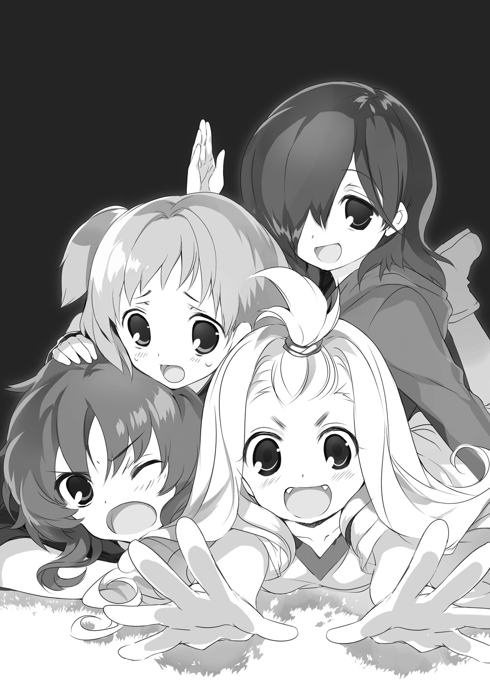
少女の一人が、おそるおそると手を挙げて、
「えーと、その前に、新しい管理者さんにご挨拶などを......」
こくこくと残りの少女たちが同意する。が、
「聞こえなかったのかしら？」
ゆっくりと首を傾げながら、ナイグラートは少女たちの顔を覗き込む。
「でも」
「あまり聞き分けがないと」
そして、ナイグラートは笑った。
大輪の花のような、華やかな笑顔だった。
「食べちゃうわよ？」
赤子を慈しむ母親のような、穏やかな声。
一瞬のうちに、少女たちは部屋から姿を消していた。躊躇する気配すらまったくない、実に見事な撤退っぷりだった。
「さて、行きましょうか」
くるりと振り返って、声を弾ませてヴィレムを呼ぶ。
「......ああ」
状況に圧され、椅子からずり落ちそうになりながら、ヴィレムは答えた。
食事の間中、ナイグラートは上機嫌でにこにこと笑い続けていた。
おかげで、どうにもこうにも、生きた心地がしなかった。
管理者滞在用の部屋には、ほとんど何もなかった。
部屋そのものは決して狭くはない。が、そこにあるのはベッドと、空っぽのクローゼット。壁に掛けられるタイプのランプ。それですべてだ。木板を打ち付けただけの床には何も敷かれていないし、窓を覆うカーテンのような気の利いたものも見当たらない。
その窓の外の景色は、まるで墨で塗りつぶしたように黒い。眺めているだけで吸い込まれそうな、あるいは押し潰されてしまいそうな、圧倒的な質量を持った黒。
「ほぉ」
なかなかいい部屋だな、とヴィレムは思った。
彼がこれまで住んでいたのは、緑鬼族労働者のための集合住宅である。
清潔さなどの問題にとりあえず目をつぶるにしても、彼と緑鬼族との体格の差は大きい。とてもではないが備え付けのベッドでなど寝られなかったので、毎晩、床に敷いた毛布にくるまって眠っていた。それに比べれば、大抵の部屋は天国である。
荷物を床に放り出して、ベッドに背中を預けてみた。やわらかいマットに、わずかに陽の匂いのするシーツ。うっすらとした疲労が体のあちこちから染みだしてきて、意識が薄れていく。
「......っと、その前に」
本当に眠りに落ちてしまう前に、背中を引きはがす。
まずは、この暑苦しい軍服を脱ごう。それから、さほど多くはないが私服をクローゼットに入れる。ほかの私物を置く場所はなさそうだが、そもそもそんなものはほとんど数がないから鞄の中に入れっぱなしで問題はない。
静かだ、と思った。
28番島の喧騒に慣れきった体に、その静寂が心地よく染み込んでくる。と──
『──どう思う？ もう寝てると思う？』
『わ、わかんないよ。男の人なんて、見るの初めてだし』
『少し声を抑えたほうがいい、対象に気づかれる』
──扉の向こう、小さな気配とささやき声が、その静寂に傷をつけた。さきほどナイグラートに追い払われた子供たちだろうか。タフというかめげないというか、実に元気のよいことだ。
足音を忍ばせて、扉に近づく。息を殺し、ドアノブに手をかけて、三つ数えてから、勢いよく開け放つ。少女たちが再び雪崩となり、部屋の中へと倒れ込んだ。
「な、なになに!?」
「ご、ごめんなさいごめんなさいっ！」
「やあ管理者。良い夜だね」
ヴィレムはその場にかがみこみ少女たちと目線を合わせると、自分の口元に指を当てた。少女たちは一度だけ目をぱちくりさせた後、ヴィレムの言わんとしたことを察したのだろう、同様に自分たちの唇に指を当てた。
ナイグラートに食べられちゃうぞ。その場の全員が、視線だけでそう囁き合う。
古今東西、子供に言うことを聞かせる時には、鬼の存在を引き合いに出して脅すものと決まっているのだ。
部屋の中に、少女たちを招き入れた。
椅子の数が足りないが、どうしたものか──などと暢気なことを考えているヒマもなかった。少女たちは、部屋に入ると同時に壁際にヴィレムを追い詰めて、
「ね、ね、どこから来たの!? 種族なに!?」
「ナイグラートとの関係は？ なんだか会話が意味深だったっぽいんだけど！」
「恋人とかいる!? 好みなのはどんなタイプ？」
「えと、すきな食べものはありますか？ それと、食べれないものとかは？」
「ちなみに今出てきた質問の中からだったら、最初にどれを答える？」
弩弓隊のように勢いよく、次々と質問を浴びせかけてきた。
ヴィレムは軽く手を上げてそれ以上の質問を制して、
「最初に答えるのはお前のその質問だな。恋人はいなくて好みは優しく頼れる年上。好きな食べ物は思いっきり辛みをつけた肉料理。食べられないものは特にない──はずだったが先日爬虫人の弁当を見せてもらった時にありゃあだめだと思った。ナイグラートとの関係は農家とはぐれ羊。今朝までは28番島にいた。種族はいろいろ混ざっているらしくて自分でもよくわからねぇな」
一人一人、質問者を指さしながらすべての質問に答えた。
おおー、と、少女たちの口から驚嘆が漏れた。気を良くして、不敵に笑って見せる。
養育院育ちで、小さい子供たちの相手をしているうちに身についた一芸だ。ちなみに同じように育ったはずの〝娘〟は、〝父〟のこの姿を見ても『気持ち悪い』と本気っぽくつぶやくだけだった。
──ああ。子供はいいなあ。
そんなことを、しみじみと考える。
同じ女性でも、子供は大人──特にどこぞの性悪喰人鬼と違って、思わせぶりな態度でこちらを惑わせてきたりはしない。見せてくる好意や悪意の裏側を疑わなくていい。ああ、なんてすばらしい生き物なのだろう。
「名前はヴィレムだ。しばらくの間、ここに世話になる」
「ここに住むの？」
「それが仕事だからな」
おおー、と、再び少女たちが感嘆の声をあげる。囁き合っている言葉の内容から察するに、誰かがここにやってきて留まるということが、これまでに例をみない珍事だったということらしい。
なるほど、ここは68番浮遊島であり、今日自分が体験した通り、他の島との行き来は簡単ではない。だから、いつもはいない誰かがいるというだけで、一種の娯楽のようなものにされてしまうわけか。
そんなことを考えていると、
「こーら。何してるの、きみたち」
開け放たれていた扉のほうから、軽く咎めるような声。少女たちが凍りつく。
ナイグラート──ではない。あの、空色の髪の少女が立っている。
「遠いところからここまで来て疲れてるはずだから邪魔しちゃダメって、ナイグラートに言われてたわよね？」
「え、えーと、それは、その......」と、橙色。
「好奇心は止められない」と、紫色。
「そう、それ！ いわばこれは、ふかこーりょくってやつで！」と、桜色。
口々にあがる言い訳の声を、
「言・わ・れ・て・た・わ・よ・ね？」
「はいぃぃっ！」
再び、少女たちは見事な逃げ足を発揮する。
じゃあねーびれむーまた明日ねー、という声が、廊下を遠ざかっていくのが聞こえた。
「ほんと、ひとの話を聞かないんだから」
困ったものね、と言わんばかりに鼻を小さく鳴らす。
そこでこちらの視線に気づいたか、顔を上げて、
「ごめんなさい、うちのちびたちが騒がしくて」
涼しい声で、そんなことを言った。
「構わねぇよ。子供の相手は慣れてるからな......いや、慣れていたから、か」
「そう言ってもらえるのはありがたいけど、あまり甘やかさないでね。あの子たち、放っておいたら際限なく調子に乗るんだから」
「はは、わかった。今後は気を付ける」
笑いかけると、なぜか少女は小さく息を吞んだ。
短い沈黙。
すぐに部屋を出ていくだろうと思っていたのに、少女は動かない。
「その......さっきのパニバルのことも、ごめんなさい。元気のいい子なんだけど、悪気があったわけじゃないの」思い出したようにそんなことを言って、
「怒っちゃいないさ。湯をもらったおかげで、風邪も引かずに済んだしな」
「そ、そう？ ええと、それから、その......」すぐにまた、黙りこむ。
どうにも歯切れが悪い。
「クトリ......よ」
「ん？」
「わたしの、名前。
なんというかこう、今さらといえば今さらだし『わたしのことは忘れて』とか言っちゃった手前すごく言いにくいし、もちろん別に覚えなくてもいいんだけど、こういうことになった以上はいちおう名乗っておかなきゃいけない気がしたから」
「......ああ」
そういえば、そうだ。自分たちはまだ、互いの名前も知らない。
「ヴィレムだ。よろしくな、クトリ」
クトリは一瞬、「う」と息を吞んで、
「それから、ええと、その......」
何か言葉を探してから、
「......何でもないわ。邪魔してごめんなさい、ゆっくり休んで」
部屋を出ていこうとする。
その背中を見た瞬間に、ふと思い出したことがあった。
予期しないナイグラートとの再会で混乱していたせいで忘れていたが、ここに到着してからずっと、頭の片隅でくすぶっていたひとつの疑問。
「少し待ってくれ。ひとつ、聞きたいことを思い出した」
「え？」
閉まりかけていた扉が、ゆっくりとまた開く。
「俺は、商会が持ってる兵器の管理者として、ここに来た」
「ええ」
こともなげに、少女は頷いた。
「そしてここは、その兵器を格納しておくための、倉庫だ」
「そうね」
再び、頷いた。
「──でも、何べん見回しても、ここは倉庫には見えねぇ。問題の兵器はどこにある？」
部屋を見渡す。
窓の外も見る。
どう見ても、ただの居住施設。大仰な倉庫らしいものはない。
あるいは、対〈十七種の獣〉の戦いに用いられているなどという話を聞いてなんとなく巨大な自律人形のようなものを想像していたけれど、それほど大きなものではないのだろうか。だとすれば、この宿舎めいた建物のどこか一室、もしかしたら掃除用具入れみたいな場所にまとめて突っ込んであるという可能性も、なくはないか。
いやしかし、それだとしても、もうひとつの謎は残る。
「それと......本人に聞くことじゃないかもしれないが、お前たちは何だ？
なぜ、軍の施設であるはずのここにいる？」
少女は数秒ほどの間、表情のない目でヴィレムを見ていたが、
「......そんなことも知らないでここに来たの？」
半眼になって、ぼそりとそう呟いた。
「しかも、知らないままであの子たちにつきあってあげてたの？
もしかして、その場の勢いだけで深く考えずに動いちゃうタイプの人なの？」
「ぬ」
自覚は、ないでもない。返す言葉がなかった。
「ま、いいわ。隠すことじゃないし、教えてあげる。
いまのきみの一つ目の質問の答えは、二つ目の質問。
二つ目の質問の答えは、一つ目の質問よ」
「ん？」
謎かけめいた答えだった。
「どういう意味だ、それは？」
「別に難しく考える必要はないわ。言葉の通りよ。
わたしたちが、きみの言うところの、問題の兵器よ」
──は。
その言葉の意味が耳から脳にまで届くのに、時間がかかった。
クトリは小さく手を振ると、
「──それじゃ、これからよろしく、わたしたちの管理者さん」
そんな言葉を残して、今度こそ、部屋の扉を閉めた。
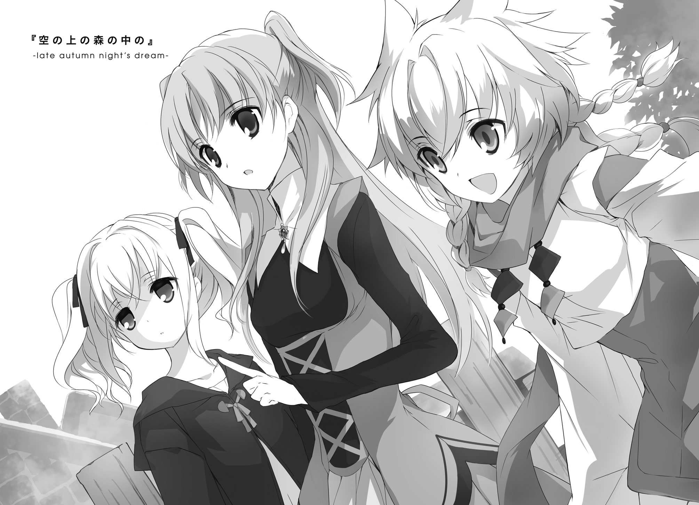
１． ハリボテの管理者
俺は何だろう、とヴィレムは考える。
遠い昔、養育院で暮らしていたことがある。
あの場所で、師匠と会った。師匠に育てられた。生きるために必要なことのすべてを、師匠から学んだ。
あれは、基本的に、ひどい大人だった。
養育院の管理者といったら普通、そこに集う子供たちの親代わりのようなものである。しかし師匠はその責務を完全にブン投げた。おかげで、子供たちに「おとーさん」と呼ばれる役目は、同じく子供であったはずのヴィレムがすべて引き受けることになってしまった。
酒癖も悪く、ことあるごとに赤ら顔で「昔は正規勇者だったんだぞ」とホラ話を始めるのも勘弁してほしかった。確かに彼は、他のどの大人と比べても体力があり、剣がうまく、妙に物知りだったが、『勇者ってガラじゃないよね』『したっぱ悪役顔だよね』というのが当時の養育院の子供たち全員の共通見解だった。
罪状はほかにもいろいろある。というか、数えはじめたらきりがない。街の娘に向かって下品な口笛を鳴らすとか、小さな子供たちに妙な本を読ませようとするとか、いくら言われても無精ひげを剃らないとか、そして。
──肝心なときに限って、いつも養育院を空けている、とか。
だから、幼心にヴィレムは決めていた。自分は絶対に、あんな大人にはならないと。
ともあれ、そんな師匠の言葉のひとつに、こんなものがあった。
「女は大事にしろ。男は、やつらから絶対に逃げられねぇ。
子供も大切にしろ。大人は、やつらに絶対に勝てねぇ。
女で子供なら覚悟をきめろ。俺たちは、何があろうと、やつらに絶対に敵わねぇ」
厄介な言葉を教えられたものだと思う。できることなら逆らいたいとも思う。
けれど困ったことに、師匠の他の言葉と同じように、この言葉もまたヴィレムの血肉となって今も生きている。
おかげで幼女趣味の嫌疑をかけられたこともあったが、──まあ、そのあたりのことは思い出さないことにしておきたい。
何もしなくていいというのは、想像以上に快適で、予想以上に苦痛だった。
思えばこれまでの一年半、ずっと時間に追われ続けて生きてきた気がする。なにせあそこでは徴無しでも請けられるような仕事は報酬の安いものばかりで、とにかく数を請けなければ話にならなかったのだ。早朝から深夜まで、時にはさらにその次の早朝まで、とにかく働けるだけ働いた。睡眠は昼夜関係なく、とにかく空いた時間を見つけてはこまぎれにとるしかなかった。
だから、柔らかなベッドの中で熟睡し、朝の光を浴びて目を覚ますというただそれだけのことが、喩えようもなく心地良い。
だが、同時に。起きている間ずっと何かのタスクに追われていた昨日までと違い、「とりあえずここにいればいい」というこの状況は、辛いものでもあった。心というものは、少しでも余裕を見つけるとすぐに思い出したくないものを思い出そうとする。考えたくないものを考え出そうとする。
この『倉庫』自体の居心地も、どちらかというと微妙だった。
ここには全員で、だいたい三十人ほどの子供がいる。その全員が女の子。
年齢はバラバラだが、大体七つくらいから十五くらいまで。
そして、全員が一人の例外もなく、透き通るような明るい色の髪を伸ばしていた。
現実みの薄い、まるで抽象画から出てきたかのような色彩だが、奇妙なくらいに不自然さは感じない。おそらくそれは、それらの色が染めたものでも抜いたものでもないからなのだろう。
また、どうやらどの子も大人や男性というものに慣れていないようで、ほとんどの子はヴィレムのことを警戒して、なかなか姿も見せてくれなかった。
これはまあ、仕方のないことだろう──ヴィレムはそう考える。初日に部屋に押しかけてきた何人かが特別だっただけで、小さな子供の普通の反応はそちらであるべきだ。自分たちだけの閉じた世界に、突如飛び込んできた大きな異物。心穏やかに受け入れられる者ばかりではないのは当たり前だ。
廊下を歩きながら、ふと気配を感じて振り返る。怯えたような小さな背中が全速力で逃げ去る。そんなことを何度も続けているうちに、部屋から出歩くということ自体に罪悪感を覚えるようになってしまった。
しかし言うまでもなく、部屋に閉じこもっていても、やることがない。
特にこれといった趣味のものを持ってきてはいないし、肉体の鍛錬も──今となってはやる意味がない。
窓際に腰かけ、ぼーっと外を眺めて時間を潰す。それは素敵なことのように思えたが、まさかこれから何か月もそれだけで過ごすわけにもいかない。
私服に着替え少し歩き、市街地のほうに出かけてみた。
ゆるやかな斜面に並ぶ、百あまりの石造りの建物。牧歌的というか何というか、当たり前だが、退廃的だった28番島とはだいぶ趣が違う。
道を歩いていて驚いたのは、ローブも着ていなければフードもかぶっていない自分──あからさまにそうとわかるはずの徴無しに対しても、道往く人々が特別な感情を何も見せないことだった。
昼食がてら手近な軽食屋に入って、そんな話を店主に振ってみた。
「そりゃァ、こんなとこじゃ、そんなこと言ってても仕方ねぇしなァ」
栗毛の犬の頭を持った獣人族の青年は、フライパンを振りながらの背中越しに、そんなふうに答えてきた。
「昔の悪い連中に似てる、なんてことでいちいち誰かを後ろ指さしてたらキリねェだろ。やりたいなら最初から、いま悪いコトしてる連中のほうを指しゃァいい。
まァ、悪い連中が多すぎて、嫌なモノも多すぎて、って場所に生きてる連中ならしょうがねェかもだな。きっと、本当に指さしたいものを数えるのが辛すぎるから、そういうのを越えたところにいる『歴史的に悪い奴』ってのだけを責めることにしてんだろ。街ぐるみで、伝統的にさ。
俺らみてェにノンビリ生きてる身からすりゃ、ご苦労様ってなもんだ」
なるほど、そういうものなのか。
「それに、あんたは他所の人だから知らねェのかもだけどよ、この近くには、いるんだよ。大昔の人間族なんぞとは比べモンにならねェ、おっそろしぃ徴無しがよ。
アレの笑顔を一度みたら、誰だって絶対、大昔のことなんて頭から吹き飛ぶぜ。いまを生きていられることを星神に感謝するのでいっぱいいっぱいだ」
......なるほど、そういうものなのか。
聞き流しながらテーブルでぼんやりと料理の出来るのを待っていると、
「あら？ きみ......」
知った顔が近づいてきた。よく晴れた青空の色の髪の少女。
「よぉ、クトリ。......と......」
その後ろに、年代の近い少女が二名。
あの倉庫に住む幼い子供たちの中では、比較的年上の三人だ。といっても、せいいっぱい背伸びして十代の中盤といったところだが。
「およ、今をときめくウワサの男前じゃあないっすか」
褪せた金色の髪の少女が、たったか駆け寄ってくると顔を寄せて、
「しかも何すか、クトリだけ名前呼んで挨拶とか、いつの間にそんな関係になってたっすか。追求してもいいっすか二人の関係」
「やめて」
「オーケーやめるっす」
クトリの冷たい声に応じて、ひょいと体を引いた。
「別にそんな、からかわれるような関係じゃないし。
その、なんていうか......たまたま他の子より早く会ったから、たまたま名乗る機会があっただけ。それだけなんだから」
「ふむ。あんたがそう言うなら、まあ、そういうことでいいっすけど」
「そういうことなの」
「りょーかい、そういうことで。
んじゃ、ヴィレム二位呪器技官、ついでにあたしらの名前も覚えといてもらえるとありがたいっす。こっちのやかましいのがアイセアで、あっちの」
振り返り、われ関せずの顔で隅のテーブルに座っている三人目の少女を示して、
「我が道を行ってる感じなのがネフレン。以後よろしくっすよ」
「......独創的な自己紹介だな、おい。こっちの名前は言わなくていいんだな？」
「まぁ、一通りは摑んであるっすから。
食べ物は辛い肉料理が好きで、好き嫌いはないけど爬虫族向けの弁当は無理だった、好みの異性は包容力のある感じの年上......なんっすよね？」
なるほど、情報の出所はあの子たちか。
「......ちょっと待ってアイセア。今の話、何。わたし、知らないんだけど」
「ふっふっふ、情報を制する者は浮遊島をも制するんす。ひごろの地道な諜報活動が、明日のおいしいごはんにつながるんすよー」
「ちょっと、こら、教えなさい！」
なにやら楽しそうにやり合いながら、二人はそのまま三人目──ネフレンのところへと移動していった。
なんともまあ、かしましいものだ。
「なんだ、あんた、倉庫のお嬢ちゃんたちと知り合いなのかよ」
犬の獣人族が近づいてきて、ランチセットのプレートをテーブルの上に置く。焼いたポテトにくず野菜、がっつり焼いた厚めのベーコンに小さなパン。最後に、カップに入ったスープ。
「ああ。先日からその倉庫に住み込みで働いていてな」
「へェ、あの倉庫に住み──込み──ねェ──」
栗毛に覆われた青年の顔から見る間に血の気が引いていくのが、なぜかわかる。
「ひいいいいッ!?」
すさまじい勢いで後ずさり。
壁に背中を張り付かせて、まだばたばたと手足があがく。
「ごごごめんなさい殺さないで食べないで俺には腹を空かせた五人の母と年老いた孫が」
......予想外の反応だった。
なのに、どういう誤解をされたのかについては、容易に想像できてしまった。
「俺は喰人鬼じゃねぇぞ」
「この店の借金だってまだ残ってっから肉が固くて絶対不味い──え？ いま何て？」
動きを止めて、丸い目をぱちくりとさせる。
「だから、俺は喰人鬼じゃねぇっての。徴無しの見分けがつかねぇってのはわかるけどよ、別にとって食いやしねぇから」
「い、いや......だってほら、あの『赤い胃袋』と同じ屋根の下になんて住むとか、同族でもなければ考えられねェっていうか」
「──まさか、こっちの市街地で、これまでに何人も食われてたりするのか？」
青年の怖れようを見ていて、考えたくない可能性が頭に浮かんだ。
そして、もしそれが真実だとしたら、大変なことになる。浮遊大陸群はそれぞれの島で多様な文化を育んでこそいるが、その全体でひとつの法を共有する、立派な連邦でもある。
そしてその法によれば、種族を問わず知的生物の一方的殺害は重罪となっている。
いくら喰人鬼であっても、あるいは喰人鬼であるからこそ、自由な食事は許されていない。
「いや、そういうわけじゃねェんだが、その」
青年は犬耳を伏せて、
「少し前まで、ここらには、ちィとガラの悪い豚頭族の組織の支部があってな。『ブラックファー』ってェ名前だったんだが、そいつが」
「あー、その話、もういいや。だいたいオチが読めた」
どうせそのなんとかいう組織が子供たちにちょっかいを出すなりなんなりして、ナイグラートが壊滅させに行って、その時に血まみれの姿で哄笑してるか何かしてるところを目撃されたとかそういうオチだろう。
驚くにはあたらない。容易に想像できる。あいつならやる。
しかしまあ、なんだかんだ言ってナイグラートは恩人の一人で、数少ない知己の一人で、いまは同じ職場にいる仲間だ。フォローはいれておこうと思う。
「ま、ナイグラートはそんな、見境なくあれこれ傷つけるような奴じゃないからな。
あの通りの言動だから誤解され......でもねぇか......まぁ怖がられちゃいるが、ふだんはああ見えて、普通に気の利く良い女だ。気が短いところとすぐ手が出るところと沸点が低いところとすぐ人を食いたがるところに目をつぶれば、何てことねぇよ」
だいたい、あいつが笑顔で言う「食べさせて？」は、九割方、ただの冗談だ。ブラックジョークだ。本当に食べる気で言っているわけではないはずなのだ。だから恐れる必要など、まったくないのだ。
残りの一割については、考えないことにしておきたい。
「すげェな、あんた」
なぜか尊敬の目で見られた。
「勇者と呼ばせてくれよ」
なんてことまで言われたので、「それは勘弁してくれ」と全力で頭を下げた。
最強兵士だか最強兵器だかが、実は女の子。
それ自体は、古今東西にありふれた、よくある話である。
まあ、当然のことだ。男の士気を上げるのに一番手っ取り早いのは女だと、太古の昔から決まりきっている。
男の見栄というやつは、案外侮れない。戦場という何もかもがしっちゃかめっちゃかになった場所で、生きるの死ぬのをさんざん繰り返して、勝利だの栄光だの尊厳だのを全部忘れてしまったような兵士でも、最後の最後まで「それ」だけは捨てないものなのだ。
女の前では、格好悪いところを見せたくない。
ただそれだけの一念が、死を待つだけの弱兵だったものに、最強の活力を与える。
優れた軍は、その効果をよく知っている。だから、野郎だらけの戦場にほどよく女性を交ぜる。
補給部隊や後方救護班でもいいが、前線により近いところであればなお効果的だろう。卓越した剣技で戦場を駆ける少女騎士だとか、聖剣に選ばれし無双なる少女勇者だとか、華奢な体に強大な秘術を刻み込まれた悲劇の少女呪蹟師だとか。
そんなものがどこかの戦場に「いる」という噂のひとつだけで、単純な野郎どもは簡単に奮い立つ。
どこの創作物語だよと言いたくなるくらい現実みのない設定も、そもそも現実らしさなんてものが消えて久しい戦場にあっては、ちょうどいい味つけにしかなりはしない。
ヴィレムは、そうやって英雄に祭り上げられてしまった少女を一人、知っている。
そいつは強かった。けれど、周りの男どもによって、実際の強さよりも強いことにされていた。
当人がその状況を楽しんでいたのが、せめてもの救いだっただろうか。戦場に出回っている速報を拾い上げては、いつの間にか増えている自分の武勲を他人事のように笑いとばしていた。
『別に難しく考える必要はないわ。言葉の通りよ。
わたしたちが、きみの言うところの、問題の兵器よ』
しかしどうやら、いまここでにこにこしている少女たちは、それとは毛色が違う。
士気高揚のための作られた英雄ならば、もちろん、もう少し有名でなければいけない。徴無しなどではなく、もう少し人気の出そうな種族でなければならない。
そして──まあ、いやらしい言い方をすれば、むさくるしい男たちの恋心を一身に受け止めるに見合ったお年頃であることも、必要だろう。ここにいる子供たちは、そういう役どころを引き受けるには、少々ばかり若すぎる。
だから、何かがおかしい。
自分の知っている少女兵器たちと、今回の少女たちの事情とでは、何かが嚙み合っていない気がする。
とはいえ、まあ──
ここにある兵器が何だろうと、少女たちの正体が何だろうと、自分が気にすることではない。そんなものは今回の仕事の範疇にない。
自分は、何の責任も持たない管理者なのだから。
ただ、期間中、迷惑をかけずにここにいればいいだけの立場なのだから。
......などと自分に言い聞かせること、おおよそ三日。
我ながら、頑張って耐えたほうだと思う。けれど、それが限界だった。
子供が怯えているということ、しかもその元凶が他ならない自分自身であるということ、この二つの合わせ技に、それ以上は耐えられなかった。
「え？ あ、はい、いいですけど......」
「あんがとよ、助かる」
その日の食事当番に頼み込んで、厨房の隅を借りた。
鶏卵、砂糖、ミルクにクリーム。ベリーが少量。ゼラチンを煮出すための鶏の骨。作業台に使えそうな材料をそろえた後で、頭の中の「小さな子供たちにウケのいい簡単デザートのレシピ」をめくって手順を再確認。作業開始。私物のエプロンをまとうと、晶石焜炉に火をつけた。
小さなスパイたちが、「いったい何が始まろうとしているんだ」と、物陰に鈴なりになって厨房の様子を窺っている。この宿舎のルールでは、その日の食事当番以外が厨房に踏み込むことは固く禁じられている。だからこうして、遠巻きに中を覗く以上のことはできない。
ちくちくと視線を首筋あたりに感じながら、ヴィレムは作業を続ける。
この数日に得た結論のひとつ。どうやら彼女たちの味覚は、ヴィレム自身のものと、そう大きな違いはないようなのだ。
むろん性別や年齢の違いによる嗜好の差はある。しかしそんなものは、大した問題ではない。種族の違い、ひいては生理的な違いによる味覚の断絶というものは、もっと激しくそして悲劇的なものなのだ。
以前一度、緑鬼族の友人（まあグリックなのだが）と一緒に食事をしに行ったことがある。あのときは、本当に酷い目に遭った。
ヴィレムが美味いと言ったものをグリックはことごとく地獄のような味だと言い、グリックが美味いと言ったものはヴィレムにとってことごとく悪夢のような味だった。
そこで色々と諦めていればよかったものの、グリックが「意地でも二人ともが美味く食えるものを見つけるぞ」と言い出して、地獄と悪夢のさらに先を行くような一日を過ごすことになったのだ。しまいには「うまいうまい」と涙を流しながら二人でただの水をガブ飲みすることになったのが、あの日のハイライト。
それはともかく。
同じ食堂で同じような食事を食べられている以上、自分と少女たちの味覚にそれほど極端な違いはないだろうと予想はできた。
作業の途中、食事当番をちょいちょいと招き寄せて、味見をしてもらった。道端で異生物でも見つけたような顔でスプーンにすくったカラメルをにらんでいたその娘は、やがて覚悟を決めたか、固く両目をつぶってスプーンを口にくわえた。そのままたっぷり数秒の沈黙。おそるおそる、ゆっくりと目を開く。「......おいひい」スプーンがぽろりと零れ落ちる。
スパイたちの間で、歓声とも悲鳴ともつかない、無音の叫びがいくつか上がる。
結果は、まあ、成功だった。
メニューの片隅に臨時でくわえられた「特別デザート」を注文した少女たちは、つい先ほども見たような決死の表情で一口目を口に運び、数秒ほど硬直し、次の瞬間には目をキラキラさせていた。
見る間に、食堂中が、まばゆいキラキラで満たされる。
「よっしゃ」
今度は自分が物陰に隠れてその様子を確認しながら、ヴィレムは小さくガッツポーズを決めた。やはり子供の胃袋は、砂糖でつかむに限る。
「......何やってるの、あなた」
その背後から、ナイグラートの呆れた声。
「あのレシピは師匠直伝だからな。くやしいが子供相手の威力は絶大だし、さんざん実証済みだ。昔は俺もあれで何度も堕とされたもんだ」
「いや、そういう話ではなくて。自分から業務外の仕事を増やしても、もらえるお金は増えないわよ？」
「そういう問題じゃねぇんだよ」
頰を搔く。
「あからさまに怖がらせたままっていうのは、何か違うじゃねぇか。
ここが兵器倉庫で、あいつらが兵器だっていうなら、その兵器に無用なストレスを与えてコンディションを悪化させるのは管理者としてやっちゃいけないことだろ。だからこれは、何ていうか、そう......」
うまい言葉が見つからない。自分の語っていることが理屈として成立しているかどうかにも自信が持てない。が、とりあえず言うべきことは言っておこう。
「別に、あいつらの機嫌をとってるわけじゃない。俺の存在がここにとってマイナスになってたのを、ゼロに戻そうとしてるだけだ。なら、『何の影響も与えないお飾り』の通常業務の範囲内だろ？」
「......そう言うなら、別に、そういうことでもいいけど」
ナイグラートは見事なまでの半眼だ。
「妙に早口だし。うしろめたさ全開の言い訳口調だし。自分を騙す気まんまんすぎて見ているほうが恥ずかしくなるくらいだし。それでも、本当に本気でそう言っているなら、私のほうから言うことは何もないけどー？」
一通り見抜かれていたらしい。
「悪かった追求しないでくれ頼むお願いします」
「あなた、会ったときにはもうちょっと、クールで退廃的で破滅的なキャラしてたと思うんだけど」
「それは、なんつぅか」
こう言うのもなんだが、自身でもそのつもりでいたのだ。
そういうキャラとして、あまり周囲と関わらないまま生きていようと決めていたのだ。
だから、実際のところ、今の自分はあまりよい傾向ではない。
「自分を見失っていた。以降、気をつける」
「うーん、それは別にいいんだけど。あの子たちが喜ぶならそれに越したことはないし、それに......」
「それに？」
「砂糖の匂いのするあなた、すごく美味しそうだし」
「以後、超気をつける」
今後厨房に立ったあとは、すぐに念入りにシャワーを浴びよう。そう心に決めた。
２． 倉庫の中の少女たち
さて、クトリ・ノタ・セニオリスは妖精だ。
発生から今年で十五年。成体妖精兵であり、現在の妖精倉庫における最年長の一人でもある。遺跡兵装の起動適合性が確認されており、ゆえに割り当てられた剣の銘であるセニオリスを名の尻につけている。
髪色は淡い蒼で、瞳はそれよりはちょっとだけ深い蒼。自分ではあまりこの色が好きではない。理由は二つ。典型的な妖精髪であり街中で目立つというのがひとつ。いまいち寒々しい色合いなので、明るい色の服があまり似合わないというのがもうひとつ。
「......何なのかしらね」
昼間の読書室。窓際の席から外を眺めつつ、そんなことを呟いた。
視線の先には、森の中のグラウンド。そして、その中でボールを楽しそうに追いかける、年少の妖精たちと長身の青年。
体格も種族も性別すらも違うというのに、いつの間にか、その場に自然に溶け込んでいる。
きっかけは、先日の食堂に出てきた特別デザートだろう。彼が手ずから作ったというあれで、単純な年少組は一気に彼に対する警戒を解いた。そして気が付いた時には、あの通り、完全に懐いてしまった。
「どういう人なの、ほんと」
初めて会った時には、なんというかこう......謎めいていて、優しくて、どことなく不思議な陰りのある人だと思った。徴無しのくせに獣人街になんて住んでいて、迷惑のかけどおしだった自分に最後まで優しくて。
次に会った時には、パニバル──年少組の一人に押し倒されていた。そういえば初対面の時にも彼は自分の尻の下にいた。まさかそういう趣味とかじゃないわよね、と一瞬考えてから慌てて振り払う。それはない。いくらなんでもない。
それから......そうだ、彼はずっと、子供たちに優しかった。
あの、やかましくてあつかましくてかまびすしくてめんどうくさくてうっとうしい年少組に部屋にまで押しかけられて、嫌な顔ひとつせずに話につきあって、その後に現れた自分に対しても同じように接してくれて、
......同じように？
自分自身の思考の中、引っかかる言葉を見つけて、思索を止める。
もしかして、彼の中では、自分たちは全員、同じように見えているのだろうか。
あの、発生から十年そこそこしか経っていないような未熟体のちびどもと、いちおうは十五年を生きて成体になっていてそれなりに大人っぽいと自分では思っているこのクトリ・ノタ・セニオリスが、同列扱いなのだろうか。
まさか、そんなはずはない。そう信じたい。
だいたい、彼──ヴィレム・クメシュ第二位呪器技官──と自分なら、それほど年が離れていないはずだ。いまいち摑みづらい雰囲気のせいで惑わされそうになるけれど、たぶん二十のちょっと手前といったところだろう。ならば年の差はせいぜい三か四。ほとんど誤差の範囲ではないか。子供扱いを受けるいわれはない。
あるいはもしかして、身長差のせいだろうか。だとしたら問題は深刻だ。これでもこのクトリ・ノタ・セニオリス、ここにいる妖精たちの中では背の高いほうだと自負している。が、にょっきり背の高いヴィレムの目から見れば、確かに自分たちは似たり寄ったりのちびすけだろう。ナイグラートというでっかい比較対象が近くにいることも大きい。
それから──
「──気になるっすか？」
「ひゃふっ!?」
いきなり背後から抱き着かれて、珍妙な悲鳴をあげてしまった。
「おー、いい反応」
「ちょ、ちょっと、驚かさないでよ！」
「にゃはは、ごめんごめん。さっきから全然動かないから、ついついー」
「どんな理由よ、もう」
首に回された腕を振りほどく。
振り返れば、アイセアがいつもの笑顔を湛えて立っている。
アイセア・マイゼ・ヴァルガリスも、やはり妖精だ。
発生から今年で十四年。成体妖精兵で、やはり遺跡兵装との適性は確認済み。ヴァルガリスの名を帯びているのは、それゆえのものだ。
くせの強い、よく実った稲穂のような色の髪。朽木のような色の瞳。やや吊り上がった猫のような目つきに、人懐っこい笑顔。
「人気者っすよねー、彼。なんかもう、何年もここにいるみたいな風格っすよ。
知ってるっすか？ 今あの子たちがやってるボール遊び、彼が教えたものらしいっすよ。大勢が遊べて、運動が苦手な子でもそこそこボールにさわれるからって」
「ふうん......そうなんだ」
「やっぱ、気になってるっすか、彼のこと？」
「そりゃあ」
気にならないはずがない。それは、この妖精宿舎に住む者だったら誰だって同じことだろう。異物である彼は、本当に、どこにいてもよく目立つ。
「新しい帽子」
がたがたっ。危うく、椅子から滑り落ちかける。
「大事にしてるっすよねー、あれ。クローゼットの奥にしまいこんで、全然使わないじゃないっすか」
「べ、別に他意はないわよ!? だってほら、ああいうのって島の外に出る時の変装にしか使い道がないじゃない、この島の中じゃ頭を隠す必要はぜんぜんないし！ っていうか何、どういう話題の切り替え方なのそれ!?」
「ほーん」
極上のにやにや顔をされた。
「何よその顔！」
「いやいや何でもないっすよー。ただまあ、やっぱりいい反応だなー、って」
「反応って何よ、驚かされれば誰だって文句くらい言うでしょう！」
「んーまあ、そういうんじゃないんすけどねー？」
思わせぶりなことを言って、アイセアはぽりぽりとあごの近くを搔く。
と、その頭の上で、丸めた紙筒が小さく跳ねる。
「読書室では静かに」
ネフレンが、これまたいつも通りの無表情のままで、立っている。
ネフレン・ルク・インサニアも、むろん妖精だ。
発生から十三年。今年の夏に成体となり、遺跡兵装との適性も確認されたばかり。
褪せた灰色の髪、木炭の色の瞳。ちびどもの中に紛れれば埋もれてしまうくらい背が低い。いつも判で捺したような無表情で、少なくともクトリは彼女の笑い顔も怒り顔も見たことがない。
ぐるっと見渡せば、読書室に他の妖精の姿はない。この部屋にいる全員が、この窓際に集まった形になる。
「ご、ごめんなさい......」
素直に頭を下げるクトリの隣、空いていた席にネフレンは腰を下ろすと、
「で、結局どういう人なの、彼」
そんなことをのたもうた。クトリの肩ががっくりと落ちる。
「きみいま、静かにしろって言ってなかった？」
「大声を出さなければいいと思う」
「おしゃべりそのものは継続なんすね......レンも彼に興味あるっすか？」
「別に、そういうわけじゃないけど」
ちらり、と窓の外に目をやって、
「不思議な感じの人だな、とは思ってる」
ああ、やっぱり、彼女の目にもそう映っているのか。
自分だけではないのだと知って、クトリは少しだけ嬉しくなった。
ただ優しいだけの人だったら、あるいはただ明るいだけの人だったら、こんなに気にはならなかっただろう。
あんなに親しげなのに、どこかに線を引いているのだ。
あんなに楽しそうなのに、どこか寂しげなのだ。
こんなに、この場所に馴染んでいるように見えるのに......
ふとした隙に、遠い目つきで、どこか遠い場所に思いを馳せているようなのだ。
だから、目を惹かれてしまう。気になってしまうのだ。
「......クトリ、あと何日残ってるっすか？」
ぼやかしたことを聞かれた。
まあ、そんな聞き方をされている時点で、何の話なのかはよくわかる。そして、毎日自室のカレンダーで数えているから、答えなければならない数字も覚えている。
「ん、十日ちょい」
「んあー、充分なような足りないような」
「何の話？」
「そりゃもちろん、クトリの春を成就させる話っすけどね」
ずごん。
机に頭を打った。
「クトリ。読書室では静かに」
「ご、ごめん......じゃなくて！ いきなり何言い出してるのよアイセア！」
「にゃははは、照れない照れない。思春期前に逝っちゃう妖精も多いこのご時世、恋心を持てるだけでも勝ち組っすよ？ 雌性体に生まれてよかったっすねえ、このぉ」
「べ、別にわたしは、そういうつもりで見てたわけじゃ」
「なるほど......参考になるかもしれないし、異類婚姻譚、何冊か探してくる」
「レン!? ちょっとまって、いらないからそういうの！」
「クトリ、読書室では静かに」
「大声出させてるのは誰よ!?」
窓の外、ボールが高く投げあげられて、蒼穹に大きな弧を描く。
「......ほんとにいらないの。だからやめて。
やっといろんなことの諦めがついたところだったのに、心残りなんて作りたくない」
静かな声で、クトリは言った。
「そっすか」
アイセアは寂しげに笑うと、それ以上は何も言わずに、窓の外を眺めた。
「......ん」
ネフレンは小さくうなずくと、やはり何も言わずに、手にしていた本を開いた。
さらに一週間が経った。
さすがに、何かがおかしいとは思い始めていた。
自分が請けた仕事は何だっただろう。お飾りの兵器管理者だ。軍事的なアレで、政治的アレだ。鋼と錆、火薬と煙の世界だ。まあ、お飾りと言われていた時点でそこまで戦場に近い職場にならないだろうとは思っていたが、ベクトルとしてはそっち寄りだろうなと、漫然と考えていたのだ。
それが、蓋をあけてみたらどうだろうか。
だだだだだだ、と廊下を走る元気の良い音。
「びれむぅー！」
しっかり助走のついた両足の跳び蹴りが、ヴィレムの背中に景気よく突き刺さった。
「おうふっ!?」
体格差やら体重差やらを吹き飛ばす、実に綺麗なフォームの一撃だった。思わずつんのめったところに、短い手足を器用に駆使した関節技が決まる。
「ようし、捕まえた！」
「ひゃああ、ちがうちがう、そうじゃないよ！ 捕まえてってのはそういう意味じゃないからぁ！」
「結果よければすべて良し」
「そうね、逃げられなければ問題ないものね」
「ぜんぜん結果よくないよ！ おねがいする立場なんだよ、わたしたち！」
「頼み事をする前に力を示すのは軍略の基本」
「それってもうちょっと殺伐とした関係のひとたちがやることだからぁ！」
「さつばつーさつばつー」
「楽しそうに繰り返すことばでもないからぁ！」
「......あー」
ぎりぎりと愉快な方向に肩関節をねじられながら、ヴィレムは状況を把握する。
いつもの、あの元気な小動物もとい子供たちだ。
「なんだお前ら、用事があったのか？」
「そうそう、そうなのよ」
「本よむから、きて！」
「だだだから、おねがいするときに関節きめちゃダメだよぅ」
まったくだ。お前の言葉を全面的に支持するから、もっと言ってやってくれ。
「......難しい本を読めって話か？ 悪いが俺も、読み書きは不得意だぞ」
「え？ たしか技官でしょ？ あたまいいんじゃないの？」
「ああ、超いいぞ。五百年ものの古文書とかならガンガン読んでやる」
「あはは、なにそれ」
笑いながら、裾をぐいぐいと引っ張られる。
「読むのは私たちが自分たちでやる。貴方には、ただ傍にいてほしい」
「そ、そうなんです、昔のお話なので、わたしたちだけで読むのはこわくて」
「私はべつに、怖くもなんともないけど、この子たちがどうしてもっていうから」
「ちょ、ちょっと、あなた一人だけずるくない!?」
いつものように、口々に勝手なことを言いながらも、息を合わせてヴィレムをどこぞへと連れて行こうとしている。
「昔の話？」
「人間の話！」
人間の話。
小さな眩暈。
強烈な既視感。記憶が勝手に回想を始める。
第68浮遊島の倉庫の景色が、ぐにゃりと歪んで、古びた養育院のそれに入れ替わる。
これは、自分がかつて暮らしていた場所の景色。
そして、そこで養われていた者たちの最年長として、年少者たちの面倒を見ていたころの思い出。
『びれむー！』
『なにおとーさん、また何かやったの？』
『はっはっは、元気な証拠だな！』
堰が切れた。これまで努めて思い出さないようにしていた懐かしい声が次々と、頭の内側で再生される。
大事なことを忘れていた。なぜ自分はずっと、あの薄汚れた第28浮遊島にいたのか。あそこは居心地が悪かった。住み辛かった。徴無しというわかりやすい疵を抱えた自分を、誰も受け入れてくれなかった。居場所を与えてくれなかった。
それが良かった。
だからあそこにいたのだ。
自分にはもう、居場所はない。どこかに帰りたいと願っても、決して叶うことはない。あの場所にいる限り、自分はそれをいつでも思い出せた。忘れずに済んだ。
なのに、ここは。
あまりにも、あの懐かしい場所に似すぎている、この場所は。
──違う。
自分に言い聞かせる。ここは自分の居場所じゃない。
自分が着ている服をよく見ろ。似合いもしない黒色の軍服。ハッタリのためだけに肩に張り付けられた、御大層な階級章。
数か月の任期の間しかここにはいない。
だから、大丈夫だ。自分はあの場所を忘れたわけでも、裏切ったわけでもない。
一瞬だけ、目を回していたらしい。
「ヴィレム？」
声をかけられて、
「──いや、大丈夫だ。今日はちょいと寝不足でな。
それで、人間がどうしたって？」
「あ、うん。むかし、そういうのが、地上にいたんだって！」
拙い言葉で、少女たちは必死に語る。
以前読んだ絵本に書いてあったことによれば、地上はとにかく、人間という怖い生き物であふれかえっていたのだという。
なんでもそいつらのせいで、当時の豚頭族たちは貧しい地域に閉じ込められ、古霊種は森を焼かれ、爬虫族種は水場を追われ、獣人族は平和を追われ、竜すら財を奪われていたのだという。さらにその果てには、裁きのために生誕した新たなる星神の天罰すら撥ねのけて、返す刀でばっさりその神を殺ってしまったのだとか。
最後には、どこかから〈十七種の獣〉を呼び寄せて、自滅してしまった。しかもその際、地上のすべてを巻き添えにしてしまったというのだからまたタチが悪い。
「ね、こわいでしょ？」
まあ、確かに、そういう言い方をされてしまうと、確かに怖い。どれだけ極悪非道の侵略者なんだよという話になる。
「──絵本なんだから、噓の話かもしれねぇぞ？」
「でも、ほんとにあったことだって、かいてあったし」
「作り話はみんなそう言うんだ」
少女たちは顔を見合わせる。
「それならば、物語に出る勇者の存在も、偽り事だったと？」紫髪がつぶやいて、
「えっ、そ、それ困ります」残りの全員が動揺する。
「まあ、一部は本当のことも混じっているかもしれないな。
......何で、勇者が噓だと、お前らが困るんだ？」
「なんでって......」
少女たちはまた全員で顔を見合わせて、
「わたしたちも勇者だから、かしら？」
はあ。
意味が分からない。人間を怖れていると言いながら、なぜ、その脅威の象徴とも呼べるものに自らならなければいけなくなるのか。
まあ、確かに。勇者は当時の人類にとって、一種の兵器のようなものだったかもしれない。そして今、この子たちも兵器だと言うのなら、ある種の親近感のようなものが生じてもおかしくはないか。
違和感については、そうやって吞みこんでおくことにした。
「ところで、その......ヴィレムさん」
おずおずと、尋ねられる。
「痛くないんですか、それ......」
先ほどからずっと関節を極められたままでいたことを、ようやく思い出した。
３． 妖精倉庫
クトリは、彼女のことをあまり好きではなかった。
たぶん、逆はそうでもなかったのだろうとは思う。
彼女はクトリのことを妹のようだと言っていたし、そう扱った。
もちろん、母親の胎に頼らず生まれる妖精に、姉やら妹やらなどというものは存在しない。同じ浮遊島の同じ森で発生しただとか、彼女のほうが発生が五年ほど早かっただとか、そんなどうでもいいことを根拠に勝手な親近感を抱かれるのは、はっきり言って迷惑だった。
どうやら彼女は遺跡兵装使いとして優秀であるらしい、ということもクトリの気に入らないポイントのひとつだった。大振りな剣をひっさげ戦場へと飛んで行く。颯爽と帰ってきてニカッと笑う。食堂にずかずかと入っていって、当時はメニューに並んでいたバターケーキをがつがつと食べて、『これ食べると、生きて帰ってきたって実感するんだよねぇ』などと至福の表情を浮かべる。
出撃ごとに繰り返されるそれが、当時まだ幼く戦場を知らなかった自分への当てつけのように思えていた。
『......ねえ』
あれは、いつのことだったか。
気まぐれを起こして、クトリのほうから彼女に話しかけたことがあった。
『あんた、いつもそのブローチつけてるけど、似合ってないわよね？』
『あはははは言いにくいことズバッと言うねえこの子は。お姉ちゃん泣いちゃうぞ』
『誰が姉よ誰が』
『えー、だってさすがにアタシのほうが妹ってのは無理あるし』
『関係を入れ替えろって言ってるわけじゃないの』
そんないつも通りの軽口の後、彼女はふっと笑顔を緩めて、
『昔、アタシにもお姉ちゃんっぽい人がいてねえ。その人から巻き上げたのさ』
『......巻き上げたんだ？ もらったんじゃないんだ？』
『その人の宝物だったからねえ。いつも大事に身につけてた。くれって何度言っても、まあ、聞いちゃくれなかったよ』
そんな大事なものを無理矢理巻き上げるとか、どういう鬼の所業だ。
呆れきった妹分の視線を、彼女はいつも通りに笑って流し、
『断られているうちに、なんかアタシも楽しくなっちゃってね。アタシが勝ったらよこせって、いろんな勝負を挑んだ。訓練教程の成績とか、大食い勝負とか、カードゲームとかね。でも全く勝てなかった。勝てなかったから、また挑んだ。すごく楽しかった』
この辺りまで聞けば、もう、クトリにも話のオチは読めていた。
クトリは、この自称姉のさらに姉なんていう妖精を知らない。知らないということは、自分がここに来たころには、そいつはもういなかったということだ。
聞いちゃいけないことだったかもしれない。そう思ってしまったことが、どうやら顔に出ていたらしい。彼女はクトリの背中をばんばん叩くと、
『ま、最後はアタシの不戦勝。しまらない話だよねえ。
その日だけ、なんでかあの人は、ブローチをつけずに戦場に行った。自室の机の上に置きっぱなしでね。そんなワケで、こいつはアタシのものになったってわけだ』
今の話のどこに楽しい要素があったというのか、あはははははと笑う。
『似合ってないとは自分でも思うんだけどさ、アタシもずっとつけてないといけないような気がしちゃってさ。外すに外せないんだ、これが』
もう一度言おう。クトリは、彼女のことをあまり好きではなかった。
けれど──後から思い返すに──そんなに嫌いでもなかったのだ。
だから。彼女が戦場から帰ってこなかったあの日、彼女の私室に向かった。
扉には鍵がかかっていなかった。ばんと開け放った部屋の中はぐちゃぐちゃで、脱ぎ散らかされた下着やら出しっぱなしのカードゲームやらが、とにかくあちこちに散らばっていた。
そんな部屋の中、机の上だけは、きれいなものだった。
チリひとつないぴかぴかの机の真ん中に、銀色のブローチがひとつ、寂しそうに置き去りにされていた。
ここ数日、何人かの妖精の姿を見ていない。
クトリと、アイセアと、ネフレン。少女だらけのこの妖精倉庫にあって、比較的年上の子たちが揃って、どこかに姿を消している。
何かの事情があるのだろう、程度に考えて、気にしないことにした。
それ以上は考えずに、ただ状況を受け入れようとした。
その日は朝のうちに雨が降っていて、地面がわずかにぬかるんでいた。
試合前半にずっと押し込まれていた赤チームが、ようやく攻撃権を取り戻した直後のことだった。チームの全員が士気を上げており、なんとかこのボールを白チームの大将に叩きこんでやると息巻いていた。
あとは、高くボールが打ち上げられた直後に、大きな風が吹いた。
風がボールを流した先に、深い茂みがあった。
最後までボールを追いかけていた少女は負けず嫌いであり、上を見ると足元への注意がおろそかになるタイプだった。ここまで条件がそろえば、結果はひとつしかない。少女は豪快に足を滑らせ、茂みの中へと頭から突っ込んだ。
「おい!?」
重傷を負っても不思議ではない、そんな事故だった。
「あいたたた......失敗、失敗」
だから、少女が軽い口調で笑いながら立ち上がった時には、一瞬だけ安堵した。
そして次の瞬間には、戦慄した。左足の腿に深い裂傷。右の二の腕を細めの枝が貫通。出血の量からして、動脈はやられてなさそうなのが不幸中の幸いか。少なくとも、失敗の一言で済ませられるような軽傷ではない。
ヴィレムはざっと傷の様子を確かめて、
「どっちもかなり深い。すぐに手当てするぞ」
「えー、大丈夫だよー」あっけらかんとした声。
──耳を、疑った。
「そんなことより、続きやろうよ続き！ あとちょっとで逆転！」
まさか、見た目ほど深い傷ではなかったのか。思わず傷口に目を落とす──が、何度確かめてみても、それは間違えようもなく、急いで治療をしなければ命に関わりかねないレベルの重傷だった。
「痛くない......のか？」
「痛いよ？ でもほら、いまいいところだし！」
本当に楽しそうな、満面の笑顔。
その額に、うっすらと、脂汗が浮かんでいる。
ようやく、ヴィレムは状況を理解した。本人の言うとおり、痛みを感じていないわけではない。この子は──そしてこの子の発言に何ら不自然なものを感じていないらしい周囲の子供たちも──単に、傷ついているということを大事として考えていないのだ。
ぞっとした。
得体の知れない、謎の生き物に囲まれているような錯覚。あるいは、それは錯覚でもなんでもなく、今まで気づけていなかっただけの──
「試合は中断だ」
ヴィレムは一方的に宣言し、少女を抱きかかえた。
えええー、という不本意そうな声があちこちから上がった。
「......それで、なんで怪我した本人じゃなくて、付き添いが落ち込んでるのかしら？」
いつもの服装の上に白衣を羽織ったナイグラートが、ぽつり、呟くように言う。
手当ては終わり、手足を包帯でぐるぐる巻きにされた少女は、現在ベッドの上でぶーすかぶーすかと試合中断に対する文句を垂れ流している。
椅子に座って頭を抱えていたヴィレムは、そのままの姿勢で、
「今日まで気づかなかった。あいつらは、自分の生命に、頓着していないんだな？」
おそらくは何かを知っているであろうナイグラートに、尋ねた。
「そうね。そういう傾向があることは確かよ」
「普通じゃない。あの連中は、そもそも、何なんだ？」
「ふうん」
どういう意図のものなのか、ナイグラートは軽く鼻を鳴らしてから、
「本当にそれ、知りたいの？」
尋ね返してきた。
ヴィレムは顔を上げる。
「肩書きだけとはいえ、あなたはここの管理役。情報開示を要求されたら、立場上、私は断れないわね」
面白がるような、それでいてどこまでも真剣なような、あいまいな声。
「正直を言えば、あまり教えたくはないわね。これを聞いたら、あなたは、あの子たちへの態度を変えてしまう。たぶん、これまで通りの関係では、もう、いられない。
ここ数日のあなたの好青年っぷりは、最初はちょっとキモいと思ったけど、なんだかんだでけっこう感謝してるの。
できればもう少しだけ、これまでのままでいてほしい」
「......教えてくれ」
「そ。仕方ないわね」
ナイグラートは肩をすくめると、
「あの子たちは厳密に言えば『生きていない』からよ。
生きてないから、あの子たちの体は、死を恐れない。心のほうはそうでもないけれど、あのくらい幼いうちは体の感覚に引きずられて、無頓着になりやすいの」
「......悪ぃ。何を言っているのか、さっぱりだ」
生きていない？ そりゃ、何の冗談なんだ。
連中は、あんなに毎日をしぶとく眩しくやかましく、暮らしているというのに。
「ま、そうよね。最初は私だって信じたくなかったわよ、こんな理屈」
ナイグラートは小さくつぶやくと、部屋を出て手招きする。
「ついてきて。いいもの見せてあげるから」
のろのろとヴィレムは立ち上がり、その後について部屋を出る。
「人間族、のことはもちろんよく知っているわよね？」
廊下を歩きながら、ナイグラートが尋ねてきた。
「......人並みにはな」
「無駄に謙虚なことを言うのね」
くすりと笑い、
「今から五百年以上の昔、地上をほぼ支配していた伝説の種族。
彼らは、決して能力に恵まれてはいなかった」
いわく。
巨人族のように圧倒的な体格を持ってはいなかった。
古霊族のように練り上げられた魔力を持ってはいなかった。
土竜族のように洗練された工作技術を持ってはいなかった。
豚頭族のように爆発的な繁殖力を持ってもいなかった。
そしてもちろん、竜のような圧倒的総合力を持ってもいなかった。
どの能力をとっても半端であり、総じて弱小な存在だった。それでも彼らは、他の種族のほぼすべてを敵に回しながらも、長い間、地上の覇者であったらしい。
「......ああ。そういう一族だったみたいだな」
「もうひとつ追加。味だけはほかのどの種族よりも圧倒的に美味しかった、と私の一族には伝えられているわ」
途絶えてしまえ、そんな伝承。
「その強さの要のひとつは、今の世に遺跡兵装の名で伝えられる一連の技術体系と、その結晶である兵器群」
「......聞いたことがある。前に、アナーラが言ってた。
確か、生きてる遺跡兵装の一本も見つかれば、一回のサルベージの収穫としては充分に黒字になる、とか......」
「そうね、そのくらいの額で、商会が買い取ってるわ。最低で二十万ブラダル、最高だとたしか八百万くらいにはなったかしら？」
八百万。
決して少なくはないヴィレムの借金の残りを、五十回返してなおあまりある額。
「そうやって──商会が集めた遺跡兵装は、」
ひとつの扉の前で、ナイグラートは立ち止まった。
大きな、そして堅牢な扉だった。
全体が重厚な金属製で、周囲には鋲が打たれていて、鍵は五重にかかるようになっていて、ノブに当たる部分は随分と重たそうな把っ手だった。
全体的に生活感にあふれているこの『倉庫』にあって、この扉だけがいっそ異様なほどに、ここが軍の施設であることを主張していた。
「この中に集められている」
ナイグラートは慣れた手つきで鍵を外すと、扉を押し開いた。
ごう──ん──
下腹に響く、低い音。
カビと埃の入り混じった、湿っぽい臭いが鼻を撫でる。
まるで墳墓だ、とヴィレムは思った。
何千年も昔の王族などが祀られていて、副葬品として財宝が詰め込まれていて、しかしそれにつられて盗掘しようとする愚か者が祟られたりするやつだ。この目で実物こそ見たことはないが、類型の笑い話ならばいくらでも聞いたことがある。まあ、今のあの地上にそんなものが残っているかは分からないが。
部屋の中に灯りはない。薄闇の向こう側、何かがあるということまでは分かるものの、それが何なのかまでは窺い知れない。
「随分と厳重だな」
何の気もなくそうつぶやくと、「危険物を集めた場所だもの」という返事が隣から返ってきた。
「造り方も直し方も扱い方すらも失伝してしまった、古代の超兵器群。
はるか昔、ろくな力を持たなかった非力な種族が、強大な竜やら星神やらの脅威に対抗するために造りあげたとかなんとか。
抗う意志、挑む力の象徴。
個人用の武器であるにもかかわらず、戦争の趨勢をひっくり返しかねないほどの影響力をもっていた。圧倒的な戦力差のある相手に対する切り札としては、この世界の長い歴史の中でもトップクラスに信頼できるシロモノ──」
少しずつ、薄闇に目が馴れてきた。
倉庫の中にあるものが、薄ぼんやりと見え始める。
「──ははっ」
ヴィレムは小さく笑う。
倉庫の壁の一面に、何十本もの剣らしきものが、立てかけられていた。
少なくとも、見た目の形状だけで言うなら、それらは剣だった。
一般的に儀礼用・対人戦闘用に使われる長剣よりは、明らかに大振りなものが多い。長さはまちまちだが、おおむね人の背丈と同じくらいか、それよりわずかに短い程度。柄も長く、明らかに両手で振るうように設計されている。
異様なのは、その刀身の構造だった。
適当な一本に近づいてよく観察すれば、その刀身の表面に、罅のようなものが走っているのが見える。さらによく見てみれば、その罅を挟んだ両側の刀身の色が微妙に違うことまで分かるだろう。
つまりそれは、罅ではない。繫ぎ目だ。
普通、剣というものは、ひとつなぎの金属塊から打ち出すなり削りだすなりして造り上げるものだ。しかし、これは違う。握りこぶし程度の大きさの鋼片を、何十個も集めて繫ぎ合わせて、ちょうど完成したジグソーパズルのように、剣の形を作っている。
「聖剣、か......」
「昔は、そう呼ばれていたらしいわね？」
ナイグラートは肩をすくめる。
部屋を改めて見渡せば、締め付けられるような痛みが胸を襲う。
いくつもの剣に、見覚えがあった。
量産型の聖剣であるパーシヴァルシリーズに関しては、言うまでもない。準勇者になりたてで専用剣を持っていなかったころ、幾度となく世話になった。独自の特筆能力こそ付与されていなかったものの、基本スペックの高さと拡張性、なによりマニュアル化された構成ゆえに戦地の真ん中ででも応急メンテナンスが可能だという仕様が、とても扱いやすかった。その発展型であるディンドランシリーズはヴィレムにはいまいち合わなかったが、安定性が増していたためか、他の準勇者たちには好評だった。
その奥に、ロクス・ソルス。名前は何といったか、南の紫竜との戦いの時に共闘した巨漢の準勇者の愛剣だった。筋力賦活の特筆能力が発現しているが治癒能力が損壊してしまっているため、振るった翌日はいつも筋肉痛で死にそうになる──そんな愚痴を聞いた覚えがある。
その隣は、ムルスムアウレア。眩都リスティルの攻防の時に援軍として来た準勇者が携えていた。特筆能力を表出させているところは見ていないが、限定的な不死を実現するとかなんとか、そんな話だった。
「......はは」
ひどい同窓会もあったものだ、と思った。
ぺたん、と。軍服の尻が汚れるのも構わず、その場に尻を落とす。
軽く魔力を熾して、両目に呪脈視の力を与える。頭の片隅が強く痛んだが、気にしてはいられない。
ああ、やはり。どの剣も、既に、ボロボロだ。呪力線が解けたり、千切れたり、乱れたり、とにかくどれもこれもろくなことになっていない。
こんな姿になってもまだ、お前たちは、戦い続けているのか？
「──ひとつ、聞きたい」
「何かしら？」
「聖剣は、人間族が人間族の為に造り上げた人造奇蹟だ。同族の、しかも勇者としての資格を持つ者にしか使えねぇ。今はもう、何の力もない骨董品でしかねぇはずだ。
ならばなぜ、集める。
どうやって、こいつらに戦わせているんだ」
「もう、気づいているんでしょう？」
『わたしたちも勇者だから、かしら？』
脳裏に蘇る声を無視して、
「教えてくれ」
「──詭弁と牽強付会は呪術の基礎よ。
人間族がいないなら、その代わりを用意すればいい。
あの子たちは、黄金妖精族。人間と同じ道具を使って、人間の仕事を代わりにやり遂げることのできる唯一の種族──
それが、あなたがさっき尋ねた、あの子たちが何なのかって問いへの答え」
「......そうか」
やっぱり、そうなのか。
腰を上げて、尻の埃をはたく。並んだ聖剣たちを見わたして、
「あいつらが、お前らの今の、相棒なのか」
寂しいような、誇らしいような、悲しいような。
微妙な気持ちで、呟く。
俺は何だろう、とヴィレムは考える。
いくつかの言葉が浮かぶ。
かつて正規勇者を志した者。
かつて準勇者として、聖剣と共にあった者。
そして、戦いの果てにその資格を失い、今を抜け殻のように生きる者。
正規勇者になるには、ふさわしい背景が必要だった。
説得力、と言い換えてもいい。
神の血をひいているだとか、過去の勇者の末裔だとか、予言の星が流れ落ちた夜に生まれただとか、故郷を竜に滅ぼされたとか、一子相伝の秘剣技を継いでいるだとか、強大な悪魔が身体の中に封じられているだとか。
本物の勇者って連中は、どいつもそういう背景を持っていた。『こいつなら人間離れした強さを持っていても納得できる』と誰もがうなずくような背景があるやつだけが、本当に人間離れした強さを手に入れられた。
だからヴィレムは、正規勇者になれなかった。
どんなに望んでも、その資格には届かなかった。
生みの親は凡庸な木綿商。育ちは養育院。そこそこに不幸でそこそこに幸福な半生。そんな半端な背景では、半端な力しか手に入れられないのは当然のこと。こればっかりはしょうがない。どうしようもない。
せめて、手軽に極められる秘剣技流派の道場でも近所にあればよかったのだが、世の中そこまで都合よくできてはいなかった。
『お前にゃ才能がねぇ』
あの時師匠は、そうはっきりと言い切った。
『勇者ってぇ救世システムは、根本的にエリート専用だ。
伝説クラスの英雄、半神半人の血筋に生まれついたような連中が、さらに格上の神だのなんだのの脅威を払う為に編み出したシステム。俺らの戦闘術のような、狭い範囲の勝利を目的にしているものとは次元が違う。世界そのものを一人で背負ってるような、ケタ外れの業や宿命があって初めて形になるシロモンなんだ』
首を振る、
『その奥義もまた然り、だ。まともな人間じゃ発動すらできないし、強引にやろうとしても反動に耐えられない......すぐに身体がブッ壊れて戦いどころじゃなくなるのがオチだ。
そしてヴィレム。悲しいことに、お前はある程度まともな人間だ』
短い沈黙。
ふうう、と大きく息を吐く。
『そんな顔すんな、俺だって好きでこんな死刑宣告みたいなことしてるんじゃねぇよ。
これは俺が言っておかなければならない事実で、お前が理解しておかないとならない現実。ただそれだけだ』
あの時自分は、この言葉を拒絶した。
諦めることを、拒み続けた。
今にして思えば、子供っぽい反発だったのかもしれない。しかし当時の自分は本気だった。本気で、最後まで、師に逆らうことを選んだ。
讃光教会の定める二十代目正規勇者のことを思い出す。
ため息が出るほど立派な経歴の持ち主だった。
初代正規勇者の血をひきつつ、なんとかいう騎士国の跡継ぎとして生まれた。九つの秋に昏古霊族の軍がその騎士国を襲撃した。大切なもの──両親を、友人を、故郷を、すべて灰になるまで焼き尽くされた。その際、焼け落ちる城から忠臣によって一人連れ出されたあいつは、遠く離れた辺境の村で隠遁していたかつての老将軍を頼り、失われていた秘剣技をいろいろと受け継ぐこととなった。
初めてこの経歴を聞いた時には、はあそうですか、という感想しか出てこなかった。
なるほど、こういういかにも選ばれてますってやつだけが正規勇者になるんだな、と、妙に冷めた気持ちになったものだった。
世界中でも五振りしかない極位古聖剣のひとつ『セニオリス』が──第十八代正規勇者の愛剣だったそれがそいつに継がれることが決まった時にも、祝う気持ちも妬む気持ちも湧いてこなかった。
すべてはほかの世界の話なのだと、自分と比べれば比べるほどみじめになるだけなのだと、考えることを切り捨てていた。
ずっとあとになってから、気づいたのだ。
あいつには、戦える理由があった。戦う理由もあった。戦わなければならない理由もあった。だから、あいつ自身も含めて、誰も気づいていなかった。当たり前のことだと思い込んで、想像もしていなかった。
あいつは。二十代目正規勇者は。
あらゆる悪鬼を薙ぎ倒す力を生まれ持ち、両親や故郷を奪われた悲しみを秘め、遠い過去に生まれた神秘の業を体に受け継ぎ、星神にすら届く輝く聖刃を携えた、あいつは。
一度たりとも、戦いたいなんて、願ったことはなかったのだ。
そうしなければいけないような流れだったから、復讐の戦いに身を投じる。周りがそれを期待していたから、竜や神に挑む。あいつは、自身の能力と周囲の要求に操られるだけの、意志無き人形だったのだ。
それに気づいた瞬間、ヴィレムは、そいつのことを大嫌いになった。
こいつのことだけは絶対に許せない、と思った。
そして、実のところ......今でもその気持ちは、少しだけ、引きずっている。
陽が、沈もうとしている。
薄く、雨が降りだした。
「傘、持って来りゃよかったな......」
と、口先だけでつぶやいたが、だからといって雨宿りをする気にも部屋に戻る気にもなれなかった。
第68浮遊島、港湾区画。
飛空艇の発着に必要な設備をそろえた、浮遊島の玄関とも呼べる場所。
その縁の部分に、降り注ぐ雨粒に身を打たせるままにしながら、立っている。
眼下に、綿を千切って浮かべたような雲がいくつも浮いているのが見える。そしてそのはるか下方に、かつては大地であったものが広がっているのも見える。木々の緑色も、河や海の蒼色も、砂や岩の黄色すら、存在しない。ただ、不気味に濁った灰色の砂が一面を覆い広がっているだけの眺め。
この光景が見たくて、ここにきた。自分が失ったものを、取り戻せないものを、確認したかった。
しかしその灰色すら、沈みゆく太陽に追われるように、夜の闇の中へと溶けて行こうとしている。
──納得できることは、いくつかあった。
たとえば。魔力の扱いについてだ。
魔力は、熱に似ている。
自らの心臓の内側に魔という火を呼び入れ、燃え上がらせて、その力を外部に取り出すことで力を行使する。しかしこの熱は術者の体に負担をかける。ある程度以上強い熱を得ようとしても、術者自身の生命力がそれを抑えつけてしまう。これがそのまま、それぞれの種族における、振るえる魔力の上限値を決定づけていた。
だから。もし身体が生存に固執していない歪な生命があれば、それは、他の種族には真似のできない、莫大な魔力を振るうことができるだろう。
おそらくは制御できないであろうその力は、すぐに暴走し、大爆発を起こす。その爆発は使い手と敵を吹き飛ばし、戦場には巨大な穴と、その中心に取り残された一振りの聖剣だけが残るという寸法だ。
「──確かに、兵器としては優秀だな──」
完全に使い捨ての、爆弾。
あまり燃費のいい使い方ではないかもしれない、しかし、そういう使い方ができるという選択肢そのものには、大きな意味と価値がある。
納得できることは、もうひとつ。
話を聞いて、「ああこいつらは強いだろうな」と思えてしまったこと、そのものだ。
戦いのために特化した種族。運命のすべてが勝利のためだけに消費される生命。
申し分のない説得力だ。それだけの業を背負っていれば、文句のつけようがない。
だから、彼女たちならば、正規勇者の後継にふさわしい。
自分ではなれなかったものに、彼女たちならば、なってくれるだろう。
すばらしい。めでたいことだ。彼女たちもそれを望んでいるだろう。ならば自分も喜ぶべきだろう。祝福するべきなのだろう。
ひゃっほう、すごいぜ！
あとのことは全部任せた、がんばれよ！
「──死にてぇ」
当然、分かっている。こんなもの、愚痴にもなってやしない。
どうしようもなく膨れ上がった醜い僻み根性を、自分の中で空転させているだけだ。
こんな場所に一人でいるから妙なことを考えるのだ。いっそ、当の少女たち──もとい妖精たちにこの気持ちをぶつけてしまったほうが、まだ潔いというものかもしれない。
けれどそんなこと、できるはずがない。覚悟を決めた勇者たちの戦いに、関係ない部外者が水をさすようなことは、あってはならない。
「──ん？」
頭上の雲海を裂くようにして、光が、視界に飛び込んできた。
飛空艇が、近づいてくる。
強烈な逆光となっているせいで、シルエットもよくは見えない。しかし、巡回飛空艇や渡しの艇などではないということくらいはわかった。
小型ではあるが、おそらくは、軍用の輸送艇。
重苦しい金属音。飛空艇が、港湾区画に接岸する。
衝撃吸収板が小さく悲鳴を上げる。後部から前部へと順番に、三対のアンカーアームを固定。二対の回転翼が動きを休める。轟くようだった呪燃炉の駆動音が、少しずつ音量を下げていく。
空気圧で、昇降口の扉が開く。
艇内から、二つの人影が姿を現す。
「お前ら──」
人影のうち二人は、知っている少女......妖精だった。
クトリと、アイセア。
二人とも、見慣れない服装だった。女性兵用の略式軍服。
様子がおかしい。険しい表情のアイセアが、ぐったりとなったクトリに肩を貸して歩いている。
「......やや。ヴィレム第二位呪器技官、こんばんはっす」
口調だけはいつも通りに、アイセアがこちらを見る。
「妙なとこで会うっすね、雨の散歩っすか？」
だいたい正解だ。向こうとしてみれば冗談というか、自分たちの状況をごまかすためにわざとズレたことを言ってみたつもりなのだろうが。
が、そんなこととは関係なく、今は素直にごまかされてやるわけにもいかない。
「お前ら、こりゃ一体」
「それはまあ、あたしらも似たようなもんっすよ。ちょっと島の外まで散歩なんぞ......ってことで納得してくれないっすか？」
「するわきゃねぇだろが。これは、つまり」
口ごもる。
ここから先を尋ねていいものか、迷う。けれど、
「今、戦ってきたってことか。〈十七種の獣〉と」
「なはは、ごぞんじでしたか。これはお恥ずかしい」
クトリは反応しない。そこまで酷く負傷したのか、と駆け寄ろうとすると、
「あー、こっちはいーです。技官にできることは何もないっすよ。
何かしてくれるって言うなら、あっちのほう、よろしくお願いするっす」
アイセアの目が、ちらりと後方を示す。
そこに、山があった。
山は、全身が乳白色の鱗に覆われていた。軍服を着ていた。のっそりと、窮屈そうに体を屈めながら、艇を降りようとしていた。
山の頂点近くにある目がぎょろりと開いて、ヴィレムをにらみつけた。
──いつぞやに一度見た、あの爬虫族。
「ソノ制服。貴様ガ、ヴィレムカ」
しゅるしゅると、蛇の威嚇音のような声。
爬虫族の喉のつくりはほかの種族と大きく異なる。そのため、同じ群島公用語を話していても、発音が独特なものになる。
「......あぁ。そういうあんたは？」
こちらの質問を無視して、
「運べ」
ひょい、と何か長細いものを二つ、軽々と放るようにして渡してくる。
その仕草があまりに自然だったので、深く考えず反射的に手を伸ばしてしまう。しかし爬虫族の体格に比べれば大したことのなかったそれは、人間の体格には大きすぎた。爬虫族の怪力にとっては大したことのなかったそれは、通常の人間の筋力には重すぎた。
受け取り損ねて、地面に落としてしまう。耳障りな金属音。
「......これは」
それは、白い布に厳重に包まれた、二振りの大剣だった。
「コノ二人ノ得物ダ、保管庫ニ戻シテオケ」
それだけ言い残し、爬虫族は飛空艇の中へと戻っていく。
「お、おい!?」
「貴様ニ語ルコトハ何モナイ。戦士ノ立ツ場所ニ、戦士デナイモノガ立チ入ルナ」
巌のような背を吞みこんで、扉が閉まる。
「あー。気にしないでくださいっす。アレはああいう人、つうかトカゲさんなんで」
アイセアの軽い声。
「気にしないついでに、その剣、運んでもらえると助かるっす。あたしはほら、この通り、クトリ一人抱えるのでけっこう手一杯なんで」
「......負傷したのか？」
「いんや、ちょっと気合いの入れすぎで、のぼせてるだけっす。
まあ、医務室に放り込んでおけば、そのうち目を覚ますっすよ」
「そうか」
足元に転がる剣を、一本、抱え上げる。
分厚い布越しにでも分かる、どこか懐かしい感触。乏しい光の中でも、見間違えるはずのない、その造形。
「セニオリス......か......？」
「およ。よくごぞんじで」
むろん、ごぞんじに決まっている。あの時代を生きた準勇者で、その銘を知らない者などいるものか。
右に振るえば竜を斬り、左に振るえば神を断つ。数ある聖剣の中でも最初期に組み上げられたうちのひとつ。赤銅竜殺し。神韻砕き。白鞘の秘刃。大小の異名を適当にまとめるだけで冊子のひとつも出来上がるのではないかという、歴史と実績を兼ね備えた聖剣の中の聖剣。
十八代目と二十代目の正規勇者の相棒にして、その英雄性の象徴。
「こいつは、お前が？」
「んや、そりゃクトリのっすよ。あたしが適合してるのは、もう一本のほうっす」
言われて、思い出したように二本目も拾い上げる。
「ヴァルガリス」
「ですよー。何です、いつの間にかずいぶん詳しくなったみたいですけど、うちの備品リストでも読んだんです？」
「そうじゃねぇ」
かぶりを振って、
「たまたま、俺のよく知ってる剣が多かっただけだ」
「はあ、そりゃどういう謙遜なのかよくわからないっすけど」
アイセアが首をかしげる。
「そっちの荷物もよこせ」
「は？ いや、ちょっと」
脱力したままのクトリをひょいと奪い取り、背負う。
背後。けたたましいほどの金属音をたてて、飛空艇が港湾区画を離れる。
「......意外と力持ちなんっすね」
荷のなくなったアイセアが、ぷらぷらと両手を振りながらつぶやく。
「お前らを支えるのが、今の俺の仕事だ」
「お。無駄にかっこいい台詞っすねぇ」
ヴィレムが先を歩き始める。半歩遅れて、アイセアがその隣に続く。
「それで。どこまで知ったんすか、あたしらのこと」
「......何も知らねぇよ。妖精だってこと、聖剣......じゃなくて遺跡兵装か、を使って浮遊島を守るため戦ってること。そんなもんだ」
「あー、けっこうクリティカルな感じっすねー」
ぼんやりした声。アイセアは空を仰ぐ。
「ヒかなかったんすか。使い捨ての命っすよ。忌まわしき人間の遺産とか使っちゃってるんすよ。自分で言っててなんですが、けっこうゲロゲロものの設定が揃ってると思うんすけど」
「設定とか言うな」
ああ、そうだな。まったくもって、その通りだ。
勇者に必要なのは、一言で言ってしまえば、まさにその設定というやつだ。悲しければ悲しいほどいい。惨めなら惨めなほどいい。業やら宿命やら運命やらといったしろものは、そういう設定の積み重ねによって強化されていく。そして、その資質は、人間の遺産を操る力にそのまま還元されていくのだ。
本人が望もうが、望むまいが、そういった事情にまったく関係なく。
「──昔、お前らとよく似た事情のやつが知り合いにいてな」
「お。昔語りっすか？ あたし口説かれてるっすか？」
「語りってほど長い話じゃねぇよ。
俺は、そいつにでかい借りがいくつもあった。だからお前らの話を聞いて、放っておけねぇと感じた。それだけだ」
「うわ、マジ短っ」
「だからそう言ったろうが」
確かに言ったっすけどぉー、などとつまらなそうに言いながら足元の石を蹴る。
「なんかこう、ここはあたしに心許して全部を話しちゃってラブとか築く流れじゃないっすか。せっかく人気のないとこに二人きりなんっすから」
「一人、俺の背中のやつを忘れてないか」
「クトリはほら、コトの途中で目を覚ましてすべてを見届ける役っすよ。そこから、嫉妬と愛憎のめくるめく三角関係が始まるっす」
「お前、最近の愛読書は何だ」
「『ほころびの三角形』っすね」
聞いたことがある題だった。架空の浮遊島を舞台にした創作物語だ。確か、真実の愛の追求の名のもとに、登場人物の過半数が浮気と不倫を繰り返していくとか、そういう話だったように思う。
なるほど、ほとんどずっと森の中に女の子（とナイグラート）だけで閉じこもっている生活の中でどうやって世間の常識を知っているのだろうと思ったら、そういう方法で外部の（多少ならず偏った）情報を仕入れていたのか。
「特に三巻。超名作っす」
「あとで没収だ。ありゃあ子供の読むもんじゃねぇ」
「横暴っすよ!? 誰が子供っすか!! てか、タイトル聞いて分かるんすか!?」
やや退廃的な趣のあった28番島には、方々の島からいろいろな娯楽が流入していた。そして、いろいろな日雇い仕事を転々としていたヴィレムの小耳には、そういった情報がちまちまと挟み込まれてきていた。そういう話である。
とりあえず、アイセアの抗議と質問はすべて受け流すこととして、
「大声出すな、こいつが起きる」
背中を軽くゆすると、「うー」、と小さくうなる声が聞こえた。
４． 勇猛なる者と後継者たち
俺は何だろう、とヴィレムは考える。
もうすでに勇者ではないし、ずいぶんと狭くなったこの世界を守るために戦う理由もないし、そのための力もない。
だから、ここにいるのは、ただのハリボテの兵器管理者。
何もせずにそこにいるだけで充分な、おかざりの責任者。
いつでも消えられる。誰にも傷を残さない。そんな、透明な亡霊。
──十分後、医務室。
「きみ、何でこんなところにいるの」
それが、意識を取り戻したクトリの第一声だった。
「病人の隣に人がいて悪いかよ」
「誰が病人よ、誰が」
赤い顔のまま、声だけは元気に唇をとがらせる。
「お前に決まってんだろうが。
知っているか？ お前達が倣っている過去の勇者連中だが、任務中に罹った特定の傷病についてはきちんと手当が出る仕組みになっていた。そのリストの一番上に書かれてたのが急性魔力中毒、今お前の罹ってるやつだ」
「......きみ、ときどき、よくわからない冗談言うわよね」
ぷい、とそっぽを向かれる。
冗談ではなかったのだが、まあ、これは信じてもらえなくても構わない。
「ほれ、こっち向け。額のタオルが替えられねぇだろ」
「いらない」
「そりゃ病人が決めることじゃねぇっての。ほれ」
「大丈夫よ、このくらい。いつものことだし、少し休めばすぐに治まるから」
「馬鹿を言うな」
額を軽くはたく。
「魔力中毒は、きちんと毎回抜いておかねぇと癖になるんだ。そんな適当なやり方を続けてたら、すぐ限界を超えんぞ」
「なーに、専門家みたいなこと言ってるのよ」
「専門家だ。呪器技官だからな」
「ふん」
クトリの目が、なに言ってんだこいつ、とばかりに再びそっぽを向く。
そもそも本来の呪器技官というのは、文字通り戦場を支える呪的器械一般の鍛造・調整を行う役職である。その二位ともなれば、上位武官に匹敵する権力と責任が発生する。そして当然、正攻法でその地位に就くためには、高度な教育と訓練と経験が一通り必要になる。
しかしもちろんヴィレムは、軍人としてそんな過去を積み上げてきていない。彼の名乗るそれはただの建て前でしかなく、実際の能力は伴っていない──これは、妖精たちの間でも周知の事実だった。
「俺は管理者なんだ。心配くらい、させろ」
「別に......心配なんて、管理者とか関係なしに、別にいらないし」
クトリはこっちを向かない。表情は見えない。
とりあえず、見えている耳は赤いので、熱は下がっていないのだろうけれど。
「だいたい。限界とか、もうどうでもいいの。どうせ、時間は残ってない」
「時間？ 何の話だ？」
問う声には答えず、
「ねえ。ひとつ、聞きたいんだけど」
質問を返してくる。
「なんだ」
「もし。もしもよ？
わたしがあと五日で死んじゃうとしたら、もうちょっと優しくしてくれる？」
......沈黙。
「は？」
真意をつかみかねて、思わずさらに尋ね返した。
「仮定の話でいいから、答えて。最後のお願いとか、聞いてくれたりする？」
「待て。どこから来たんだ、その五日って数字は。もう少し状況が分からないと、答えようがない」
「今日から五日後にね、15番浮遊島を、大きな〈六番目の獣〉が襲撃するの」
再び、沈黙。
「〈十七種の獣〉はすべて、空を飛べない。だから、やつらが地上を滅ぼした後も、浮遊大陸群はまだこうして浮いていられる。
けど、〈深く潜む六番目の獣〉だけは、自身は地上にいながらにして、浮遊大陸群を攻撃できる。
そいつの能力は『ちぎれて増えること』と『高速で育つこと』のふたつ。
本体は地上にいるままで、自分の体を何万個かに小さくちぎって、風に乗せて飛ばす。偶然どこかの浮遊島にまで流れつくのを待つ。到着したら、その場でぐんぐん成長して、だいたい六から八時間後くらいには島をまるごと取り込んで壊す」
沈黙。
「もちろん、浮遊大陸群にはその対策がある。〈獣〉ほど干渉力の大きな存在が浮遊島にたどり着くというときは、必ずその前に、戦術予知にひっかかる。
強力なかけらほど、早く予知が可能。
そしてもちろん、対策したり準備したりも可能。そうやって、この浮遊大陸群は、繰り返される〈六番目の獣〉の襲撃を退けてきたの。何百年もの間、ずっとね」
沈黙。
「半年くらい前に、特大のかけらの到着が予知された。
相手の規模も、かなり正確なレベルで判明している。現地に配備可能な通常戦力では、どうやったところで太刀打ちできない。
けれど、遺跡兵器を持った妖精ならば──」
「命と引き換えに倒すことができる、ってか？」
「──そういうこと。
わたしとセニオリスの組み合わせで自爆特攻して、ちょうどぴったり倒しきれるくらいの相手みたい」
運がよかったわ、と、クトリはベッドの中で肩をすくめる。
一人だけの犠牲で済むならば、それに越したことはない。少しでも戦力が足りていなかったら、二人目以降の妖精も失われなければいけなかったところだ。おそらくそれは、アイセアかネフレンのどちらかであっただろう──と。
「もちろん、仮の話、だけどね」
ゆっくりと、クトリの顔がこっちを向く。
いたずらっぽい笑顔。けれど、その瞳だけが、笑っていない。
「どう？ もしそういうことになったら、最後のお願いとか、聞いてくれたりする？」
「──内容によるな」
「それは、その、たとえば、そうね......」
もごもごと口ごもり、
「......キスさせろ、とか言ったらどうする？」
こいつもか。
ここは、戸惑ったり照れたりするのが筋なのかもしれないとは思った。しかしヴィレムはそんな気になれず、うめくような声で、
「残り五日の命を掲げておいて、言いたい我が儘がそれなのか？」
「わ、悪い？」
右手の親指と中指で、輪を作る。中指に力をためる。クトリの額に近づけて、
「あいたっ!?」
弾いた。
「子供がませたこと言ってんじゃねぇっての。恋愛小説ばかり読んでっからだ」
「そ、そんなことない、他にもいろいろ読んでるわよ!?」
恋愛小説を読んでいること自体は否定しないらしい。
熱のせいなのか、それとも素で慌てているせいなのか、言っていることが少しおかしくなっている。しかもどうやら、当人に自覚はない。
「だ、だいたい、思い出を残したくて、何がいけないのよ」
たぶん、無意識なのだろう。いつだったかに見た銀色のブローチを胸元に強く握りしめている。
「自分がいなくなるんだから、せめて、消えたくないじゃない。誰かに覚えててほしいじゃない。つながっててほしいじゃない」
目元に、じんわりと、涙が浮かんでいる。
「それのどこが悪いっていうのよ」
「んなこた言ってねぇよ。強いて悪いといったら、その短絡思考だ」
その額に、ヴィレムは手をあてた。熱い。
「誰でもいいからなんて自棄っぱちで自分を安売りするなって言ってんだ。そういうのを手近で済ませると、ろくなことになんねぇぞ」
「ろくでもなくてもいいから、安売りのうちに買い占めに来なさいよ！ 賢い買い物の基本は買い時を見逃さないことでしょ!?」
「主婦の買い出しじゃねぇんだよ、まったく。
あとな。泣きたくなったら、誰かがそばにいるうちに思いきり泣いとけ。一人で泣くのは、泣き止み時が自分でわかる上級者向けだ。初心者にはお勧めできねぇ」
「るさい。キスしないならだまれ。わたしは、泣いてない」
「涙声だぞ？」
「泣いてない」
強情に言い張る。
──俺は何だっただろう、とヴィレムは考える。
何度だって再確認しよう。守りたいものをすべて失った、勇者の抜け殻だ。
抜け殻は何も望まない。そうでなければならない。
「......ったく」
がりりと頭を搔いて、
「ちょっとうつ伏せになれ」
「聞こえない」
ぷい、とそっぽを向く。
「いいから言うこと聞けっての」
「聞こえない」
「ああもう、強情だな」
ぐい、とクトリの肩をつかんで、強引にこちらを向かせた。
ついでに顔を近づけて、唇を少女の額に軽く押し付ける。
「へ」
かちこん、とクトリの全身が固まった。
大きすぎる驚きに、脳が反射的にリミッターをかけた。クトリは、いま自分の額に何がおきたのかを認識できない。突然自分の全身が何かに驚いて動かなくなった、という結果だけしか受け取れない。
たったいま自分の額が感じ取ったはずの感触が、まったく脳まで届かない。
「これで話を聞く気になったな。さっさとうつ伏せになれ」
「え。ちょっと待って。なにいまの。よくわからなかった」
「早くしろ」
ごきり、とヴィレムは両手の指を鳴らす。
クトリの肩をつかんで、強引にひっくり返す。
「ひゃぅあっ!?」
「多少強引にだが、熱を抜く。念のため、口はふさいでおけ」
「く、口？ え？ どういうこと？」
クトリの背に手を当て、指先で筋と血の様子を探る。
魔力中毒者の特徴のひとつに、昂ったままの魔力を宿した体組織が機能を落とすというものがある。これによって例えば、何かの厄介な病に罹ったと勘違いした全身が高熱を発する、のような症状が発生するわけだ。
しかしこれは、逆に言えば、体の具合を適切に診ることができれば、魔力の澱みの位置を見切ることができるということでもある。
「ここと......ここか」
「ひぐっ!?」
強く、指先を押し込む。
それなりに長い事準勇者をやっていれば、自分あるいは仲間が魔力中毒に罹ることは珍しくなかった。そして、戦場に留まりながらなんとかその症状を和らげ少しでも戦えるようにしなければならないことも多かった。
長期的戦略において、戦力の摩耗を防ぐことの意味は非常に大きい。だからヴィレムは、忙しくしていた軍医を捕まえて、この対処法を無理矢理学んだ。
「痛い、そこ痛い！」
「魔力が筋肉を固めているからだ。ほぐれれば楽になる」
「そんなこと言われても、ひゃうっ、そこ、くすぐった......っ」
「暴れるな、大人しくしていろ」
「だから、そんなこと、言われ、ても......んっ、んぐっ、んぅぅっ......」
ポイントは、背骨をはさんで対称に位置する十か所。
そのすべてを、指先で順番に押しほぐしていく。
魔力の澱みを、健康な血流で押し流すイメージ。
身も蓋もなく喩えるならば、マッサージによって筋肉の凝りをほぐす感覚が近い。というか、幾つかの経穴を先に刺激しておくなどの下準備が必要になる以外、やることはほとんど同じだ。
「ふあぁぅ......」
小さな魔力の澱みを探しては、押し流す。
ポイントを変えて、同じことを繰り返す。
十分ほども、そうしていただろうか。
施術を終えて、ヴィレムは少女の体を解放する。魔力瘤は充分にほぐれた。あとは筋と血流が力を取り戻すのに合わせて、体が勝手に魔力を鎮静化させていくはずだ。
「よし、これでいい」
嵐のような刺激の時間に翻弄され、クトリは体力を使いきりぐったりと目を回している。その背に毛布をかけ、
「あとは安静にしてろ。一晩も寝れば、だいぶ回復するだろ」
「ひゃい......」
意識がはっきりしていないのか、返事の声も、ろれつが回っていない。これなら放っておいても、そのうち勝手に気を失ってくれるだろう。ひとまず、ここは問題ない。
息の荒いクトリを一人置いて、医務室を出た。
俺は何だろう、とヴィレムは考える。
面倒になって、すぐにやめる。今考えるべきは、別のことだ。
紙。紙。紙。
その部屋に入って、最初に目に入ったものは、それだった。
次に目に入ったものも、その次に入ったものも、それだった。
半歩退いて、部屋のプレートを確認する。青銅板に彫り込まれた文字は間違いなく『資料室』と読める。
再び、部屋の中に入る。決して狭くないはずの部屋は、とにかく大量の紙に埋め尽くされていた。しかもそのバリエーションがなかなか豊富だ。妖精倉庫トイレ修理の申請書と、対〈十七種の獣〉戦線における他種族部隊との連携についての指示書と、ニンジンとジャガイモを大袋でという注文書と、夜間哨戒任務の報告書と、女の子向け大衆誌の切り抜きが、ごちゃっとまとめて積まれている。
こち、こち、こち。壁の時計が時を刻む音が、やけに耳障りに響く。
「......ひでぇな、これは」
がさがさと分け入り、机と椅子を探す。とりあえず椅子の上に積まれていた分だけを横にどけて、どっかと腰を下ろして、部屋を見渡して、
「ひでぇな、これは」
もう一度、改めて呟く。
どこから手をつけたものか、腕を組んでしばらく考える。
考えても結論なんて出ないだろうという結論が出る。
手近な山に手を突っ込んで、下のほうの地層から一枚を引っ張り出してみた。十年近く前の装備点検結果報告書だった。
──なるほど、十年分の堆積物か、これは。
ちょっとした考古学者になった気分。
さて、このまま威圧されていても時間が無駄に過ぎるばかりだ。とりあえずは、ある物の仕分けから始めるとしよう──と、手近な塔に手を伸ばしたところで、気づいた。扉のそばで、誰かが部屋の中を覗いている。
灰色の髪の、妖精の少女。感情の読めない目で、じっとこちらを見つめていた。
何かこの部屋に用事でもあるのだろうかと思い、待ってみる。が、反応がない。まるでそういう形の彫像であるかのように、扉のそばに張り付いたまま、少女は微動だにせずこちらを見つめ続けている。
「何か用か、ネフレン？」
「別に」
淡々とした声で即答すると、ネフレンはくるりと踵を返し、姿を消した。
「──何だったんだ？」
首をかしげつつ、改めて部屋に向き直る。
知りたい知識がある。そしておそらくそれは、この広大な紙の海のどこかに沈んでいるのだ。
壁の時計が、十二回連続で鐘を鳴らした。
日付が変わった。
それだけの時間を使って、机の上に積まれていた紙束が片付いただけだった。
これはもう完全に徹夜作業確定だ。しかもどうやら、このまま朝まで頑張ったところで結果につながるかはかなり怪しい。
「......疲れた」
そういえば、食事のことを考えていなかった。
最後に食事をしたのは昼前だから、まるまる半日以上の時間を栄養補給なしで突っ走ってしまった計算になる。
気づいた瞬間に、腹が鳴る。
「まいったな......」
せめてもうちょっと早い時間に気が付けば、食堂で何か軽いものを頼めたかもしれない......などと今さら悔やんだところで腹はふくれない。
とりあえず、机に突っ伏す。
目を閉じる。
空腹についてはさておき、疲労を無視して突っ走ったところで集中力が欠けていくだけだ。ちょっとだけ休憩してから続きをやろう、と思う。そう、時計が次の鐘を鳴らすまでのほんのわずかな時間だけ、目を閉じていよう。
──鼻先をくすぐる、コーヒーの匂い。
ことり、と、机の上にカップの置かれる音。
差し入れだ、と思う。そういえば部屋の扉を開けたままだった。
「ああ、ありがとう──」
ナイグラート、と名前を呼ぶ寸前に、そこにいる者の姿が目に入った。淡い灰色のくせっ毛。ぼーっとした印象の、どこを見ているのかよくわからない炭色の瞳。
「──ネフレン？」
「レンでいい」
「あ、ああ。ありがとう、レン」
改めて机の上を見ると、コーヒーのすぐ隣に簡単なサンドウィッチが皿に盛られている。実にありがたい。
「別に。お礼を言われるようなことはしてない」
ぼんやりした目で部屋を見渡して、
「気になったから、覗きにきただけ。何してるの？」
「んー、まぁ。調べものと探しものだ」
「こんなところに？」
「こんなところに、だ。宝箱が隠れている場所は地下迷宮の奥深くと相場が決まってんだろ。価値あるもんを見つけるためなら、多少の苦労は覚悟しとかねぇとな」
「......ふぅん」
コーヒーを口に含む。
「甘いな」
舌触りがどろっとして感じられるほど、大量の砂糖が溶かし込まれていた。
「疲れてるかと思って。甘いの、嫌い？」
「いや、好物だ」
そのまま飲み干す。ネフレンの目が、少し驚いたように、小さく揺れる。
サンドウィッチをほおばる。少し乾いたパン生地と、炙った小鳩と、少ししなびたレタス。少々マスタードが効きすぎている感もあったが、疲れた体に活を入れるには、むしろそのくらいのほうがいい。
「ふう」
一息つく。
まったく現金なもので、このささやかな栄養補給で、体はすぐに力を取り戻した。
「それで？」
机に両手をついて、詰め寄るようなポーズと無表情のままで、ネフレンは尋ねてくる。
「こんな時間まで、何探してるの」
「あー......まあ、隠してもしょうがねぇか。お前らの出撃記録だよ」
「む？」
首をかしげる。
「なんで」
「俺は余所者で、ハリボテの技官で、ついでに時代遅れだ。
あまりにものを知らなすぎる。
ナイグラートに聞くって手もあるっちゃあるんだけどな。あいつは軍人じゃねぇから、参考にできる視点からの知識がもらえるとは限らねぇ。となると、自分の目で軍のデータを確認するのが一番だ」
「ハリボテの軍人の視点で？」
「そこはそれ、昔の経験ってやつで何とかな」
「......む？」
逆方向に首をかたむける。
「深く考えんな。人に歴史ありってやつだ」
「わかった」
素直にうなずいて、
「何か、してほしいことある？」
「頼めるか？ なら、〈六番目の獣〉の出現頻度がわかる書類と、過去十年分の出撃タイミングおよび彼我の投入戦力、最終的な損耗具合がわかる記録を探してくれ。それと、できれば聖......遺跡兵装の修復や調整を試みたときの記録もだ。何を狙って何をして、結果がどうなったのか、そこまで分かる書類だとベストだな」
「む、細かい」
「細かいチェックは俺がやる。お前はそれっぽいものを見つけて選り分けてくれれば充分だな」
「了解」
さあ、腹ごしらえは済んだから、作業再開だ。ヴィレムは袖をまくる。一呼吸遅れて、ネフレンもまた、同じような仕草で袖をまくる。
大海原のごとくあふれかえった紙の山に向けて、二人の航海士が漕ぎ出してゆく。
──夜が明けた。
二人の航海士は、紙の大海原の中で、見事に遭難していた。
朝が来た。
いつも通りの時刻に目を覚ましたクトリ・ノタ・セニオリスは、のっそりとベッドから降りて、ぐるりと辺りを見回してそこが自室ではないことに気づいて、どうやらここが医務室であるらしいということを把握して、なぜ自分はこんなところにいるのだろうと考えて、最後に昨夜に何があったのかを思い出そうとした。
思い出した。
ぼふんっ、と一瞬でその頭が茹で上がった。
「な、なななななな」
熱に浮かされていたのだ。弱気になっていたのだ。正常な判断力を失っていたのだ。あんなこと、いつもの精神状態なら言うはずもないし、やるはずもないのだ。
言い訳の言葉はいくらでも浮かぶ。けれどそんなものを並べたところで、起きてしまった出来事そのものが覆るわけではない。
『わたしがあと五日で死んじゃうとしたら、もうちょっと優しくしてくれる？』
「なな何言ってんだわたし────っ!?」
背中から、いま出てきたばかりのベッドにダイブした。
ごろごろじったんばったんと、暴れまわった。ベッドがぎしぎしと軋んだが、そんなことに構ってはいられなかった。
『......キスさせろ、とか言ったらどうする？』
「うひゃああぁあぁぁ────っ!?」
枕を抱えて、渾身の力を込めて締め上げた。拳を叩き込んだ。壁に投げつけた。
何で自分は、あんなことを言ってしまったのか。理由がさっぱりわからない。いやまあ確かに彼のことを嫌っているわけではないし、評価もしているし、どちらかというと好感を抱いている自覚はあるけれど、それはそれでこれはこれというか、人としての好意と異性としての好意はまったくの別物であって混ぜてはいけなくてあれではまるで前から自分が彼のことを想い続けていたのを熱のせいにして告白したような形になっているのでうーひゃーあーだめだこれ以上考えられない。
しかも、あれだ。途中から記憶があいまいになってはいるけれど、その後に何か大変なことになっていたような気がする。確か、熱を抜くとかなんとか言って──
「くとりーげんきかー！」
「はんびゃらっ!?」
突然に声が飛び込んできたので、大慌てで布団の中に顔を隠した。
「おお、げんきだ」
「あ、あの。昨日、とても疲れて帰ってきたって聞いたんですけど、大丈夫ですか？ ごはんとか、食べられますか？」
声と気配からして、来客は二名だけ。
「コロンと......ラキシュ......？」
おそるおそる布団から顔を出して、目で確認する。
間違いない。桜色と橙色、実に目立つ明るい色の髪がふたつだけ見えている。
「ん？ かお、あかいぞ」桜髪のコロンが、覗きこんでくる。
「そ、そう？ 気のせいじゃない？」
目をそらす。
「でも、体のほうは大丈夫そうですね。いつも先輩たちが戦いから戻ってきたときってすごく辛そうですから、今日は元気でよかったです」こちらは、橙髪のラキシュ。
「──あれ？」
そういえば、体が妙に軽い。
自分は昨夜確かに、魔力の熾し過ぎで気を失うところまで行っていた。経験上、そこまでやった日の翌朝は、重い倦怠感に悩まされるはずなのだが。
ベッドを下りて、とんとん、とその場で軽く飛び跳ねてみる。
倦怠感どころか、好調だ。まるで魔法でもかけられたかのような回復ぶり。
「ほんとだ、体が軽い」
「きあいと、こんじょう！」
たぶんそういう問題じゃない。
「気づいてなかったんですか？」
「ん、まあ......」
どういうことだろう、と思う。まさかあの──また頭が茹で上がりそうになったので具体的に思い出すのはやめる──奇妙なマッサージの成果なのだろうか。
「......そうだ。彼がどこにいるか、わかる？」
「彼、って」
ラキシュが少し口ごもってから、
「ヴィレムさんなら、さっき見たときは、資料室にいましたけど」
「資料室......って、あの紙束置き場？」
あんなところに何の用があるというのだろう。
文字通り、とにかく乱雑な紙束が放り込まれている場所だ。少なくとも、資料探しに向いた場所ではまったくない。そのぶん、誰も寄り付かないところではあるから、掃除当番をさぼった妖精たちがちょくちょく身を隠すのに使っているようだが。
「ねふれんと、いっしょにいた」
「......え？」
「コロン！」
ラキシュが咎めるような声をあげるが、コロンは構わずに、
「ソファで、いっしょにねてた」
言葉を続けた。続けてしまった。
「............へえ」
クトリは小首を傾げた。
「そうなんだ。ふうん」
「あ、あの、先輩？」
「ちょっと用事を思い出したから、ちょっと出てくるわ。心配してくれてありがとう、見てのとおりわたしは大丈夫だから安心して」
「あ、はい、それはわかりました、けど」
おそるおそる、ラキシュは上目づかいになって、
「......おてやわらかに、おねがいします、ね？」
「何のことかしら？」
にっこりと笑って、医務室を出る。
作業中に、ソファを発掘できたのが幸いだった。ヴィレムはそこにどっかと腰かけ、その膝の上に目を回したネフレンが頭を落としている。
「......ま、収穫はあったか」
協力者を起こさないよう、小声でつぶやく。その手の中には、何十枚かの紙切れ。望んでいたほどの量ではなかったし、そもそも予定外のものもだいぶ混じっているが、ヴィレムの求めていた情報の何割かはこれらの中から見つけ出すことができた。
その中の一枚。そもそも妖精とは何なのか、についての記述を流し読む。
それには、いろいろな姿がある。森に迷い込んだ者を惑わす、おぼろげな鬼火。光をまとった、羽根の生えた子供。あるいは、膝までほどの身長しかない小人。
いずれも神出鬼没で、悪戯好きで、不思議な魔法をいくつも使えて、森の中や彼らの王国に住んでいて......そして多くの場合、人間に興味をもって、何かにつけてちょっかいを出してくる。
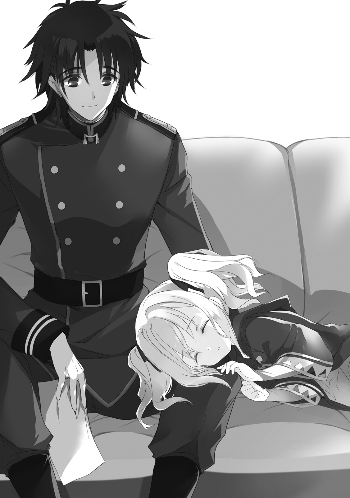
（ま......そうだよな。俺の知ってる妖精ってのも、そういう連中だ）
違和感は、あったのだ。髪の色以外はどう見ても人間の少女そのものであるこの子供たちが黄金妖精と呼ばれている理由を、気にはしていた。ただ、そんなことより優先して知るべきことが多すぎたから、後回しにしていた。
（五百年も経てばそんくらい変化するかもしれねぇ、くらいに考えてたが......）
ぼんやり考えながら、読み進める。
死霊術の基礎理論が綴られている。霊魂の実在を前提とした、当然ながら実にオカルトチックな理屈の羅列。いわく、魂というものは初期状態では純白の存在であり、生まれてから過ごした時間によってこの世界の色に染まるものである。つまり、魂が生命の一部として完成するのは、肉体の完成よりも遅い。赤子や子供は、たとえしっかりと肉体を持っていたとしても、魂の在り方としては大人のそれと異なっているのだと。
ゆえに。この世界に染まり切る前に肉体を失ってしまった魂は、「生まれ終わる前に死ぬ」という矛盾を抱えてしまう。本来であればこの世界のルールに従って死後の世界（そんなものがあるのならだが）に向かうはずだった魂は、逝き場所を見失って、その場所をさまようことになる。
それが、妖精と呼ばれる存在だ。
自身の死を認識できないほどの幼さで死んでしまった、迷える魂。
ゆえに、それらの行動は赤子や子供のそれに準拠する。好奇心の赴くままに、善悪も知らず、時に無邪気に時に残酷に、悪戯を繰り返しては人に近づいてくる。
「それでも決して、それらはこの世界に居場所を持ちえない......か......」
ちらり、と自分の膝の上の少女を見下ろす。
再び、書類に目を戻す。
そこから先の記述は、実に気分の悪くなるものだった。つまり、人為的に妖精を発生させて使役するための具体的な方法についてだ。生贄がどうのと書かれていたあたりで、ヴィレムはその先を読むのをやめた。死霊術を使えるようになりたいわけではない。
書類の二枚目。五年ほど前の、ヴィレムの知らない妖精の出撃記録。携行していった聖剣はインサニア。〈六番目の獣〉の三体を相手にあわや魔力暴走の寸前というところまで苦戦し、なんとか生還したという。ぺらぺらとページを読み進める。似たような報告がいくつも続いている。たまに「妖精郷の門を開く」という記述がされているところは、おそらく意図的な魔力暴走による自爆のことだろう。
妖精は、そしてその一種である彼女たち黄金妖精は、厳密な意味では生命ではない。死霊の一種だ。ゆえに軍に属しても軍人とは数えられない。戦いの中で斃れ伏したとしても、戦死者に数えられることもない。
「だから、兵士ではなく兵器扱い......か」
ぽつりつぶやいて、膝の上の灰色の髪を軽く撫でた。「んう」と小さなうめき声。起こしてしまったかと一瞬思ったが、すぐに静かな寝息が聞こえてきた。
俺は何だろう、とヴィレムは考える。
きっとその問いに対して見つかる答えは、どれもごまかしだ。
今ここで、決めなければいけない。今ここにいる自分が何なのか。
この時代に居場所のない、ただの抜け殻なのか。夢破れてすべてを失った、時代遅れの準勇者なのか。てきとうに日々を過ごしていれば金のもらえる、ハリボテの二位技官なのか。それとも。
──窓から滑り込む、一筋の光。
相変わらず空は雨雲に覆われている。
その切れ目から、朝日が差し込んでいた。
その光の眩しさに、ヴィレムは思わず目を細めていた。
光の向こう側に、懐かしい誰かの姿を見たような気がした。
「......借金とか早く返して、俺もさっさとそっちに行きたかったんだけどな」
苦笑いしながら、そんなことを呟いた。
『うるせー、いいからさっさと、やれることをやってこい』
光の向こうの誰かが、そんな返事をしてきた......気がした。
ああ、畜生。あんにゃろう。ふざけんな。
俺がどんな思いで、これまでの一年半を過ごしてきたと思っていやがるんだ。
がりり、と頭を搔く。
「......ヴィレム？」
膝の上から、名前を呼ばれた。
「おう、起きたか。ありがとな、おかげで色々と見つけられた」
「別に。......お礼を言われるようなことは何もしてない」
ソファの上で、器用に小さく寝返りをうつ。
「放っといたらひからびそうに見えたから、ちょっと手を出しただけ」
「それでも、ありがとうな」
わしっ、と小さな頭をつかむと、灰色の髪を乱暴に撫でる。
「んう」
うっとうしそうに顔をしかめはしたが、ネフレンはその手を撥ねのけはしなかった。
「よし、ついでにそろそろ起きろ。客が来てる」
半分開いた扉の陰から、「んなっ」という驚きの声。
小さく扉がきしむ音。なぜだか機嫌の悪そうな、半眼のクトリが姿を現す。
「......ええと、おはよう」
「おはよう。体の調子はどうだ？」
「え？ あ、えと、うん。それはすごくいい、かも」
「そいつはよかった。よく考えたら子供相手にアレを試したことはなかったからな、効きすぎてたりしたらまずいと少し心配していたんだが」
「こどっ......」
なにやらのけぞってダメージを受けている。
「それと、そうだな......ちょうどいいから、いま確かめるか。
ほら、レン、頭どけろ。もう朝だ」
「んあ」
ネフレンの頭をソファの上にぽてんと落とし、ヴィレムは立ち上がる。
「で、クトリ。病み上がり早々で悪いが、ちょいと朝の運動に付き合え」
「......え？」
きょとんとした顔で、目をぱちくりとさせる。
気まぐれな空は、いつの間にか青く晴れわたっていた。
「......え？」
クトリは、グラウンドの真ん中に立っていた。
少し離れたところに、動きやすそうな私服姿で軽く準備運動をしているヴィレム。
そしていま、クトリの目の前で、長細い布の包み──間違いなく中身は遺跡兵装だろう──を差し出してくるネフレン。
包みとネフレンの目を交互に確認してから、受け取る。
よく知っている感触。重み。布を取り払えば、その下には、自分のよく知る白銀の刀身。現状の浮遊大陸群において最強の魔力共振効率を持つ遺跡兵装、セニオリス。
何で、今、こんなものを、手渡されるのか。
「クトリ、お前、ここのちびたちは好きか？」
「え？」
「死ぬ覚悟を決めてるってのは、あいつらの未来を守るためなのか？」
「そ......そんなの、どうでもいいでしょう」
おおまかなところでは、ヴィレムの問いは合っている。けれど素直に認める気にはなれない。今の覚悟に至るまでに自分が抱え込んできた感情の渦は一言で語れるほど単純なものではなかったし、あの後輩たちを自分の死の言い訳に遣うことを認めたくもなかった。
「そうか。まあ、そうだな」
ヴィレムもまた、自身が手にした遺跡兵装の布を取り払う。
下から現れたのは、確か......量産型の遺跡兵装。これまでに同じ規格のものが複数発掘されており、その性能も他よりワンランク落ちるとされている。
「うわさの腕をみてやる。かかってこい」
「は......はぁ!?」
耳を疑った。遺跡兵装を手にした自分たちは、この浮遊大陸群における最高の防衛戦力のひとつだ。つまり、とても強い。火薬兵器で完全武装した爬虫種にすら力負けしないのだ。
なのに、なぜ。
「わかってるの？ 自分も遺跡兵装を持ってるから互角とか思ったら大間違い。それは黄金妖精にしか起動できないんだから」
「さて、どうかな。やってみたら意外な結果になるかもしれねぇぞ」
「冗談じゃないわ。ミンチになりたいの？」
「それは嫌だな、ナイグラートは喜ぶだろうが」
それはまあ、確かに。
「だが、俺相手にその心配は五百年早い。いいからさっさとかかってこい」
「......そう。そこまで言うなら」
クトリの頭の中で、何かが冷えた。
そういえば、ヴィレムがわけのわからないことを言うのは、今日に始まったことではなかった。それに、自分は彼とネフレンに問い詰めなければいけないことがあったのだ。ここはひとつ、一度、自分の凄さを見せつけてから話を始めるというのも悪くない。
こっそりと、魔力を熾す。
適合者が戦闘態勢に入ったことを察したセニオリスが、ぎしりと軋む。刀身の一面に走っていた無数の罅がわずかに広がり、裂け目となる。そこから、魔力の顕れである淡い光がこぼれだす。
遺跡兵装がどのような構造で造られ、どのような理屈で動いているのかは、今の技術では解明できていない。分かっているのは、注がれた魔力の圧に応じてその力が変化すること。そして、黄金妖精の全力を注がれれば〈六番目の獣〉でも耐え切れないということだけ。そして、それで充分だった。
「自分で言いだしたことなんだから、後悔しないで──」
その後に「よね」と続くはずの自分の言葉を遮って。
クトリは地を蹴った。
魔力で増幅された集中力が、視界をまるごと書き換える。辺りの景色から色彩が消える。ぬるま湯の中を泳ぐような、もどかしい感覚。普通に歩けば二十歩ほどの距離があっただろうか、しかし今のこの状態の自分であれば二歩でお釣りが出る。踏み込みの鋭さでグラウンドに浅い穴が開いてしまうだろうが、構うものか。
完全な不意打ちだ。ヴィレムはまだ、構えてもいない。だらりと投げ出されたような右腕の先、量産型遺跡兵装に狙いを定める。あれを弾き飛ばせば勝負は決まる。怪我をさせる前にすべてを終わらせてしまおう。
間合いが詰まる。ヴィレムの右腕が、セニオリスの射程に入る。この速度で動く黄金妖精には誰もついてはこられない。ましてヴィレムが、この間合い、この体勢から、回避も反撃もできるはずがない。
──斬られた。
（......え？）
左の脇下から、刃が食い込んだ。そのまま斜め上、右肩のほうへと進んでゆく。肋骨の幾つかを断ち切って。肺を搔き破って。銀色の切っ先が心臓に食い込み、そのまま苦も無く食い破る。
時間を引き延ばすまでに高められた集中力が、正確に傷の状況を教えてくれている。
赤い血潮がゆっくりと吹き出して、青空を背景に鮮やかな弧を描く。
ぞっとするほどの喪失感と、同時に心を埋め尽くす、死の実感。
（なん、で）
（うそ、でしょ）
（どうし、て）
とぎれとぎれの言葉が幾つか、頭に浮かんでは消えていく。死の覚悟は決めていた、けれどこんな場所でなんて想定していない。不意打ちで襲い掛かってくる虚無は、甘く冷たく、そしてどうしようもなく恐ろしかった。
驚愕に見開いた瞳の先、青空だけがどこまでも深く蒼く、
背中からグラウンドに落ちた。
「ふぎゃっ!?」
潰れた猫のような悲鳴が肺から押し出された。
「............え？」
両手両足を豪快に広げ、仰向けに倒れている。
そのまま何秒か、我を忘れて呆けていた。おそらくは残り何秒かしかないはずの死への猶予を、ただ茫然として過ごしていた。
やがて、気づく。何かがおかしい。
おそるおそる腕を動かして、自分の脇腹をぺたぺたと触ってみた。傷はない。血も出ていない。痛みもない。たったいま自分を襲ったはずの暴虐の証拠が、何ひとつとしてこの体には残っていない。
「どういう......こと......？」
ゆっくりと、上半身を起こす。
何時の間に手放していたのだろう、セニオリスは、少し離れたところに転がっていた。
「お前らは、聖剣の機能の根本的なところを勘違いしている」
ヴィレムの声に、慌てて振り返る。
黒髪の青年は緊張感のまるでないだらけた立ち姿のまま、
「そいつは、お前らが思っているような、『使用者の魔力の圧に応じて威力の変わる便利な呪術武器』なんかじゃねぇ。
圧倒的弱者だった人間種が、圧倒的強者である古霊種や竜を斃すために鍛えた武器が、まさか、弱者の力を多少底上げする程度のものであるはずがねぇだろが。圧倒的っていうのは、そういう小細工では埋めきれないから圧倒的なんだ」
なにやら滔々と語っている。その姿を見て、かちんと来た。
どうしてだろう、と自分でも不思議に思えるくらいに、腹が立った。
この人の話を最後まで聞いてはいけない、と直観した。
集中する。視界がまた書き換わる。
身を投げ出すようにしてセニオリスをつかみ取ると、そのまま姿勢を低く抑えてヴィレムへと突撃する。
先ほど受けた一撃は見えなかったが、どういうものであるかの想像はできた。おそらくは、クトリの踏み込む勢いをそのまま利用した返し技だ。遺跡兵装を起動していること、魔力で五感や判断力を加速していること、それらの有利がクトリの思考から「ヴィレムに反応される」という可能性を完全にそぎ落としていた。その油断が生み出した死角を、正確に衝かれた。単調になっていた突撃の力を、そのまま利用された。さきほど幻視した死も、ただの妄想などではない。ヴィレムが少しでもその気になっていれば訪れていたはずの、すぐ目の前まで迫っていたはずの未来そのものだ。
認めよう。このひとは、何だかよくわからないけれど、とんでもない達人だ。
（──だからって！）
認めるわけにはいかないこともある。遺跡兵装を使った妖精の戦い方を、それに縋って続けられてきたこれまでの戦いを、否定させるわけにはいかない。
今のクトリの体は常よりよく動く。おそらくはヴィレムのおかげであろうという一点は悔しかったが、ありがたくもある。十歩分ほどあった距離を、魔力を込めて踏み出した二歩で潰す。互いの刃の間合いよりわずかに離れた位置で急停止、おそらくは読み切られていたであろうタイミングをわずかにずらしたうえで跳躍した。身をひねる。右手のセニオリスで肩口を狙う。と同時に、死角から左の蹴りを脇腹に叩きこむ。本命は後者。筋力や体格の差は、熾した魔力と速度で補う。決まれば悶絶は避けられないだろうが、そのくらいしなければ、きっと伝えられない。
（──何を？）
一瞬の疑問は、すぐに頭から吹き飛んだ。
今度は、ヴィレムの動きが見えた。
ゆるやかな挙動で剣をセニオリスの軌道にさしいれると、小さな力を込めて、剣の軌跡とクトリの体勢の両方をわずかに崩す。その瞬間に生まれた隙間に左肩をねじこむと、左手をそっとクトリの脇腹に押し当てた。
瞬間、力学が混乱した。
クトリの体が一人でに歪み、ねじれたかと思うと、あさっての方向に向かって吹き飛んでいた。
（なん、なのよ、これ──っ!?）
また、雲ひとつない、秋の青空が見える。
が、先ほどとは違う点がひとつある。今回の自分は、まだ、死を幻視していない。この体は、どうやらまだ生きている。
「ん、のぉっ......！」
左腕を伸ばし、五本の指をグラウンドに突き立てて、自分の体に無理矢理ブレーキをかけた。引き裂かれたような五条の爪痕が、長く地面に刻まれる。
くるりと体を翻し、爪先を地に触れさせ体勢を整え直す。
「力業だな、おい」
ヴィレムの呆れたような声が、実に腹立たしい。
本当に呆れたいのはこちらのほうだというのに。
「......どういうことなの」
悔しさに震える声で尋ねると、
「ん？ どれのことだ？」
しれっとした顔で、そう返された。
こちらに複数の疑問があることまで、見透かされている。
なんかもう突撃する気も起きなくなったので、つかつかと歩み寄るとセニオリスをぶんと振り回した。「おわっと」と緊張感のない声を出して、ヴィレムはその攻撃を自分の剣で受け止める。
その剣の罅割れから、細く弱く、光があふれ出しているのが見える。
「いくらがんばって呪力視しても、あなたの体からは熾きた魔力の気配を感じない。
なのに、その剣はしっかり起きてる。どういうルール違反なの、それ」
「それを説明してる最中にお前が斬りかかってきたんだろうが。
聖剣は、まず何よりも、刀身に触れた相手の強大な力を利用する武器だ。相手が強大であれば強大であるほど力を増す。だから竜に届く。だから星神をも斬れる。
今回に関していえば、お前がセニオリスを起こすために熾した魔力が、そのまま、俺のパーシヴァルを同レベルで起こしているって理屈になるな。
......さて、」
ぞくり、とクトリの背を何かが走り抜けた。
攻撃が来る。その直観が、勝手に思考を加速した。視界が色を無くす、四肢が全力で全身を後方へと引きはがす。一瞬だけの回避行動はすぐに解けて、その場にぺたんと尻を落としてしまう。
果たしてそれが正解だったのかは分からない。ヴィレムは動かなかったからだ。剣をぶらりと投げ出したあの姿勢のまま、ただその表情だけが、「へぇ」と感心したような形に変わっている。
「体はよく動いている。思いきりもいい。魔力のノリは大したもんだ。ついでに、勘もいい。駆け引きがらみの技がまるでなってない点は、対人戦の必要がない以上は気にしなくていい。しかもこの後に暴走という切り札もある、か。
......なるほど、力任せでここまで戦い抜いてこられたというのも納得だ」
そこまで言って、ぽい、と右手の剣を投げ捨てた。
どういうフェイントかと、身を起こしながらクトリは眉をひそめる。
「安心した。
お前は強い。しかも、まだまだ、強くなれる。
だから......お前は、ちゃんと、帰ってこい」
囁くようにそう言って。
ヴィレムの体がゆらりと傾くと、仰向けに倒れた。
ぼふん、と巻き上がる砂埃。クトリは警戒を解かない。投げ捨てられたままの剣を、こちらに向けてにょっきりと放り出された二本の足を、空を抱かんばかりに大きく開かれた両腕を、まっすぐに空を見据える形で目を回している顔を、油断なく睨み続ける。
......目を回している？
違和感を見つけたその直後、ネフレンが歩み寄ってくると、ヴィレムの心音や首筋の脈を確かめると、
「うわ」
まったく驚いていなさそうな声を出した。
「ど、どうしたのよ」
警戒の姿勢のまま、クトリは尋ねる。
ここまで充分にヴィレムには驚かされてきた。今さら何を言われても動揺はしない。だからその隙をついて倒されもしない。そう自分に言い聞かせて、セニオリスを構え直す。
「死にかけてる」
ぽつん、とネフレンは言った。
「......へ？」
間の抜けた声が出た。
５． 機械仕掛けの強い女
通信晶石の向こうには、巌のような爬虫族の顔。
「予見ニ変化ハナイ。大波ハ、予テヨリ知ラサレテイタ通リノ天地ニテ来訪スル。我ラハ急ギ、鷹ヲ放チ、鏃ヲ磨カネバナラン」
爬虫族特有の、妙に持って回った言い回し。そして、聞き取りづらい大陸群共通語。慣れない者には、すぐには意味がつかみづらい。
これを平たく解釈すると、こうなる。
『予見に変化はない。襲撃は、以前にも予見されていた通りの時刻・場所にて行われる。我々は至急、戦場を整え、戦力を準備しなければならない』
「......ん、まあ、わかった。というか、わかってる」
ナイグラートは、血を吐き捨てるような思いで、そう答えた。
敵の動きのすべてが予定通りということは、こちらの動きのすべても予定通りに行われるということだ。
──その『鏃』とやらは、どうにかして使わずに済ませられないの!?
少しでも気を抜くと、舌が勝手に動いて、そう叫んでしまいそうだった。
だからナイグラートは、思いのすべてを胸の内側にしまい込んだ。頭の片隅にもう一人の自分を......物わかりがよくて、最善手を迷わず選ぶことができて、軟弱な感情に惑わされずに動くことのできる機械仕掛けの自分を作り上げて、そいつにすべてを喋らせる。
「三日後の八の鐘の刻、当浮遊島港湾区画より、現時点の遺跡兵装適合者五名のうち三名を、帯剣状態で派遣する」
──あんたたち、軍人なんでしょ!? 戦士なんでしょ!? 最前線で体張って戦って、それで死ぬのも織り込み済みでゴハン食べてるんでしょ!? それでなんで、あんたたちの中からは一人も死なないのよ!? なんで、犠牲者がうちの女の子だけなのよ!?
「うち一名、遺跡兵装セニオリスの適合精霊『妖精兵クトリ・ノタ・セニオリス』は、作戦過程の中で妖精郷の門を開くものとする」
──精一杯やってるなんて、信じない！ 認めない！ もっとちゃんと戦ってよ！ もっとがんばって考えてよ！ 別の方法で戦ってよ！ うちの子を助けてよ！
「残りの二名、『妖精兵アイセア・マイゼ・ヴァルガリス』『妖精兵ネフレン・ルク・インサニア』は、予備戦力として待機することを前提とする。セニオリスの開門後に戦況が収束しない場合、それぞれの判断で遺跡兵装を用いて参戦するものとする」
──まだ、恋も知らないのに。幸せなことを、何も知らないのに。なんで、こんなところで散らなきゃいけないの？
「以上の『鏃』を、オルランドリ商会第四倉庫は、護翼軍へと提供する」
──......なんで、私たちはその代わりになれないの？
分かっているのだ。
成体となった幼体は、非常に強大な戦力だ。それを犠牲にして戦うということの意味を、軍上層部はとてもよく知っている。おそらくは、自分のように情に流されたりしていない分、よほど正確に理解していることだろう。
しかしそれでも、その戦力を今後永遠に失うことを覚悟したうえでなければ、襲撃者には勝てないのだ。
代わりなど、誰にも務まらない。島を吞みこまんと襲い来る猛火に対して、コップ一杯の水を注いだところで何になるだろう。喰人鬼だなんだと恐れられていても、所詮自分はその程度の存在だ。護りたいもののひとつも護れない。奪いたいもののひとつも奪えない。
分かっているのだ。
でも。だけど。分かっているから、だから何がどうだというのだ？
ぷつん、と通信晶石の接続が切れた。
感情を抑えていた何かも、一緒に千切れ飛んだ。
「うわああああんっ！」
ナイグラートは、吠えた。
「なんなのよ！ なんなのよ、もぉっ！」
天井を仰いで、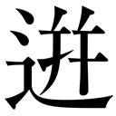ってくる感情のままに、叫んだ。
頭の片隅に作り上げた機械仕掛けの自分？ そんな胸くそ悪いものは、今すぐゴミ箱にポイだ。破砕機にかけて鉄くずにしてやる。
「なんで......なんでなのよぉぉ......」
感情の勢いは、すぐに涸れた。
叫び声は途絶え、小さな嗚咽に変わった。
大きな雫が目元から溢れ、ぽたぽたと膝に落ちてスカートに染みをつくる。
強い女でいよう、と心に決めたこともあった。
ここの少女たちが、不安なく頼って来られるように。心の支えになれるように。拙くとも、親を持たない子供たちの母親の代わりを務められるように。あるいは、演じられるようにと。
その日に、決めたはずだったのだ。何があろうと、決して泣いてはいけない。本当に不安なのは、本当に泣きたいのは、少女たち自身のはずだ。ならば自分は、その涙を受け止める役を引き受けなければならない。ならば、どれだけ無理があろうと、どれだけ自分の心を殺すことになろうとも、笑顔で少女たちを支えてやらなければならないと。
馬鹿じゃないのか。
そんなの、無理に決まってるじゃないか。
だって、こんなに悲しいのだ。こんなに悔しいのだ。
涙だって嗚咽だって、止められるはずがない。
「ううう......うぁぁん......」
強い女の出来そこないは、まるっきり赤子のように、泣きわめく。
誰も慰めてくれない。誰も涙を受け止めてくれない。だから、泣き止み時が分からない。
「失礼するよ、緊急の用だ！」
「ナイグラート、ここにいた！」
「たたた、たいへんですっ！」
突然のことだった。ブチ破ったかという勢いで部屋の扉が開かれて、小さな妖精が三名ほど飛び込んできた。
「ひゃぅっ!?」
扉に背を向ける形で通信晶石に向き合っていたのが幸いした。びっくりして嗚咽は引っ込んだし、泣き顔は少女たちには見られずに済んだ。
「ちょ、ちょっとあなたたち、部屋に入る時にはノックくらい」
声が震えていたので、背を向けたまま小声で抗議した。が、
「それどころじゃない、もう一度言うけれど緊急の用だ」
「早く来て、本当に急がないと大変なの！」
「はやくしないと、本当に死んじゃうかもなんです！」
死ぬ？
ああ、なんだ、その話か。
クトリ・ノタ・セニオリスが死ぬことなら知っている。でもそれはまだ三日先のことだ。あの子は十五歳で、最年長組の一人として大人ぶっているけど本当はとても子供らしくて、甘えん坊だけど甘えることがとにかく苦手で、そして。
「ヴィレムさんが、死にそうなんです！」
沈黙。
......え？ 死にそう？ 誰が？ ヴィレムが？
単語がひとつひとつ、涙で麻痺状態になっていた心に、すとんすとんと降りてくる。
たっぷりと数秒の時間をかけてから、
「何がどうなったらそうなるのよ!?」
まだ少しだけ鼻にかかった声で叫ぶと、備え付けの調味料ケース......ではなく薬箱をひっつかんで、部屋を飛び出した。
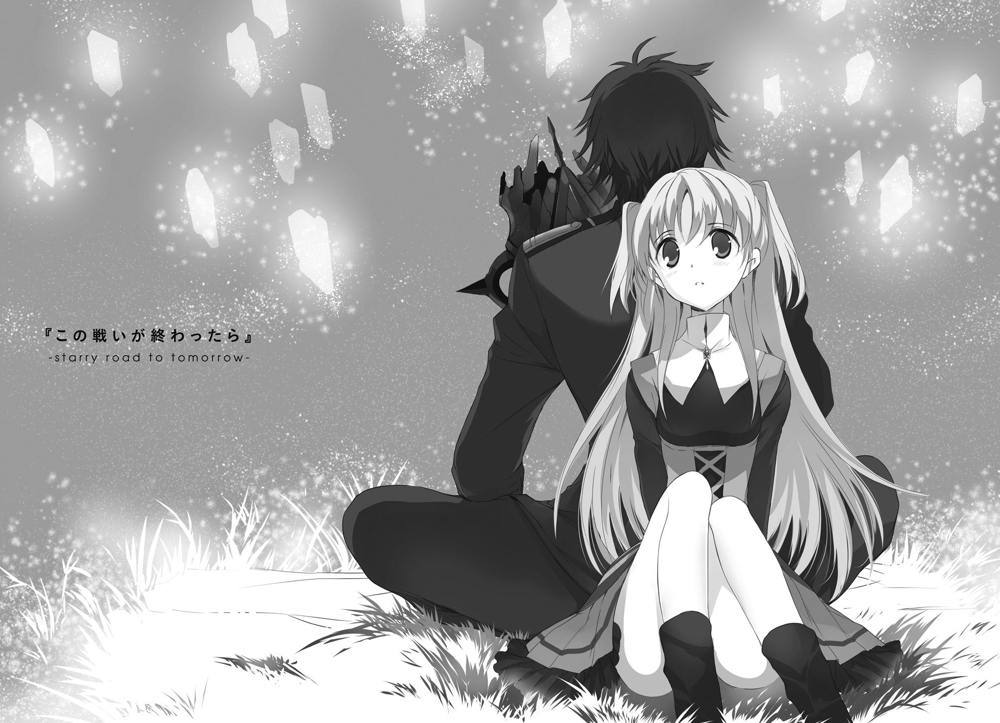
１． 遠い、遠いあの日のこと
長かった戦いに、ついに決着がついた。
既に太陽が三度沈み、同じ数だけ昇っていた。
戦いが始まる前は切り立った山だった場所には、今や海水が流れ込んで巨大な湾が出来上がっていた。
木々に放たれた煉獄焰は今なお消える気配を見せず、死と黒色の灰を辺りにまき散らし続けている。
辺りには無数の金属片が散らばっている。知識のある者がよく見れば、それらが、多種多様の護符の残骸であることが分かっただろう。一番多く落ちている破片は、神聖帝国中央工房謹製の『矢返し』の護符のなれの果て。湾の波間にいくつかまとまって漂っている青銅片は、西ガルマンド砂流連邦に伝わる『死病凌ぎ』の護符が割れたもの。木々の隙間でぐずぐずと赤熱している液状鉄は、ほんの数日前までは、呪術門派セレンズロード秘奥の『宿命保護』の護符であったものだ。
文字通りに世界中からかき集めた、人類に用意しうる最高峰の戦力魔術の集大成。
それがすべて、限界まで使い潰されて、ここに転がっている。
「──まったく、手間取らせやがって」
青年にはもう、指一本動かす力も残っていなかった。
折れた剣を投げ出し、手近な岩の上に腰を下ろす。
「ここまでしねぇと勝てねぇとか、聞いてなかったぞ、おい」
『それはこちらの台詞だ、この若僧どもが』
苦々しげな声が、大気を低く震わせた。
深淵の底から響いてくるような、老いた男の声。
『だが......矮小なるその命を振り絞り、ここまでの意地を張り通したというその一点だけは、認めてやろう』
「嬉しかねぇな。てめぇに認められて、残り時間が増えるでもねぇし。......っていうか、てめぇ、当たり前みてぇに喋ってるが、ちゃんと死んでるんだろうな？」
『然り。
ここまで徹底的に肉体を破壊されれば、さすがの我とて、百年は死の静寂にこの身を浸さぬわけにはいかぬだろうよ。今こうして貴様と意思を交わしているのは、いわば我の残響だ』
「ああそうかい。それを聞いて安心した」
傾国級の禁呪が七つに、自壊レベルまで〝尖らせ〟たパーシヴァルシリーズが十一本。さらには自分には発動資格のない勇者剣技の最終奥義まで無理矢理使った。
これで殺しきれなかったなどという話になったら、もう打つ手がない。
『......受け切っておきながら言うのも何だが、すさまじい話だな。
非力な人の身でありながら、たった一人でそれほどの力を振るうか。まったく、恐ろしい話だ。人の世の内側でその力を使えば、国の二つや三つは一夜にして焦土と化せていたであろうな。
だが......さすがに、代価もなく振るえる力というわけでもなかったか』
ふん、と青年は鼻を鳴らした。
青年の周囲に、薄い紐状の霧のようなものが、いくつも漂っている。
それは少しずつ少しずつ数を増やすと、縛り上げようとでもいうように、青年の体にまとわりついていく。
『あれだけの規模の禁呪だ。反動は必ず呪詛となり、術者を苛む。
ひとつを詠じるだけで、人の身は容易く砕け、魂すら消え失せておかしくないものであった。それを七つともなれば、さぞすさまじい苦しみが襲うのだろうな』
「どうせ死ぬオチなら一つも七つも変わらねぇし、どうせもう戦えねぇなら痛いも苦しいも関係ねぇだろ」
『......まともな思考とはとても思えん』
「昔から言われちゃいたが、本物の化けもんにまで言われると一味違うな」
けけけ、と笑う。
『それくらいでなければ、星神になど挑みはしない、か。
──さて、そろそろ別れの時だ。我はこれより、百年ほどの眠りにつく』
「さっさと消えやがれ。死ぬ時くらい、せめて静かに迎えさせろ」
『分かっている。そのくらいは、勝者の権利として認めてやろう──』
声は薄れ、周囲の空間に満ちていた威圧感とともに、風に溶けて消える。
「──なぁ。もう、死んだか？」
尋ねてみたが、返事はない。
ぴきり、と青年の足元で乾いた音がする。
渾身の力で首を動かして見下ろしてみれば、くるぶしから先が、ざらざらとした石の塊に変わってしまっているのがわかる。
──なんだ、こりゃ。
ぴきぴきと音が重なり、灰色は青年の体を這い上がるようにして広がってくる。膝へ。腿へ。腰へ。さらにその上へ。
重ねに重ねられた、本来なら命を失いかねない呪詛が七本分......複雑に混ざり合い、相互干渉を重ねた結果、それらは本来のものとはまるで違う形で現実に結晶した。
胸の近くまでを石像と化しながら、青年は改めて笑った。
「生きて帰るつもり、だったはずなんだがなぁ。どうしてこうなっちまったんだか」
空を仰いで、きっと同じ空の下のどこかにいるであろう大切な人々に向けて、届くはずもない最期の言葉を遺してゆく。
「悪いな、リーリァ。お前の故郷には、師匠と二人で帰ってくれ。
ごめんな、スウォン。今後のリーリァの我が儘には、お前が代わりに付き合え。
エミは......約束は何もしてなかったよな。ほっといても無事だろうとは思うが、まあ、せいぜい元気に生きてくれ」
それから......それから......
そうしている間にも、青年の体は恐ろしい速度で石に変わっていく。
名前を呼びたい相手が、あまりに多すぎた。そして、それに比べて、青年に残された時間はあまりに少なすぎた。
仕方がない。浮かんでいた名前のすべてをふるいにかけて、ひとつに絞ることにする。
「アルマリア、本当に悪い──」
最後に選んだのは、遠い地の養育院で待つ、血のつながらない〝娘〟の名前。
「──どうやら、バターケーキは、食べに戻れそうにねぇ」
ぱきん、という小さな音。
そこには、青年の形をした石の塊だけが遺された。
２． 生きてるはずがない誰か
「なによ、これ」
手当てを終えての、ナイグラートの第一声は、それだった。
「どうなってるの、あなたの体」
「ははは、まあなんていうか、けっこう鈍ってたな。剣なんて随分長いこと握ってなかったから、体がついてこなかった」
「そういう冗談はいいから。あなたのことだから、ちゃんと理解はしてるんでしょ。自分がどういう状況にあるのかくらい」
ナイグラートの顔は真剣で、しかもなぜか目が充血していて、声が少し震えていた。どうにも、冗談でごまかせる雰囲気には見えなかった。
「はっきりいって、ボロ雑巾よ。
ほとんどの骨に細かい罅が入ったまま、治ってない。
あちこちの腱が衰弱したまま、回復してない。
内臓も半分近くがまともに仕事をしてない。
気功医術とかは専門外だからわからないけど、そっちの目で見たら気脈とかがぐっちゃぐちゃになってるって言われるわよ絶対」
確かに、まあ、言われるんだろうとは思う。ヴィレムもそっちの知識はまったくないが、自分の体がぐちゃぐちゃであることに関しては自覚している。
「スジ肉もね、ここまで傷だらけなら、わざわざ包丁で叩いたりしなくても歯ですんなり嚙み切れるんじゃないかってくらい」
切なそうな顔で言わないでほしい。
「しかもこれ、昨日今日の損傷じゃないわね。完璧に古傷になってる。ってことはあなた、今日までずっと、こんな重傷を隠して生活してたの？」
「別に、秘密にしてたわけじゃないんだがな」
「平気な顔して黙ってれば同じことよ、もう。どれだけ鍛えてあれば、こんな状態でも歩いたり動いたりできるようになるのよ......」
ナイグラートはそこで深いため息を吐いて、
「......この傷、やっぱり、石になってた後遺症なの？」
「というより、その前の戦いのダメージだな。
ま、もともと生きてるだけで丸儲けの状況だったんだ。贅沢を言う気はねぇよ」
「それ、命を軽く扱う言い訳にはならないわよ」
「みてぇだな」
軽く肩をすくめ──ようとすると全身に激痛が走ったので、あいまいな笑顔だけを浮かべておいた。
「もう、無理はしないで」
そっと、ナイグラートの手のひらが、ヴィレムの手を握った。
条件反射で、心臓が高鳴る。
「味が落ちるから」
まあ、そう言われるだろうとは思っていたよ。
「他の子たちに、あなたのことを話してもいいわよね？」
「ああ。さっきも言ったが、もともと秘密にしてるわけでもねぇしな、必要だと思ったなら、好きなように話しちまってくれ」
「わかったわ。それじゃ、行ってくる。あなたは、しばらくここで寝てなさい。
わかってるとは思うけど、体に負担のかかるようなことは一切禁止よ。いま生きてるのが不思議なひとに、命の保証なんてしないからね」
「わあってるって。今さら、お前のディナーを一皿増やすような真似はしねぇよ」
つとめて軽く言い放つと、
「茶化さないで。私、本気で言ってるの」
「......お、おう」
唇をとがらせた、あまり迫力のない真顔で怒られた。
つい先ほど、味がどうこうとか言っていたのは誰だったか。なにやら理不尽なものは感じたが、反論はしないことにした。
たぶんそっちのほうが身のためだろうと思えたし......何より、まあ、本気で心配されているということが照れくさくて茶化すというのは、あまり行儀のよい行いではなかったなと自覚していたから。
大勢の妖精を一度に集める場所として、とりあえず食堂を選んだ。
二十人近い数の少女たちの視線を集めて、ナイグラートはため息を吐く。
「......そんなに期待された目で見られても、面白い話とは限らないわよ？」
「まあ、そのへんは後で判断するっすよ。
あたしらは、あれです。今は面白さより、真実ってやつを知りたい気分でして」
アイセアがそれっぽいことを言うと、周囲の妖精たちがうんうんと頷く。
これはどうやら、逃げられそうにない。ナイグラートは「しょうがないわね」と呟くと、覚悟を決めて語り始める。
「去年の春ごろ、だったかしら。ここに派遣されて来るちょっと前のことね。
オルランドリ商会からの派遣で、私、サルベージャーグループに協力していたことがあったの」
「さるべーじゃー！」
何名かの妖精が、瞳を輝かせた。ロマンを追って危険に飛び込んでいくサルベージャーたちは、浮遊大陸群の一部の子供たちにはヒーロー的な人気を博している。とはいえ、それは本来どちらかというと男の子向けの人気なのだが。
「彼らは基本的に、ついてないサルベージャーだった。
何度も地上に降りたけれど、全体的に実入りはあまりよくなかった。その日も、手ぶらでむなしく浮遊島に帰る寸前だったんだけど、ドジが一人、地面を踏み抜いて地下に落ちちゃってね──」
その場で一行は、凍り付いた巨大な地底湖を発見した。
そして、その湖の底の方に、徴無しの青年の石像が沈んでいるのを見たのだ──という。
「なんか、氷棺姫みたい」
少女たちの一人が、おとぎ話の題を挙げた。
「中にいたのは、お姫様じゃなくて、男のしかも石像だったけどね？」
呪力視の使える仲間が、それはただの石像ではなく、何らかの呪詛で石にされた本物の青年であると見抜いた。となると、さすがに、放って帰るという選択肢はない。
苦労して氷を砕き、その石像を引っ張り出した。どうしようもなく重たい荷物ではあったけれど、なんとか浮遊島へと連れ帰った。
そのまま施療院に叩きこんでから一月くらい経ったころに、そいつの体の石化は解け、意識も取り戻した。
「その時は大変だったのよ？
緑鬼族や豚頭族を見るたびに暴れそうになるし、そもそも全然言葉が通じないしで。商会の通意術師を呼んで初めて、いろいろ話ができるようになった。
その時に、ようやく知った。彼が、本物の人間族だって。
同族以外のすべてを敵に回してずっと戦い続けていた兵士の、最後の生き残り。
どうしてかはわからないけど、何百年もの間、ずっと、あの湖の底で眠り続けていたんだ......ってね」
「ずっと地上にいて、〈獣〉にたべられなかったの？」
「石だったから、かしらね。そういうのも不幸中の幸いって言うのかしら」
言葉の問題は、比較的簡単に解決した。その氷の近くに転がっていた古代の護符のひとつが、『言語理解』のそれだったからだ。護符の力を使った青年はぽつぽつと自分のことを語り、そして、サルベージャーたちの告げる現在のことを理解した。
あの時の青年の絶望の貌を、ナイグラートはまだ覚えている。
あの時の青年の慟哭の姿を、ナイグラートはまだ忘れられずにいる。
とっくに滅びたはずの人間族の、おそらくは最後の生き残り。そんな特別な存在である彼を、彼自身の望んだとおりに、そっとしておくことを仲間たち全員で決めた。
その後しばらくのことを、ナイグラートはあまりよく知らない。彼が──よりにもよって徴無しへの風当たりの強い──28番浮遊島に住み、めちゃくちゃな労働をしながら、蘇生薬やら施療院やら通意術師やらにかかった費用を返そうとしている。そんな話を、サルベージャーの一人から伝え聞いた程度だった。
それから......そう。彼はここに来た。
一年半前よりも、背が伸びていた。よく笑うようになっていた。子供たちに妙に優しいという、意外な一面を見せてくれた。
それでも。瞳の奥に昏く揺れている、黒い炎のような虚無感だけは、あの頃から何ひとつ変わらないままだった。
「私が知ってるのは、それで全部よ」
主観的な印象のあたりは一部伏せながら、一通りのことをナイグラートは語った。
少女たちは顔を見合わせて、ひそひそ声で何かを話し合っているようだった。
「──話せることも、これで終わり。
あと言えるのは、お願いくらいかしら。すぐには無理かもしれないけど、みんな、あの人のことをあまり怖がったり疎んだりしないでほしい......それだけ」
言って、ナイグラートは食堂を出た。
廊下を歩きながら、失敗したかも、とナイグラートは思う。
人間族は忌まれる種族だ。ヴィレム個人がそれに関わっていたわけではないだろうが、〈十七種の獣〉を世界に放ち滅びを始めさせたのは、間違いなくあの種族なのだから。
この黄金妖精たちが、世間と同じ態度をとるとは思わない。しかし、同じではなくとも同種の反応をする可能性はある。彼女たちは〈十七種の獣〉と戦うための存在であり、そのために使い潰される兵器。その運命を作ったのは、元を辿れば人間族ということになるのだから。
それでも。できることなら。この子たちには、ヴィレムを拒まないでいてほしい。
この世界に居場所のない彼が、それでも曲がりなりに笑顔を浮かべることのできるこの場所には、壊れてほしくない。
きっと、彼自身はそう望んでいないのだろう。だから、妖精たちの真実を知ろうとしたし、自分自身の真実を明かすような真似もしたのだろう。ナイグラートはその決意も否定しなくない。だからこうして、過去を語るような真似をした。しかしそれでも、あきらめたくないという思いが消せたわけではないのだ。
だから、ムシのいい願いと分かっていても、この子たちには、どうか、これまでと変わらずにヴィレムの傍にいてほしいと──
ふと、足を止めた。
嫌な予感が、首のうしろのあたりをかすめていった。
まさかね、と思う。いくらなんでも、今このタイミングで、そんなことにはならないだろうと。しかし同時に、こうも思うのだ。あの連中ならやりかねない。
急ぎ、方向転換。速足で、医務室に向かう。
廊下の角にさしかかったところで、
「びれむー！ 話はきいたわ、あなた、めつぼうしたんですって!?」
能天気な声が聞こえてきた。
思いっきり、つんのめりかけた。
「へえー、人間族ってほんとにあたしたちと変わらないんだね」
「興味深い。きみたちの時代の話を、いろいろ聞かせてくれないか」
「あ、あの、うまくいえないけど、元気だしてくださいっ」
医務室いっぱいに、妖精たちが押し寄せていた。
つい先ほどまで死にかけていた重傷者が横たわるベッドに群がって、子供たちがきゃいきゃいと、実に賑やかに騒ぎ立てている。
「............」
ぽかん、と扉の前で呆けること、おおよそ十秒。
つい先ほどまで自分が考えていたことの滑稽さを哂うのに、追加で五秒。まったく、よく考えればこの展開は充分に予想できていただろうに、いったい何を心配していたのだか。
この少女たちが、それぞれにできる範囲でヴィレムを力づけようとしていることが嬉しくて、微笑みをこらえるのに二秒ほど費やして。
気持ちを切り替える深呼吸に、たっぷり七秒ほどを遣って。
「あなたたち」
ぴたり、と少女たちの動きが止まった。
ぎぎぎ、と錆びた螺子を回すような音をさせて、首がこちらを振り返った。
「その人はね、いま、とても疲れて、お休み中なの。だから静かにしてあげて。
言うことを聞かない悪い子は......」
ゆっくりと、ゆったりと、布地を引き裂くような笑みを浮かべて、
「どうなるか、わかるわよね？」
そこから、十秒とかからない。少女たちは我先にと逃げ出し、廊下を全力で走り去る。
「おー、静かになったっすねー」
ひょい、と背後からアイセアが顔を出す。
「騒がしくするなら、あなたも追い出すわよ？」
「なはは、それはご勘弁」
アイセアは軽く笑ってから、本気か冗談かわかりにくいあいまいな顔になって、
「でも、ちょいと早めにそこの死にかけさんに確認しておきたいことがあるんで、そのくらいは許可もらえないっすかね？」
「......何が聞きたい？」
ナイグラートが何かを言うよりも先に、ヴィレム本人が答えていた。
こうなると、ナイグラートは口をはさめない。「どもどもー」といつもの笑顔でアイセアが部屋に潜り込み、ちゃっかり小さな椅子をベッドの横に置いて腰を下ろす。
「まずは再確認。人間族だったんすね？」
「いつの間にか、そう呼ばれるものになってたらしいな。
俺が地上にいたころは、わざわざ自分たちの種族に特別な呼び名は付けなかった。『人』と言えば人間のことだったし、種族が違うってことはほぼ自生怪物とイコールだった」
「殺伐とした時代っすねえ」
「ま、そのへんは否定しねぇよ。......それで、本題は何だ？」
アイセアはにんまり笑い、
「......その人間族サマが、なんで、あたしらに構うんすかね？」
不意に真顔になると、低い声で、そう尋ねてきた。
「あんたの存在を、ありがたいとは思ってるっすよ。二位呪器技官。
でも、正体を聞いた今、改めて、あんたがこの場所に対して力を尽くす理由が分からなくなった。
こんなズタボロの体でクトリとやりあったとか、ガチ命がけじゃないっすか。ちゃんとした理由もなしにそこまでするとか、かなり気持ち悪いレベルっすよ？」
「女の子に優しくするのは当然だ」
「......わかりやすいっすね」
アイセアは表情を緩め、指先で頰を搔く。
「そりゃ確かに雄性体は雌性体に優しくするのがデフォルトだって生物学者も言うたあ思いますが、アレっすよ。うちらのこれは見た目だけっすよ？」
黄金妖精には、女性しかいない。
理由は分かっていないが、事実そうなのだから仕方がない。少なくとも今のところ、例外は見つかっていない。
厳密には生命ではなく自然発生によって殖えることができるモノであるため、男性がいないということに直接的なリスクはない。だから誰も大した問題だと考えてはいないが、しかしこの状況は考え方を変えると、
「全員が女ってことは、そもそも性別がないのと同じじゃないっすか。
つまり、あたしら全員、なめくじみたいなものっすよ？」
「わかっていないな」
ヴィレムは鼻先で笑う。
「帝都傀儡軍の造形班が聞いたら怒り狂うぞ」
「はぁ。そう言われましても、あたしその人知らないっす」
「......なら、あれだ。お前、子猫は好きか？」
「はぁ、まぁ、人並みには」
「守りたくなるか？」
「そうっすね、人並みには」
「つまりそういうことだ」
「いや、わかんねっす」
ヴィレムは少し考えて、
「昔に俺が聞いた話ではな。可愛らしい外見なんてものは、ただ漫然と発生するものじゃないんだとさ。そいつ自身の『愛されたい』『守られたい』『大事にされたい』と望む本質が、自身をそう形作る。
獣だろうと人だろうと、子供ってやつが種族を越えて可愛いってのは、つまりそういうことだ。それだけ必死になって、守られたいと願っているんだ......ってな」
「......あたしらもそうだと、言いたいんすか？」
「正体が『魂』だっていうならどんな異形だってとれるだろうに、わざわざ子供の、しかも女の姿で生まれてくるようなデタラメ生物だからな。説得力あるだろ？」
「種族ぐるみで甘えん坊、ってことっすか──技官が少女趣味だということまで計算に入れれば、確かに筋は通るっすね」
「いやお前、なんでそうなるんだよ!?」
二人、楽しげに笑う。
なんだかなぁ、とナイグラートは思う。
色々心配していた自分は何だったんだろう、と情けない気持ちになる。
結局妖精の子たちもヴィレム自身も、ナイグラートが考えていたほどものを深く考えはしないし、ひどく身勝手だった。誰も彼もが、自分の理屈と物差しだけで動いていた。
はっきり言って、馬鹿の群れだった。
そして馬鹿は、そうそう簡単に賢くなれないから馬鹿なのだ。
ああいう風に、自由気ままに笑っていられるから、馬鹿なのだ。
ああもう。あなたたちみんな、大好き。
こういうことを言葉にして言うとなぜかみんな怯えるので、心の中で思いきり叫ぶにとどめておいた。
３． 迷える少女と空飛ぶ蜥蜴
......自分は、何をしているんだろう。
クトリ・ノタ・セニオリスは走っていた。倉庫という名の宿舎を飛び出し、森を抜けて、港湾区画を駆け抜けて、これ以上走る大地がなくなったので背中から大きく翼を広げ、空に飛び立つ。
理由は、分からなかった。けれど、そうせずにはいられなかった。
あの短い模擬試合（だとクトリは解釈した）を通してヴィレムが言いたかったことは、大体理解できる。できてしまう。だから、クトリは耐えられない。
現在の軍が配備できる通常の戦力と、もうすぐ襲ってくる〈六番目の獣〉たちとの戦力を比較した場合、どうしても勝利を確定できない。だから、犠牲を覚悟で戦力の一時的な底上げをしようとしている。現状はつまり、そういうことだ。
そしてこの状況には、解決法がある。現在の戦力そのものを底上げすればいい。
自分たちが遺跡兵装の本来の力を引き出せていないということは、最初からよくわかっていたことだ。何せブツは大昔の精密呪器だ、そうでなくても性能が劣化していることだろう。しかも取り扱い説明書もついていないからトライ＆エラーで動かし方を探り、使用者認証はダミーで騙して潜り抜け、なんとか無理矢理起動に漕ぎつけているだけなのだ。
ならば、当然。本来の使い方を知る者が現れれば、状況は一変する。
戦力計算のやり直しだ。「どれだけの犠牲が出るかわからない勝利」と「確実だが最低限の犠牲の出る確実な勝利」のふたつを、再び秤にかけることができる。
それは、これまでの自分たちの戦いが間違っていたと認めるに等しい。
これまでに失われてきたものが、本当ならばその必要のない無駄な犠牲であったということを、突き付けられることに等しい。
これまでのやり方の通りに失われるものだと、自分自身の死を覚悟していた者にとっては、その覚悟をそのまま無価値だと断ぜられることにも等しい。
「冗談じゃ、ない......」
半年前。
特大の〈六番目の獣〉の襲撃が予見された、あの日。
黄金妖精クトリ・ノタ・セニオリスをわざと暴走させる以外に撃退手段がないと告げられた、あの瞬間。
「怖かったのに......」
もちろん、死にたくなんてなかった。
残り時間が限られていると知った後になって、やりたいことが色々思いついた。
それでも、いっぱい泣いて、いっぱい強がって、
「やっと、覚悟決めたばっかりなのに......」
もう泣かない、と決めたのは、今からわずかに半月前のこと。なのに今、どうしようもなく、目頭が熱い。
ちくしょう、泣いてなんてやるもんか。そう心が強がろうとすればするほど、こみ上げるものは止まらず、今にもあふれ出しそうになってくる。
「ぐぬ、ぬぬぬ......」
目元に力を込める。翼の羽ばたきが止まる。
自由落下が始まる。びゅおおおう、と耳元で風の唸る音。
すぐ眼下には、白く分厚い雲の海。
──ちょうどいいや、などと思う。
雲の中を飛べば、全身が濡れる。そうすれば、涙の証拠などどこにも残らない。だからそのまま、自分の体を落ちるに任せた。
雲の中に入る。
雲というのは、つまるところ、高所に出る濃霧だ。綿のように見えていても感触はないし、その中へ飛び込んだからといって飛沫が飛ぶこともない。そこは、ただただ視界が白くて、ただただ全身を濡らしていくだけの、何もない空の上だ。
「あ」
しまった、と思った。
とても大事なことを忘れていた。
今は秋。もう冬が近い。
そして、全身が濡れると、とても寒い。
「やばっ......」
空を飛ぶときに体力が重要なのは、鳥だろうと妖精だろうと変わらない。寒さはその体力を急激に奪っていく。そして何より、ここの辺りには、休憩に使えるような都合のいい浮遊岩は浮かんでいない。
隣の浮遊大陸までなんとか飛んでいく？
それとも、来た空をそのまま引き返す？
どちらもまあ、決して無理な話ではない。しかし帰りのことなども考えると、前者はあまり現実的ではない。ならばもちろん引き返す以外の選択肢などないのだが、素直にそれを採ることはどうにも躊躇われた。
どうしよう。
ぶるりと体を震わせつつ、真っ逆さまに雲の中を落下しながら、考える。結論はひとつしかないけれど、それを選びたくないがばかりに、無理矢理に自分の中に葛藤を創りだす。
そうしているうちに、
「ん......？」
真っ白に塗りつぶされた視界の隅に、ふと、黒い影が見えた。
──五分後。
護翼軍所属巡回偵察艇『バロックポット』、第二階層小型作戦室。
狭い。
とにかく狭い。
確かに小型作戦室というくらいだから、決して大きな部屋ではない。しかし、仮にも作戦室である以上、それなりの人数を収めるだけの最低限の面積は確保してある。そしていま、この部屋の中にいるのはわずかに二名だけだ。
では、なぜここまで狭い思いをしなければならないのか。
答えは簡単。二名のうち片方が、身の丈がクトリの倍を軽く越えるような、巨漢の爬虫種であるからだ。身の丈が倍あれば横幅も倍であり、体重と迫力は八倍だ。部屋も狭くなろうというものである。
借りたタオルでわしわしと頭を拭いてから、クトリは爬虫種の顔を見上げる。
「......急に押しかけてごめんなさい、〝石灰岩ノ肌〟一位武官。
近くを飛んでいるのを見つけてしまったので、つい......」
「構ワン。塵風ノ庵ハ、常ニ誇リアル戦士ニ開カレテイル」
言って、爬虫種は温かな薬湯のカップをテーブルに置いた。
巨漢が背を丸め、おもちゃのように小さなカップを丁寧に扱っている姿は、どこか現実離れしたおかしみがあった。
「ありがとうございます」
カップを受け取り、中身に口をつける。
熱い。そして苦い。舌先がぴりぴりと痺れる感覚に、思わず体を硬直させる。
「シカシ、コノ季節ニ雲ノ中ヲ飛ンダ理由ハ気ニカカルナ。
マシテ、貴様ハ大切ナ戦イヲ目前ニ控エタ身ダ。何ガアッタ？」
「うっ......」
口ごもる。
迷う。惑う。考える。そして、口を開く。
「その戦いのことですけど......いまさら、やっぱり死ぬのは怖いとか言い出すのって、いけないですよね？」
「フム？」
爬虫種が片眉をあげた、ような気がした。もちろんそんなものはないので、気のせいでしかないのだが。
「ヴィレム......二位技官の、ことですが」
「フム」
クトリは知っている。いまあの妖精倉庫に詰めている『ヴィレム・クメシュ二位呪器技官』は書類上だけの軍人、肩書きだけの存在だが、言い換えれば、軍の書類の上では彼という軍人はしっかり存在しているということを。そして、その書類の上では、彼の直接の上官にあたる人物が目の前にいる巨漢の爬虫種──〝石灰岩ノ肌〟一位武官であることを。
「これまでのわたしたちのそれとは違う戦い方がある、っていうんです。
実際に、その戦い方も、ちょっとだけ見せられました。それだけじゃ、何をしてたのかもよく見えませんでしたけど、はっきり分かったこともありました。
あれは確かに、わたしたちのものよりも、ずっと勝率がよくて、ずっと効率もよくて、ずっと──正しいやり方でした」
「ホウ......？」
カップの中に視線を落とす。
「そんなこと、認めたくない。わたしの〝姉〟たちが間違ってたとか、死ぬ必要はなかったんだとか、そんなこと信じたくない。
だから、わたし、あのひとの言うことを聞かないつもりでした。
どうせ時間はもう残ってなかったし。戦場で証明するつもりでいました。わたしが〝姉〟たちの戦い方を守らないといけない、その正しさを証明しないといけないって、思ってました。
でも......」
「怖レタカ」
頷くことは、躊躇われた。
爬虫種特有の文化なのか、〝石灰岩ノ肌〟は戦士という言葉に強くこだわっている。そのこだわりの詳しい内容をクトリは理解していないが、どうやら彼の中の基準ではクトリは戦士として合格であるらしい。
ここで頷けば、失望されかねない。
勇気を失い、戦士の資格を投げ捨てたものと見なされかねない。
そう思っても、
「......はい」
噓は、つけなかった。
「クックク......ナルホドナ」
突然に。
爬虫種は口を大きく開くと、土鈴を振り回すような耳障りな音を喉の奥かららせた。
「......え？ え？」
はるか頭上から響き渡る、謎の大音声。
「ナルホド。コレハドウヤラ、アノ男ニ謝ラネバナランナ。
我ラトハ戦場ヲコソ違エテイルガ、アノ男、紛レモナク一人ノ戦士ヨ」
彼は笑っているのだと、少しだけ遅れて気が付いた。
「な、なんで？ どうしてそうなるんですか、戦ってるのはわたしたちですよ!?」
「〈獣〉ト争ウ事ガ、我ラノ戦イダ。ダガ、ヴィレムノ戦イハ、ソウデハナイ。
奴ガ挑モウトシテイルノハ、貴様ノ内ニ吹ク風ヨ」
「......風？」
「貴様ガ『覚悟』ト呼ンデイルモノノ正体ダ。
『諦メ』と言イ換エレバ、少シハ理解シヤスイカ？」
頭に血が上った。
手の中の薬湯をまとめて飲み下す。体中が、内側から灼けるように熱くなる。
何をどう煮詰めたらこんなものができるんだろうとか、そもそもなんで変温動物の爬虫種がこんなものを淹れたんだろうとか、そんな実に益体もない疑問がいくつか頭に浮かんだが、とにかく頭の片隅のほうに押しやった。今はそんなことを気にしている場合ではなくて、
「なんだ」
少しだけ、心が軽くなった気がする。ぽっかりと穴が開いただけのような感じもするが、まあ、大差はないんじゃないだろうか。
「わたしが戦士の器なんかじゃないって、一位武官、わかってたんじゃないですか。見かけによらず、おだてるのが上手いんですから......本気にしちゃってました」
「何ヲ言ッテイル？ 誇リアル鱗ノ民ガ偽リヲ口ニスルナド、太陽ガ北ニ沈ムガゴトク、アリエンコトダ」
「でもいま、わたしが諦めているって言いましたよ？」
「『諦メ』ト『覚悟』ハ、本質的ニ同ジモノダ。
ドチラモ、目的ノタメニ大切ナモノヲ切リ捨テル決断ノコトヲ指ス」
──それは。
尊いはずのものも、忌まれるはずのものも、いっしょくたに混ぜ合わせてしまうような、その理屈は。
「覚悟は、なんていうか、もっと大事なものじゃ、ないんですか？」
「スベテノモノノ価値トハ、受ケ入レラレル代価ノ重サデノミ決マルモノダ。大切ナモノヲ切リ捨テテノ覚悟デアレバ、ソレダケノ価値ガアルダロウ。
ムロン、オナジモノヲ切リ捨テテノ諦メニモマタ、オナジ価値ガアル」
「よくわかりません」
「言葉ノ美シサニ惑ワサレルノハ、タシカニ、戦士ニ相応シイ振ル舞イトハ言エンナ」
ガラガラと不気味な笑い声をあげながら、そんなことを言う。
「じゃあ......結局、どうすればいいんですか、わたしは」
「好キニ決メロ」
「......それがわからないから聞いているんです。どうするのが正しいんですか？」
「戦場ニ、正シサナドトイウ酔狂ナモノハナイ。
ダカラ戦士ハ己ノ胸ニ風ヲ抱クノダ。標ナキ道ニ導ヲ得ルタメニ」
「......一位武官」
やばい。
そろそろ本格的に何を言われているのかわからない。
さっきまでの会話はまだ、理解できたのだ。納得できるかどうかはさておき、言わんとすることは汲みとれた。しかし、どうやら当人の興が乗ってきてしまったせいか、言い回しも話の内容自体もどんどんややこしくなってきている。
たぶん良いことを言われているのだとは思うし、なんとなく感じ入るものがないでもなかったのだけど、やっぱりわからないものはわからない。
「貴様ハ、姉タチノ戦イノ正シサヲ護リタイ、ト言ッタナ？」
「......はい」
「ナラバ、ソノ戦イノ前ニ、ソノ正シサトヤラガ何デアルカ、見ツケテオケ。
我ラハ、貴様ラ妖精ノ戦イヲ、知識トシテシカ知ラン。業自体モ、積ミアゲラレタ歴史モ、ソノ陰ニ隠レタ想イノ歴史モ、何モカモヲダ。
ナラバ、ソノ正シサトヤラヲ計ル資格ハ、貴様ラニシカナイ」
「......ずいぶんと無責任ですね、一位武官」
せめてもの嫌みを込めてそう言ってやっても、
「風ハ何モ背負ワヌモノダ」
涼しい顔（たぶん）で、受け流された。
はあ、と小さく息を吐く。何やら、いろいろと諦める気分になってきた。
そういえば、諦めと覚悟は本質的に同じもの、とか言われたばかりだった。なるほど、うん。そう考えてみれば確かに、肝が据わったような気分になれなくもない。
「......怒られるかもしれないけど、ひとつ、告白します」
「何ダ」
「わたし、実は、戦士になんて、なりたくなかったんです」
ガララララララ、と笑う。
「知ッテイル。
ダカラコソ、貴様ハ優レタ戦士ニナリエタノダカラナ」
......やっぱり、話が嚙み合っていないと思う。
えいくそこのやろ、と苛立ちを込めて二杯目の薬湯を飲み干した。
４． 星空の下の星空
「あの子いま、第66番島近くの護翼軍偵察艇にいるって」
「......なんでそうなるんだ？」
「それはよくわからないけど、これから帰るって言ってたわよ。途中までは軍の偵察艇に便乗させてもらって、あとは徒歩で飛んでくるって」
ぱちん、とナイグラートが通信晶石の接続を切る。
「ずいぶんとダイナミックな家出じゃねぇか、ったく心配させやがって」
「そうね──羽のある子は、自己表現手段も豊富で羨ましいわ。私なんて、辛いときにはヤケ食いくらいしかストレス発散方法が無くて」
ふぅ、と憂いを帯びた表情でため息などを吐く。
「──ほんと、好かれてるわね。あの子だけじゃなくて、他の子たちにも。
世話役の先輩としては、ちょっと妬けるかな」
「そりゃあ、どんなもんだかな」
「あら、自覚なかったの？」
ナイグラートは驚きの表情で口元に手をあてて、
「鈍感系？ それとも、韜晦系？」
よくわからないことを聞いてくる。
「なんだよ、そりゃ」
「ええと、『恋愛に興味はありませんって硬派を気取っているけど女の子からアプローチされていい気分にはなりたいサイテー男』の大ざっぱな分類だけど」
......それこそ、なんだよそりゃ。
「鈍感系は、好かれてることに本気で気づいてないし、何があっても気づかないタイプ。女の子が何を言っても何をやっても気づかないもどかしさと、どんどんエスカレートするアプローチ方法のダイナミズムが楽しめます。バリエーションとして、向けられてる好意を他の感情と勘違いする錯誤系なんかもあり。
韜晦系は、好かれてることに実は気づいてるけど、わざと気づいていないふりをするタイプ。構図は鈍感系と似たような形になるけど、相手を騙していることになる罪悪感とか、気づいていないふりそのものを気づかれてしまう展開とか、辛口のスパイスがいろいろ利かせられるのが特徴。
さあ、あなたはどっち？」
「......おかしなところがありすぎて、逆に何から指摘すればいいのかわからねぇな」
深い深い嘆息。
「創作物語の話なら、よそでやってくれ。
別に、やつらに好かれてるらしいってことくらいまでは否定しないさ」
「あら」
ナイグラートは目を丸くする。
「ちょっと意外かも。そういうのには疎い系のキャラでいくつもりとばかり」
「キャラとか言うな、別に何かを演技してるつもりはねぇよ」
頭をがりりと搔く。
「真面目な話をするぞ。恋愛感情なんてのは、相手のいるいないにかかわらず、年頃になりゃあ胸の奥から勝手に湧いて出てくるもんだ。
大抵のやつらは、すぐにその感情のぶつけ先を見つける。とりあえず身近にいる異性だったり、手の届かない憧れの誰かであったり、いつか出会うであろう理想の誰かであったりだな。場合によっちゃ、最後まで実在しない夢想の向こう側に感情ごと放り投げるってこともあるか。
......あの連中は、ずっと、そのどれもできなかった。
そこに、俺がやってきた。ゼロだったものが、イチになった。とりあえず感情を向ける先は用意されちまった。
となったら、あとはあいつら自身の中で、その感情にうまく理由をくっつければ、立派な『恋心』がひとつ出来上がり、てなワケだ──なんだよ、その目」
極上のジト目が、まっすぐにヴィレムを見据えていた。
「予想をはるかに上回るサイテー男を見つけて、呆れてる目」
「なんでだよ。普通の話だろうが。
ざっくり言ってみりゃ、大勢の娘が一度に、多少強めのファザコンに罹ったってだけだ。そりゃ好かれること自体は嬉しいし、光栄でもあるがよ、それ以上のものは何もねぇよ」
「......その答え、すごくつまらない」
不満そうに言われたので、肩をすくめてみせる。
「つまらないってのは、平穏ってことだ。それが何よりだろ？」
「まあ......そうね、そこは否定しない。でも」
ナイグラートはこちらの胸元をまっすぐ指さし、
「一人の女の子として言わせてもらえれば、そんな達観したこと言って気持ちをスルーされるほうはたまったものじゃないの。あの子たちは確かに子供かもしれないけど、ちゃんと女の子してるんだから。
そういう気づかいのできない男は嫌よ、きっと消化に悪いわ」
女の子として、か。その言い分は年齢的にどうなのだろうか。
いや、そこには敢えて触れまい。自分は、そのくらいには、気づかいのできる男だ。消化はされたくないが。
「......どんなに若い気持ちであってもね。それが最後の思い、っていう子もいるの。だったら、ちゃんとその気持ちには向き合ってほしい。
冗談とかは抜きで、これは本心からのお願い」
「断る」
即答した。
「......恋やら愛やらがそんなに素敵なものだってんなら、なおのこと、こんな狭い場所で、間に合わせの恋心で満足させてどうするってんだよ。
浮遊大陸群は広いんだ。いい男はほかにいくらだっている。父親役の仕事ってのは、そういう奴らにいつか娘を奪い取られることのほうだろうが」
言ってから、少し考える。
そういう目で周りを見てこなかったので、自分の知る浮遊大陸群の男性陣というのは、肌が緑色だったり顔が豚だったり鱗が生えていたりする連中ばかりだった。
いや待て。見た目や種族の違いを気にする感性は、五百年ばかり古いのかもしれない。実際、純粋に性格だけを見てみるならば、気のいい野郎どもは多いのだ。
試しに想像してみよう。
ある日いきなり、たとえばクトリあたりが『真剣にお付き合いしているの』などと言って緑鬼族の好青年を連れてくるのだ。その時自分は、果たして笑顔で二人を祝福できるだろうか？
「ひゃっ!?」
「......ああ、悪ぃ。思わず殺気が漏れた」
「お、思わずってレベルじゃなかったわよ!? いまちょっとだけ、〝忘却の河〟の向こうでおばあちゃんが手招きしてるのが見えたじゃない！ どうしたのよいきなり！」
「いや、グリックとかああ見えて実はけっこういい男だなとか思うと、ついな」
「脈絡なさすぎるにも限度ってものがあるわよ!?」
ふと、窓の外を見る。
雲ひとつない、いい夜だ。
「──出かけてくる。話の続きがあるなら、また今度な」
「ちょっと、どこ行くの」
「星でも見に行く。ああ、この鍵、借りてくぜ」
ひらひらと手を振って、部屋を出る。
「え？ あれ、ちょっと、いつの間に!?」
背後の悲鳴は、聞かなかったことに。
倉庫からセニオリスを引っ張り出してきた。
第68浮遊島のはずれ、ちょっと小高い丘の上。
風は穏やかで、空気は澄んでいて、星の光は柔らかで、色々と都合の良い夜だった。
セニオリスを覆う布を取り払い、刀身を風にさらす。
軽く、魔力を通す。こめかみがわずかに痛むが、この程度なら大して気にならない。
ぶわ、と。セニオリスが、柔らかい光を放つ。
「──調整開始」
つぶやいて、刀身の中ほど、光を放つ金属片のひとつに触れた。かこん、という小さな音。金属片はひとりでに刀身から外れると、滑るように宙を移動し、ヴィレムから五歩ほど離れた場所でぴたりと動きを止めた。
立奏鉄琴を弾いたような、澄んだ金属音。
もうひとつ、別の金属片に触れる。それもまた、するすると宙を滑り、やはり離れた場所で動きを止める。先ほどのものとはわずかに音程の異なる、澄んだ音が響く。
またひとつ。
さらにひとつ。
極位古聖剣セニオリスは、全部で四十一の金属片を組み合わせ、呪力線でつなぐことで形作られた剣だ。その呪力線を直接操作することで、こうして、刀身をほどき、部品のひとつひとつを露わにすることができる。
やがて、ヴィレムの手元には、刀身の中に隠されていた小さな水晶片だけが残る。
その周囲には、星のように淡い光を放つ、四十一のカケラたち。
「よし......」
水晶片に手をかざし、まずはセニオリスの現状を把握するところから始める。
──平常状態よりも、対毒、対呪詛の耐性効果が高まっている。逆に、対惑乱、対竜眼の耐性はほぼ効力を失っている。それと、対亜人の敵意レベルが妙に高まっているのも気にかかる。この辺りは、長年調整もなく戦い続けてきたせいで、戦場の偏りや使い手のくせなどが影響したところだろうか。
続けて、各種の機能評価を確認する。
実にひどいものだった。柄から強引に魔力を詰め込まれる扱われ方が長かったせいか、あちこちの機能が歪み切ってしまっている。脊髄経路の根本に大型の魔力詰まり、その左右に大小五つの念瘤。その周辺の呪力線のうち三本ほどは完全に切れていて、残りも線自体がヘタレきっていて平均三〇パーセントほど効率が落ちている。
「よくもまぁ、こんなんで戦い続けられたよな、お前も」
苦笑が漏れる。
水晶片を、軽く指先で弾く。わずかな魔力を送り込む。
魔力は、それまで不可視であった呪力線の一本を輝かせながら、金属片のひとつへと吸い込まれていく。再び、澄んだ金属音。
別の魔力を送る。別の呪力線が輝き、別の金属片が音を奏でる。
またひとつ。
さらにひとつ。
次々に、光が舞う。音が躍る。
眠っていた呪力線が賦活され、疲弊していた金属片が活力を取り戻す。
──背後に、気配を感じた。
「よう。おかえり、家出娘」
振り返らずに、声をかけた。
「......何、してるのよ？」
挨拶もなしに、背後の気配は、咎めるようなことを言ってきた。
「見りゃ分かるだろ。お前の相棒のメンテナンスだよ」
「ちょっと。適合者の許可もなしに、勝手に何てことしてくれちゃってるの」
「俺はここの管理責任者だぞ？ 俺の許可がありゃ、それでいいんだよ」
けけけ、と笑う。
「その笑い方、似合わない」
「ん、そうか？」
「いつもの柔らかい感じの笑い方のほうが、わたしは好き」
「ん......そ、そうか」
好かれている自覚があるなどと言ったのは、つい先ほどのことである。
少女たちの気持ちを理屈でつっぱねて、どうとも思っていないさと格好をつけたばかりである。
なのに、いま一瞬、心がぐらりと揺れた。
「──ほら。続けてよ、その演奏」
「演奏？」
「きれいな音、出てたじゃない。曲はめちゃくちゃだったけど」
「別に、音楽会を開いてるわけじゃねぇぞ」
「だったら辻演奏でいいわよ、おひねりはないけど」
「......ったく、妙な客が来たもんだな」
手元の水晶片に注意を戻す。
そのヴィレムに背を合わせるように、クトリが腰を下ろす。
こーん、こーん、と、再び澄んだ音が夜の丘を満たす。
「この光、なに？」
「──聖剣ってのは、雑多な護符を集めて、呪力線で縛って剣の形に封じ込めた、一種の小世界だ。
護符が何かは分かるか？」
「聞いたことくらいは、あるけど」
それは、やはり今となっては細かい製法の失われた、古代の秘宝にして秘法だ。
小さな紙片や陶片、あるいは金属片などに、強大な呪術の効果や特筆能力を刻み込む。その紙片なり陶片なり金属片なりを携えている者は、ただそれだけで、刻み込まれた呪術の恩恵を受けることができる......とか。
今でも、ちょくちょく地上からサルベージされることのあるしろものだ。そのため、浮遊大陸群の富裕層の中には普通に流通しているらしい。
「お前の目の前に浮いている光な。『熱いものを飲んでも舌をやけどしない』護符だ」
「......へ？」
「その隣は『初めて訪れた場所でも北の方角がわかる』で、その上が『風邪で寝込んでいるときに悪夢をみない』、そこから順に『猫の鳴きまねがうまくなる』『魔力を帯びていない刃で深爪しない』『コインを弾くと六割の確率で表が出る』だな」
「え、ちょっと待って。
これ、セニオリスよね？ 伝説の武器よね？ 生活に便利なおまじないアイテム百選、とかそういうのじゃないわよね？」
「食い物にも、ときどきあるだろ。別個に食べりゃ普通に旨いだけだが、続けて食うと確実に腹を壊す、みてぇな組み合わせが。理屈はあれと同じだ。
護符と護符を組み合わせ、呪力線で繫ぎ合わせると、複雑怪奇に相互干渉したあげく、まったく違う効果を発現するんだとさ。詳しいことは専門じゃないから分からないが、中央工房の連中はそう言ってた。
特にセニオリスは、もっとも古い聖剣のひとつだ。工房生産の後発とは違い、戦場で、奇跡のような偶然の果てに生まれた一本だと聞いている。とにかく間に合わせとしか思えないような護符が多く使われているのは、そのためだとさ」
「......へ、え......」
クトリはぐるりと首をめぐらせて、四十一の護符を、四十一の小さな願い事を、見渡す。
「知らなかったな。伝説の聖剣ってくらいだから、星神から直接もらいましたとか、そういう生まれ方してるんだと思ってた」
「そいつは残念だったな」
当時の人間たちは、生き残るために必死だった。そのために、何でも利用した。戦うってのはきれいごとじゃなかった。それでも、きれいなものに憧れた......
だから、ようやく手にした力の象徴を、聖剣と呼んだ。
「そっか。そうなんだ」
少女は黙り込む。
作業が続く。金属的な光と音が、無言の二人を優しく包み込む。
「さっきね。一位武官に、話をしてきた」
ぽつ、とクトリは独白を始めた。
「それで、言われた。当日までにわたしがその気になったなら、『妖精郷の門』は開かなくてもいいって。わたしの覚悟と強さの伸びしろに、15番浮遊島の浮沈を賭けるって」
「......そうか」
「わたし、本当に強くなれる？」
「嫌だと言っても、そうしてやる。俺は管理責任者だ」
「そう言うと思った」
くすくすと背中が笑い、
「じゃあ、お言葉に甘えて、言わせてもらおうかな。強くなんてなりたくなーい」
「待て。そこはほら、自分はこんなに愛情に包まれていたんだ、とかそういうのに気づいて涙ながらに素直になるところじゃねぇのか」
「......めいっぱい素直にしてるわよ、そんくらい気づけばか」
そのつぶやきは、聞こえないふりをすることにした。
なるほど、これで俺も、さっき言われていた韜晦系男とかいうやつになったわけか。思っていたよりも罪悪感がひでぇなこれ。
「──じゃあ、あれだな。戦いから生きて戻ってきたら、何でもひとつ、言うことを聞いてやる。それで手を打て」
「えっ」
一瞬ぴくんと反応してから、
「べ......別に、してほしいこととかないけど。
それにどうせ、何でもとか言ってるけど、大したことはしてくれないのわかってるし。たとえばその、『結婚しろ』とかそういうのだと......」
「パスだ」
言葉の途中で、ばっさり切り捨てる。
「......別に残念とかじゃないけど、いちおう理由は聞きたい。なんで？」
「そりゃお前、いくらなんでも、俺にできる範囲じゃねぇとな。死んだやつを生き返らせろとか〈獣〉を絶滅させてこいとか言われてもさすがに無理だし」
「え。そういうのと同列扱いにされてるわけ？」
「そりゃあそうだろう」
年頃の子供が、身近にいる頼れる年上の異性にのぼせるのは、当たり前のことで。
それは確かに恋心の一種ではあるのかもしれないが、少なすぎる選択肢がもたらす一時的な熱病のようなものでもあるわけで。
だったら、その熱が冷めるまで少し距離をおいて見守ってやるのも、大人の立場にある者としては当然の責務ではあるわけで。
「せめて、あれだな。もうちょい大人になってから出直してこい」
「そんな時間があったら苦労は！」
ない、と続くのだろう言葉をまた遮って、
「時間なら、ある」
クトリが息を吞む。
「お前自身がこれから戦って稼ぐんだからな。そうだろ？」
「......そんなの、どうなるかわからない」
「それをわかるようにするために、死ねない理由を持っとけって話じゃねぇか。
あれだぞ？ なんだかんだ言っても、故郷に婚約者を待たせてる兵士とかのほうが最終的な生還率は高いものだったらしいぞ？ 泥をすすっても生き延びる的な気迫をマジで見せたやつもいたとかなんとか」
「その婚約の選択肢を、ついさっきぶっ潰されたばかりなんだけど？」
じっとりした目を向けられている。
「あー、それはまあ、あれだ。あんまりに現実みのない未来だと、必死につかみに行けないだろ？ もう少しだけ地に足のついた夢にしとけって話で」
「なんだか、言ってることがハンパじゃない？ 本気の精神論で戦わせる気なら、現実のことなんて考えさせたらダメだと思うんだけど」
「......おまえは賢いなぁ」
ははは、と、乾いた笑いしか出てこない。
死ねない理由を持て──もちろんこれは、もともとヴィレム自身の言葉ではない。
ひとの言葉を借りているだけだし、そもそもそれを言われた時の自分は結局自爆特攻をかまして、帰るべき場所に帰れなかった。まさかそこまで見透かしているわけではないだろうが、言葉の薄っぺらさとでもいうべき何かに、どうやらクトリは気づいている。
「賢いついでに、子供扱いもやめてほしいんだけど」
「いや、それは無理だ」
「なんでそういうところだけ強情なのよ、もう」
ふう、と、クトリは妙に大人びた仕草で息を吐く。
「......お菓子」
「ん？」
「この前、食堂で、お菓子作ってたでしょ。あれ、ほかにもレパートリー、ある？」
「ああ、まあ、いくつかは」
「だったら、バターケーキって、焼ける？」
──は。
「よりにもよって、そこか」
「え？」
「いや、何でもねぇよ」
予想をしていなかったわけではなかった。
なんとなく、そういう流れになるのではないかという気はしていた。
「作り方は知ってる。師匠から叩き込まれた。
ただ、俺より圧倒的にうまいやつが傍にいたから、自分で焼いたことはあまりないな」
「焼けるなら、それでいいわ。
わたしの先輩にね。戦いから生きて帰ってくるたびに、本当においしそうにバターケーキを食べてた人がいたの。でも、わたしが剣を握るようになったころには、食堂のデザートメニューからバターケーキが消えてて、真似できなくなっちゃった。
だから、お願い」
息を大きく吸って。
まとめて、吐き出す。
「しょうがねぇな」
手元の作業を再開する。
セニオリスの調整を終える。各種耐性のレベルをリセット、呪詛耐性のみ高めの水準に留めておく。対亜人の戦いなど想定しないでもいいだろうし、敵意レベルはすべてを初期化。それによって余裕の生じた呪力線をすべて基礎機能の安定化に割り振る。
指先で、水晶片を弾く。
二人の周辺に浮かぶ金属片たちが、ひとつひとつ、虚空を滑るような動きで水晶片の周囲へと集まってくる。
ひとつが元の場所へと納まるたびに、小さな音が、ひとつ弾ける。
短い演奏会が終わり、やがて、ヴィレムの手元で、一振りの大剣が形を取り戻す。ずしりとした重みが手のひらに伝わる。
「わかったわかった。オーケーだ。胸焼けするほど食わせてやる。
だから分かってるな、絶対に生きて戻ってこい」
セニオリスを、正しい偽りの持ち主の手に、渡す。
「任せといて」
そう言って、少女は笑った。
５． あの戦いが終わっても
軍服の上から、略式の装甲。そして、不格好なほどに大きな大剣を背負っている。
三人の少女たちが、それぞれに、戦いの準備を終える。
「んじゃ、行ってくるっすよー」
アイセアがいつもの笑顔で手を振って、
「......ん」
ネフレンが小さくうなずく。
クトリ一人だけが、振り返りもせず、言葉を遺しもしない。ただその軍服の胸元で、銀色のブローチが、何かを語るように鈍い光を放っているだけだった。
そんなふうにして、三人の妖精たちは飛び立っていった。
夕焼けの中に、少女たちの後ろ姿が溶けてゆく。
「......ってお前、馬鹿か!?」
そこまでの話を聞いたグリックの第一声は、それだった。
「なんでこんなとこに来て、俺とメシなんか食ってんだよ！」
「なんでって、それも今話しただろ。現状報告と礼を兼ねてだな」
「そんなのいつでもいいだろーが！ お前、今という時は今しかないから今っていうんだぞ分かってんのかお前！」
「......なんていうかまぁ、お前こそ自分が何言ってるか分かってんのか」
「俺のこたあどうでもいいんだよ！ お前の話をしてんだ、お前の！」
それはまあ、そうなのだが。
緑鬼族の友の思わぬ激昂ぶりに少々戸惑いながら、ヴィレムは塩っぽいコーヒーのカップを傾けた。
「だいたい、浮遊大陸群の平和の陰に知られざる犠牲とドラマがあった、ってほうだけで俺はもう頭がいっぱいだぞ畜生。いやまぁ、知られてないところで血を流すのが軍の仕事だ、考えてみりゃそういうのがあって当たり前なんだろうけどな、想像するのと実際の話を聞かされるのとではだいぶ感じが違うっていうか、知らなかった罪深さで押し潰されそうっていうか、いますぐその子たちを抱きしめに行きたいっていうか──って、何だよお前その怖い顔」
「何でもねぇよ」
気の弱い子供に見せれば泣き出すこと間違いなしの形相で、ヴィレムはコーヒーカップを空にする。
はああ、とグリックは重たい息を吐く。
「もう少し軽くて楽な仕事だと聞いてたから、お前に回したんだがなぁ。
結果的にはそれでよかったにせよ、深く考えねーで別のやつに回してたらどうなってたか、考えるだに怖ぇよ」
コーヒーをあおる。
「......でだ。お前、なんでこんなところにいんだよ」
「そう言われてもな、連中が第15浮遊島で戦うのは明日からだし、戦いは何日も続く。結果の連絡が届くのはずっと後だぞ？ いま俺にできることなんて限られてるだろ？」
「そーじゃねーよ！ ふつーそーゆー時は、心配でメシがノドをとおらねーとか夜も眠れねーとかするもんだろーが！ それが、なんで日常生活送る気まんまんなんだよ！」
「今さら俺が気をもんだところで、連中の勝率が変わるわけでもねぇしな。
昨日までの時間で教えられるところまでは教えたし、限界まで剣の調整もやった。それでも、無事に勝てる確率はせいぜい五分よりちょっと上ってとこだ。心配し始めたら身がもたねぇよ」
「それも何か違えーだろ!? 勝利を疑うなよ、お前だけは！」
「現実から目をそらすのは主義じゃねぇんだ」
「だからって、夢と希望から目をそらすんじゃねーよ！ 信じる心が不思議な力とかになるかもしれねーだろーが！」
「それがならねぇからみんな苦労してるんだろ。
あんまり必死になって思い込むと、予想外のことが起きたときに現実に帰って来られなくなる。連中のことを信じるなら、なおのこと、どんな結果になろうと受け入れるつもりでいるべきだろうよ」
「熱くねー！ お前の言葉にはロマンの熱を感じねー！」
「サルベージャーには向いてない人種なもんでね」
けけけ、と笑って──席を立つ。
「なんだ、用事か？」
「ああ。少しばかり、買い出しておかないといけない食材がある」
「お前......どこまで本気で日常生活中なんだよ......」
「どこまでも、だ。この生活のために戦ってくれてる奴がいるんだからな」
む、とグリックは黙り込む。
じゃあな、とヴィレムは席を離れようとして、
「......ああ、そうだ」
ひとつ、聞くことがあったのを思い出して、足を止めた。
「なあ。この辺りで、バターと小麦粉が安い店って知ってるか？」
そして、ヴィレムはオルランドリ商会第四倉庫へと戻ってくる。
「びれむー！」
グラウンドでボールを追いかけていた少女たちが、こちらの姿を認めて、ばたばたと駆け寄ってきた。
「どこ行ってたの？ 探しちゃったじゃない」
「あのあの、ひさしぶりに、いっしょに遊びませんか」
「最近君は倒れたりなんだったりで、ずいぶんとご無沙汰だったからね、今日くらいは付き合ってくれても罰は当たらない」
袖をぐいぐいと引かれる。が、
「悪ぃな。今日はちょいと、やることがある」
ええーっ、と悲鳴じみた抗議の声。
「だから、また今度な」
ぶーたれる声を背後に、そのまままっすぐに厨房へ向かう。
頭の中の、「小さな子供たちにウケのいい簡単デザートのレシピ」をめくる。バターケーキのページを見つける。
養育院で成功したためしがない（というかどうしても〝娘〟のそれと比べられてしまった）ため細かいところがうろ覚えだが、まあ、なんとかなるだろう。まだ練習する時間はある。それに、ひとさじの愛情とかそういうシロモノで味なんてものは大きく変わるものだ、きっと。
『────お──とー────さ、ん──────』
突然に。
どこかから。
そんな声が、聞こえたような気がした。
「......アルマリア？」
振り返って、空を仰いでみても、もちろんそこに誰がいるわけでもない。赤と朱とのグラデーションの向こう側に、薄絹のような雲が広がっているだけ。
そもそも、その声の主は、もう既にこの世界にはいないのだ。
自分が帰りつけなかったあの養育院で、たくさんのバターケーキを焼いて待っていたはずの彼女は、待ち人を迎えられずに、この世界を去ったのだ。
「ごめんな」
非道いことをしていると思う。
〝娘〟だけではない。あの時一緒に戦った仲間たちにも。期待を込めて見送ってくれた王族の方々にも。
なぜ、彼女たちと一緒に死ぬことができなかったのか。あるいは。どうして、この世界に目を覚ましてすぐに自分の命を絶たなかったのか。いまこうして生きているということは、かつての約束のすべてを裏切り続けるということではないのか。
けれど。それが分かっていても、今は。
「本当に、ごめんな」
空に向けて、頭を下げる。
この世界に、自分の居場所はないけれど。
もし、そんな自分を居場所にしてくれる誰かがいるのなら。
おかえりなさいを言うために、ここにいよう。
そう心に決めて、私物のエプロンを取り出した。
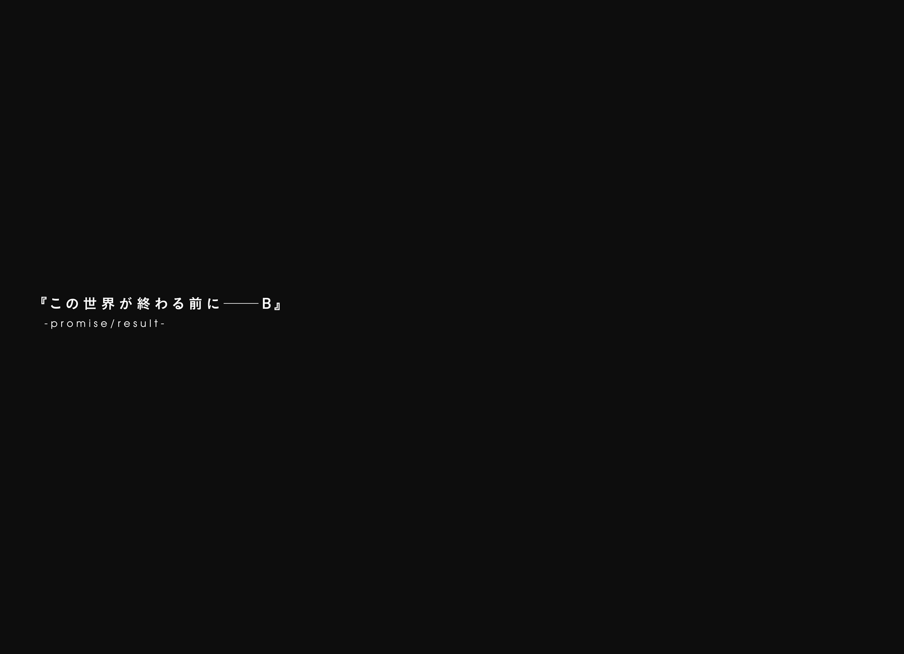
夜の闇の中。
一面に広がる灰色の中心で、一匹の〈獣〉が吠えている。
その声は、音と呼べる形では空気を震わせなかった。
そしてもちろん、その声の届く範囲に、生きるものなど何ひとつ存在しなかった。
だから、その〈獣〉の──〈月に嘆く最初の獣〉の声を聞き留め、意味を理解するものなど、何もいなかった。
それでも、〈獣〉は吠え続ける。あらゆるものに届かない無意味な音を、飽きることも絶望することもなく、あるいはそのような概念を理解することもなく、いつまでも。
ところで、空の上から見ればこの灰色の大地はどこであろうと同じようにしか見えないかもしれないが、実際に地上に降り立ってみれば、意外なほど豊かに、かつての起伏を留めていることに気づけるだろう。かつて丘だった場所には、ゆるやかな砂丘が。かつて峻険な山であった場所には、灰色の高峰が。そして、かつて石造の建物があった場所には、その面影を残した遺跡が、きちんと残っているものなのだ。だからこそサルベージャーたちは、その面影の隙間を縫うようにして、かつての文明の痕跡を探すことができるのだ。
さて、この場所の──〈獣〉が咆哮を続けるその足元の話をしよう。
ほんの五百年と少し前、ここには小さな街があったのだ。
さほど栄えていたわけではなかったし、これといった産業があるわけでもなかったが、一丁前に歴史だけは長い街だった。石畳から街路樹から劇場から巡回馬車の停留所からそこらの安アパートに至るまで、とにかく何もかもが、何百年も前からここにありますよとばかりに、どっしりとした風格を湛えてそこに在った。
その街の外れには、小さな養育院があった。もとは古びた幼年学校であったものを改装したもので、やはりその建物は長い歴史を思わせる佇まいをしていた。つまりボロかった。雨がふるたび、風が吹くたび、住んでいる者たちが板と金槌を持ってあちこちを走り回っていた。
街には、三千人ほどの住人がいた。
養育院には、二十人ほどの住人がいた。
それは五百と二十六年前のこと。今はもう、誰かの思い出の中にしかない景色。
そして、今。
〈獣〉は咆哮している。
どこにも届かない叫びを、放ち続けている。
ひとつだけ、ネタばらしをしよう。
かつて、古霊族の長老たちの世代は、風を震わせずとも心で言葉を通わせ合うことができたという。この〈獣〉がしていることは、ほぼそれに等しい。同じ種族の、近しい精神構造をした誰かにのみ受け取ることのできる、念話の一種だ。
そして、〈十七種の獣〉は、それぞれの種ごとに、別の種族だ。〈月に嘆く最初の獣〉の言葉は、〈月に嘆く最初の獣〉にしか届かない。
そして、〈月に嘆く最初の獣〉は、孤独種でもある。たった一体の内側だけで完結してしまう、完全に限りなく近い存在。同族と呼べる存在は、世界中を探しても、どこにもいない。
だからこの〈獣〉の声は、どこにも届かない。
そしてこの〈獣〉の声は、誰にも聞こえない。
初めてこの世界に出現してから、これまでそうしてきたように。〈獣〉はこれからも、無音の叫びを奏で続ける。
『────お──とー────さ、ん──────』
同族を持たない獣の声は。
誰にも触れず。誰にも響かず。
ただただ、灰色の荒野に溶けて、消えていく。
あとがき／のはずだった舞台裏
みなさん、はじめまして。新人作家の枯野瑛です。
すみません、半分ウソです。あんまり新しくありません。でも、スニーカー文庫さんから本を出させていただくのは初めてになります。新シリーズともども、よろしくお願いします。
あとがきから読まれる派の方のために深刻なネタバレを書いておきますと、犯人は師匠でトリックは氷の凶器です。ウソです。
この作品のタイトルは『終末なにしてますか？ 忙しいですか？ 救ってもらっていいですか？』（今さらだけど長いですねこれ!?）というものではありますが、一巻の物語終了時点において、あんまり誰も救われてないです。主人公がちょっと虚弱なせいで、バトルらしいバトルをすることもないです。こちらのネタバレは本当です。
滅びゆく世界の隅っこで、あとちょっとだけ生きていきたいと願うちっぽけな生存者たちが送る、必死で決死でゆるゆるだらだらしたジリ貧ライフ。その果てに、果たして本当に救いなんてものはあるのか。あるとしたら、それはどのようなものなのか。
そんな感じに続いていく物語、二巻くらいまでは、近いうちにお届けできるのではないかと思います。その後について現在時点ではお約束できませんが（応援のほどよろしくお願いします！）、いけるとこまでいけたらなぁと。
今回の本が完成するまでにも、多くの方々にお世話になりました。
暴走列車のごとくに加速するスケジュールの中、あたたかなイラストで妖精たちに表情をつけてくださったｕｅさん。そのスケジュールを管理してくださった編集のＧさん。「たまには小説書けよー」と励ましの言葉をかけ続けてくれた友人たち。修羅場の最中にささやかな癒しを提供し続けてくれた近所の猫たち。
そしてもちろん、いまここを読んでくださっているすべての方々に。
ありがとうございました。そして、今後ともよろしくお願いいたします。
次巻の物語は全力アクション。愛と憎しみのダブル絆パワーで合体した超巨大大陸間弾道ロボットが悪聖剣ビームで宇宙怪獣の群れを薙ぎ払います。ウソです。
二〇一四年夏
枯野 瑛
カバーイラスト／ue
カバーデザイン／百足屋ユウコ（ムシカゴグラフィクス）
終末なにしてますか？ 忙しいですか？ 救ってもらっていいですか？
枯野瑛
平成26年11月1日 発行
(C) 2014 Akira Kareno, ue
本電子書籍は下記にもとづいて制作しました
角川スニーカー文庫『終末なにしてますか？ 忙しいですか？ 救ってもらっていいですか？』
平成26年11月1日初版発行
発行者 堀内大示
発行所 株式会社ＫＡＤＯＫＡＷＡ
〒102-8177 東京都千代田区富士見2-13-3
03-3238-8745（営業）
編集 角川書店
〒102-8078 東京都千代田区富士見1-8-19
03-3238-8694（編集部）
http://www.kadokawa.co.jp/